Рід з берегів Кодими, з Гвоздавки на Любашівщині Одеської області: від Данила Дадула, відомого з метрик 1870–1880-х років (а імовірно — й від Лазаря Дадула, що одружився в 1814 році), до наших днів. Тут усе, що вдалося знайти в архівах і базах про кожного з предків: хто вони, звідки, що з ними сталося.
Оновлено 1 жовтня 2026
Що нового на сторінці
Шлюби 1877–1882 переглянуті, десяте коліно (2.10): Матвія Пачесного серед наречених немає (вінчання, імовірно, 1875–76 або 1878); знайдено шлюби Гаврила Івановича Пачесного (1879), Якова Сергійовича Короя з Анастасією Афанасіївною (18.01.1881) та Арсенія Ісидоровича й Терентія Петровича Короїв (1882), де поручителем був Сергій Панкратійович Корой. У дереві з'явився верхній ряд — Афанасій Дадул, десяте коліно (за по батькові Івана з ревізії 1795 року); одинадцяте коліно доступні джерела не називають.
У дерево додано версію лінії Стратієвських: Трифон → Дементій Трифонович († 1905) → Григорій Дементійович? → прадід Андрій (усе зі знаком питання).
Сестра бабусі Марії Андріївни — Галина Андріївна Стратієвська (від родини); додано в дерево.
8-ме і 9-те коліно (2.10): казка Гвоздівки 1795 року прочитана повністю — у дворі № 14 Іван Афанасійович Дадул, 40, із сином Семеном (той самий Семен, 18, похований 1811-го) — імовірний батько Лазаря; знайдено шлюб Кондрата Рублі з Тетяною Степанівною Догою (20.01.1824) та їхніх дітей Савву (1826), Михайла (1827), Євгенію (1830); Тетяна, дочка Стефана Доги, хрещена в Ананьєві 1801-го; Петро Панкратійович Корой — брат Сергія; у дерево додано Стефана Догу, Архипа Пачесного й Дмитра Короя як версії дев'ятого коліна.
Діти Дометія Трифоновича Стратієвського: знайдено сина Софронія (21.03.1903); Григорій Дементійович (1915) — імовірно, його старший син (версія). Також знайдено метрику Фоки Йосиповича Короя (1905), брата прадіда Тимофія; мати — «Матрона Авксентіївна».
Знайдено метрику прапрабабусі Матрони Авксентіївни Дадул (нар. 28.04.1882) і її брата Сергія (1883–1887); батьки — Авксентій Дадул і Євдокія Семенівна (Бовнегра?). У дереві Йосип і Матрона тепер окремими картками, над Матроною — її батьки.
Діди й бабуся: Олексій Терентійович Пачесний, нар. 14.09.1938, помер у 2017 році (дату уточнюємо); Марія Андріївна 05.05.1937 – 14.02.2017; Іван Федотович Спінатій 22.09.1938 – 14.08.2005.
Книги народжень 1900–1909 і 1890-х переглянуті: Федота Спінатія й Агрипини Устинівни там немає; книг Гвоздавки 1890-х онлайн немає. Додано Юліанію Спінатій (1906), Лук'яненків Гвоздавки (версія про Агрипину), Агрипину Рублю (1909).
Бабуся Марія Андріївна Пачесна (Стратієвська) померла 14 лютого 2017 року, проживши 79 років (дата від родини).
Книги народжень 1907–1909 переглянуті. Нова сестра прадіда Тимофія — Февронія Йосипівна Корой, нар. 2 липня 1907 (19.06 ст. ст.): тепер за документами в Йосипа й Матрони 6 дітей. Федота Спінатія й Агрипини Устинівни в цих роках немає.
Виправлено за незалежним аудитом (1.10): прибрано вигадану історію про приймака Григорія Стратієвського; дату Іларіона (нар. 23.03, хрещ. 27.03.1912); Тетяна — «вдова Бондарченкова», дівоче прізвище невідоме; верхні покоління Дадулів, шлюб Матрони Дадул 1902, тотожність Калини й Агрипини, смерть Ісидора й Андрія Дадулів, військові висновки й спорідненість за по батькові подано як версії; виправлено номери записів і календарне правило.
Книга 1911 р. (DGS 127453556) переглянута. У шлюбах: Яків Сергійович Корой підтверджений як поручник двох весіль; наречена Наталія Стратієвська вийшла заміж у присутності Якова Короя (ім'я уточнено 29.09 — попереднє «Михайла» й батько «Мажар» не підтвердилися); Антонія Корой (жовтень 1911); Нікантій, Феодор і Андрій Спінатії. Виправлено перелік мікрофільмів Гвоздавки.
Частина третя книги 1911 р. (смерті): знайдено смерть 2-річного Григорія (20.03.1911) і 13-річного Івана (29.03.1911), синів Назарія Григоровича Стратієвського.
Частину третю книги 1911 р. (смерті) переглянуто повністю (зобр. 519–543, весь рік): окрім Стратієвського Григорія, знайдено смерть 4-річного Іоанна, сина Ісаака Євстафійовича Рублі (25.05.1911). Інших цільових прізвищ (Пачесні, Корої, Дадули, Спінатії) серед 90 записів про смерть за рік не знайдено.
Частину першу книги 1911 р. (народження) переглянуто повністю (зобр. 447–503, весь рік): знайдено трьох нових Короїв — Варфоломія Ісидоровича (донька Євгенія, березень), Семена Никифоровича (син Гавриїл, серпень) і Трохима Феодоровича (син Стефан, серпень). Інших цільових прізвищ (Пачесні, Стратієвські, Дадули, Спінатії) серед ~160 записів про народження за рік не знайдено.
Частину другу книги 1911 р. (шлюби) переглянуто повністю (зобр. 505–517, січень–жовтень, 51 запис): знайдено заміжжя Ірини Іванівни Корой (21 січня, за Мощука) і Варвари Євсентіївни Дадул (26 січня, за Мазура) — обидві поки не пов'язані з відомими гілками родів.
Знайдено метод пошуку архівних книг: офіційний зведений каталог метричних книг ДАОО дає точні номери фонду/опису/справи, а пошук за ключовим словом «911_1_N» на FamilySearch напряму знаходить цифрову книгу. Так знайдено книги Гвоздавки за 1901 (мікрофільм 127453542) і 1905 (127453554) роки; цим запитом 1913 рік не знайдено (це не доводить, що книгу взагалі не оцифровано). Переглянуто шлюби обох років — Йосипа Сергійовича Короя й Макрини Ксенофонтівни серед них немає, але знайдено шлюб Семена Короя (26.10.1905).
Знайдено народження прапрабабусі Васси Стратієвської: Гвоздавка, 9 серпня 1884; батьки — унтер-офіцер запасу Никифор Кирилович (у 1881 р. записаний «Борисович») Стратієвський і Ксенія Луківна; хрещений — Григорій Феодорович Стратієвський.
Знайдено хрещення прапрадіда Ісидора Дадула: Гвоздавка, 5 лютого 1882 (ст. ст.), батьки — Даниїл Лазарович Дадул і Олена Феодосіївна. Ланку Ісидор → Данило тепер підтверджено документом; у дереві рік народження виправлено на 1882 (у справі СБУ — 1881). Також знайдено третій шлюб Йосипа Лазаровича Дадула (1904). Шлюби 1904 року переглянуто повністю — другого шлюбу Йосипа Короя там немає.
У картку дітей Лазаря в дереві додано Йосипа Лазаровича Дадула (бл. 1824, шлюб 1900) — зі знаком питання, бо братерство з Данилом — версія.
Ім'я прапрабабусі — Матрона чи Макрина? У документах дружину прапрадіда Йосипа Сергійовича Короя записано по-різному: шлюб 1902 року — Матрона Авксентіївна Дадул; народження Акилини 20.06.1904 — «Макрина Авксентієва» (скан); народження Тимофія 1910 — Макрина Ксенофонтівна; народження Марії 1912 — Матрона Ксенофонтова. Імена Матрона/Макрина і по батькові Авксентіївна/Ксенофонтівна писарі легко плутали; найімовірніше, це одна жінка — дочка Авксентія Дадула (метрика 1882 року знайдена, див. нижче). версія
Народження 1910–1911 років переглянуто повністю (DGS 127941304, зобр. 141–223; DGS 127453556, зобр. 447–503). Дітей Григорія Стратієвського (батька прадіда Андрія) і Федота Спінатія там немає — найімовірніше, обидва одружилися пізніше 1912 року. Із Спінатіїв у 1910 році хрестили дітей Захарій Федорович і Іоанн Федорович Спінатії (той Іоанн, що 1906 року вінчався з Акилиною Устинівною Лук'яненко) — сини якогось Федора Спінатія; можливо, рідня прадіда Федота (Федот — сина Федора не можна виключити, але й не доведено). версія Також 1911 року — Юлія, дочка Іоанна Луковича Рублі й Марфи Кирилівни (зобр. 478), небога прапрабабусі Любові.
Народження 1912 року — ще двоє дітей наших прапрадідів. Переглянуто всі народження Гвоздавки 1912 року (DGS 127941303, зобр. 238–352). Анна, жін. № 135: народилася 10 грудня, хрещена 16 грудня 1912 року (23 і 29.12 н. ст.); батьки — «гвоздавський селянин Исидор Данилов Дадул и законная жена его Василиса Никифорова, оба православные» (скан) — рідна сестра прабабусі Анастасії (у записі мати названа Василисою, в інших документах — Вассою). Марія, жін. № 80: народилася 15 липня, хрещена 29 липня 1912 року; батьки — «гвоздавський селянин Иосиф Сергиев Корой и законная жена его Матрона Ксенофонтова» (скан) — сестра прадіда Тимофія. Це уточнює ім'я прапрабабусі: не «Макрина», а Матрона (так само звали наречену Йосипа 1902 року — Матрону Авксентіївну Дадул; по батькові розходиться: Авксентіївна чи Ксенофонтівна — треба перевірити). Дітей Григорія Стратієвського й Федота Спінатія в книзі 1912 року немає.
Пошук по батькові прапрадіда Григорія Стратієвського. Переглянуто всі народження Гвоздавки 1916 року (DGS 127941296, зобр. 4–87; книги 1913–1915 онлайн немає): дітей жодного Григорія Стратієвського там немає; зі Стратієвських — лише Іосиф, син Іоанна Павловича (зобр. 70). Важливе уточнення за віком: Назарій Григорович мав сина вже 1898 року, отже, народився бл. 1870-х і за віком швидше син Григорія Феодоровича Стратієвського (1847–1910), ніж брат прадіда Андрія (1915). Прапрадід Григорій — батько Андрія — мав бути значно молодшим (нар. бл. 1880–1890-х); можливий кандидат — Григорій Дементійович Стратієвський із Гвоздавської волості (14-й Олонецький полк, поранений 1915), але це не доведено. версія Також 1916 року в Гвоздавці записано родину Прокопія Семеновича Попескула й Фекли Никифорівни (зобр. 74) — ще одна гілка Попескулів, з яких, імовірно, прабабуся Мотря.
Шлюб Лукіана Сергійовича Короя, 1896. Книга Гвоздавки 1896 року (ф. 911, оп. 1, спр. 3; DGS 127453559), шлюби, № 10, 24 січня (5.02 н. ст.): «села Гвоздавки селянин Лукіан Сергієв Корой, православний, першим шлюбом», 22 роки (нар. бл. 1873), і селянка Гвоздавки Олена Петрівна Ост..., 22 роки (скан). Це той самий Лукіан, у якого 1909 року померли дочки Єлисавета й Ольга. Народжений близько 1873 року, він — ровесник Даниїла, сина Сергія Панкратовича (1873), тож, імовірно, теж його син і брат прапрадіда Йосипа. версія Шлюбів Назарія Григоровича Стратієвського (щоб дізнатися по батькові прапрадіда Григорія) у книгах 1894 і 1896 років не знайдено.
Перша світова — гвоздавчани з наших родин (gwar.mil.ru; рідство — версія): Пачесні Іван Гаврилович (Усть-Двинський фортечний полк, хворий 1916), Петро Гаврилович (42-й запасний батальйон), Іван Лазаревич (24-й Сибірський стрілецький полк, поранений 15.07.1916); Стратієвські Іван Павлович (51-й Литовський полк, поранений 28.07.1917, Румунський фронт), Никон Васильович (2-й гренадерський Ростовський, зник безвісти 30.04.1915), Григорій і Федір Дементійовичі (поранені 1915); Корої Федір Якович (51-й Литовський, зник безвісти 26.01.1915; можливо, син Якова Сергійовича) і Спиридон Прокопович (12-й Великолуцький, поранений під Перемишлем 15.05.1915 і 1916); Спінатій Трохим Маркович (2-й гренадерський Ростовський, зник безвісти 30.04.1915; можливо, син Марка Антоновича); Рубля Олександр Мефодійович (лейб-гвардії Семенівський полк, поранений 29.06.1917); Попескули — Семен Іванович (зник безвісти 6.05.1915), Терентій Васильович, Тимофій Іванович (загинув 22.06.1916). Прапрадіда Івана Матвійовича Пачесного в базі немає.
Перша світова: прапрадід Сидір Данилович Дадул — ефрейтор 430-го Валківського полку, поранений 20.06.1917; його брат Афанасій — прапорщик (1915); брат Васси Прокопій Стратієвський загинув 3.03.1915.
Корої: Сергій, син Панкратія Дмитровича Короя, нар. 7.09.1836 у Гвоздавці — імовірний прапрапрадід (версія); Стратієви Кириловичі в Точиловому.
Спінатії: родове гніздо, імовірно, — станиця Щербані Бузького козацького війська (нині Вознесенський р-н), записи 1788–1874 (версія).
Сестри Любові: Євфимія (1870) і Акилина (1874) Луківни Рублі; Михайло — брат Луки; перша дружина Лазаря Дадула Євдокія († 1827), син Калістрат (1820); Спиридон Симеонович Дадул († 1832).
Пачесні в Гвоздавці з 1804 року («Пачисні»): Ігнатій, Кондрат, Тимофій, Лазар; імовірний брат Матвія — Прокофій Андрійович († 1873).
Ревізія 1795: Симон Дадул, 50, у Гандрабурах — найраніший відомий Дадул, вихідці з Молдавії (версія); казка селища Гвоздівки 1795 року.
Архів Арользен: Марія Спінатій, 14.12.1926, — остарбайтерка в Ольденбурзі 1945 року, можлива дочка прадіда Федота (версія).
Книги смертей, 1916 (1913 онлайн немає): Попескули в Гвоздавці — можлива рідня прабабусі Мотрі Попеску; діти Василя Гавриловича й Димитрія Васильовича Пачесних, Івана Харитоновича Спінатія, Самсона Тимофійовича Короя — як гіпотези.
Книги смертей, 1912: діти Тимофія Павловича Стратієвського, Стефана Васильовича Пачесного, Якова Терентійовича Короя. У дереві тепер видно дітей предків — скільки їх знайдено і скільки прожили (Лазар, Данило, Лука, Матвій, Йосип Корой). Виправлено покоління: Йосип Сергійович Корой — прапрадід, а не прапрапрадід; Стефан Дадул (†1910) — брат прапрадіда Сидора.
Книги смертей, 1911: Фока, син прапрадіда Йосипа Сергійовича Короя; Гавриїл Іоаннович Пачесний, 57; двоє синів Назарія Григоровича Стратієвського; Петро, син Авксентія Йосиповича Дадула; діти Варфоломія Короя — як гіпотези.
Книги смертей, 1910: Стефан, син Данила Лазаровича Дадула (брат прапрадіда Сидора?); онук Даміана Пачесного; діти Василя й Іоанна Гавриловичів Пачесних; Григорій Феодорович Стратієвський, 63; син Варфоломія Ісидоровича Короя; син Марка Спінатія — як гіпотези.
Дерево доповнено з книг смертей (версії): Кондрат Рубля — батько Луки (сини Михайло? Никита?); брат і сестра Любові — Іван? і Агафія?; сини Сергія Короя — Яків? Трифон? Лукіан?; брат Данила Дадула — Авксентій?
Книги смертей, 1909: дочки Лукіана Сергійовича Короя — ще одного імовірного брата прапрадіда Йосипа; Марфа, третя дружина Йосипа Лазаровича Дадула; Агрипина, дочка Івана Луковича Рублі; вдова Єлисавета Тимофіївна Рубля (можливо, вдова Мини) — як гіпотези.
Книги смертей, 1908: 16.11.1908 помер Лука Кондратович Рубля, 78 р., — імовірно прапрапрадід, батько Любові (версія); також Дарія — дружина Івана Павловича Стратієвського, і син Стефана Васильовича Пачесного.
Книги смертей, 1907: син померлого Трифона Сергійовича Короя — ще один імовірний брат прапрадіда Йосипа; Тимофій Йосипович Корой, 80 р. — як гіпотези.
Книги смертей, 1906: Пантелеймон, 17 р., син Якова Сергійовича Короя; Никита Йосипович Корой (90 р.) і Спиридон Якович Корой (59 р.) — як гіпотези.
Книги смертей, 1905: Євгенія — дружина Прокопія Ісидоровича Короя; Дометій Трифонович Стратієвський; Євфросинія Данилівна Стратієвська (45); дочка Назарія Стратієвського — як гіпотези.
Новий розділ «Прізвища роду в Книзі пам'яті» (Голодомор 1932–1933, знайшов ChatGPT): Єлизавета Іванівна Корой із Гвоздавки Другої (†1933) та інші зачіпки — як версії; «Григорія Стратієвського» відкликано: за актом № 9659 це Григорій Каушанський (помилка книги).
Книги смертей, 1904: померла немовлям Агрипина, дочка прапрадіда Йосипа Сергійовича Короя (6.07.1904); Ксенія — дружина Івана Лукіановича Рублі; вдова Марфа Ларіонівна Спінатій; вдова Агафія Семенівна Стратієвська; Ірина, дочка Назарія Стратієвського.
Книги смертей, 1903: Даміан Йосипович Пачесний (†1.12.1903, 56 р.) — імовірно батько Леонтія й Параскеви Даміанівни; інша гілка Пачесних, ніж Матвій Андрійович.
Книги смертей, 1902: Агафія Луківна Рубля, імовірна сестра прапрабабусі Любові (її син Феодор помер 1902 року) — версія.
Книги смертей, 1900–1901: Никита Кондратович Рубля (†1901, імовірний брат Луки), Агафія — дружина Йосипа Лазаровича Дадула (†1901), Василь Феодорович Стратієвський (†1901), Євфимія Ісааківна Корой (†1900); Іларіон Севастянович 1907 р. — найімовірніше Драганер.
Книги смертей, 1889–1890: Корнилій і Яків Ісааковичі та Афанасій Степанович Корої (усі нар. 1820-х), Трохим син Василя Феодоровича Стратієвського, вдова Катерина Григорівна Стратієвська — як гіпотези.
Книги смертей, 1888: 24.07.1888 помер Матвій Андрійович Пачесний, 40 років, — імовірно прапрапрадід, батько Івана Матвійовича (версія).
Нова секція «Що показали записи про смерть» (1886–1887): Спиридон Корой, Феодосія Ксенофонтівна, Домникія Пачесна, Гавриїл Спінатій, Харитина Кондратівна, Феодор Стратієвський, Сергій син Авксентія Дадула — усе як гіпотези.
Книги смертей, 1885: 8 січня 1885 року померла 78-річна вдова Тетяна Семенівна Дадулова — імовірно Тетяна, дружина Лазаря (версія: по батькові не збігається).
Книги смертей: у 1884 році помер Петро, син Михайла Кондратовича Рублі — імовірного брата прапрапрадіда Луки; там же вдова Тетяна Іванівна Короєва, 70 років.
Знайдено шлюб Авксентія Лазаревича Дадула (14.01.1879) — імовірного батька Матрони Дадул і брата прапрапрадіда Данила; поручителем був сам Данило.
Знайдено метрику прапрабабусі Любові Луківни Рублі (Гвоздавка, 27.09.1882, за ст. ст. 15.09): батьки — Лука Кондратович Рубля й Параскева Авксентіївна. Тепер це документ, а не версія; Мина Лукович — її рідний брат.
Дати в дереві тепер подано за новим календарем, а в дужках — за старим (для подій до 1918 року).
Знайдено, імовірно, батьків прапрабабусі Любові Рублі: у 1885 році в Луки Кондратовича Рублі й Параскеви Авксентіївни народився син Мина — той самий Мина Лукович Рубля, що одружився 1907 року (раніше помилково прочитаний як Василь/Іван), імовірний брат Любові.
Знайдено метрику прапрадіда Івана Матвійовича Пачесного (Гвоздавка, 27.01.1888): батьки — Матвій Андрійович Пачесний і Марія Тимофіївна. У дереві з'явилися Марія Тимофіївна, брат Макарій (1884) і Андрій Пачесний (з по батькові Матвія).
Знайдено, імовірно, прапрапрадіда Матвія Пачесного: у 1884 році в Матвія Андрійовича Пачесного і Марії Тимофіївни народився син Макарій — можливий старший брат прапрадіда Івана Матвійовича (версія). Брата Любові Рублі з шлюбу 1907 року перечитано як Іоанна(?) Луковича; його народження в книгах 1883–1884 не знайдено.
Переглянуто шлюби Гвоздавки 1906–1909 років: другого шлюбу прапрадіда Йосипа Короя там немає. Знайдено Василя Луковича Рублю (1907) — імовірного брата прапрабабусі Любові; Олексія Гавриловича Пачесного (1906); Іоанна Павловича Стратієвського (1906); Іоанна Феодоровича Спінатія (1906); Корої — Трохим Феодорович, Іларіон(?) Севастянович (1907), Прокопій Ісидорович (1909).
У дерево додано батьків прапрабабусі Васси (дівоче прізвище — Стратієвська): Никифора Кириловича Стратієвського і Ксенію Луківну (її дівоче прізвище ще не відоме), батька Ксенії Луку (відомий лише з її по батькові) і сестру Васси Анну (1879).
Знайдено Наталію Данилівну Дадул (Гвоздавка, 19.08.1879) — рідну сестру прапрадіда Ісидора; її хрещений — Сергій Корой.
Знайдено старшу сестру прапрабабусі Васси — Анну Никифорівну Стратієвську (Гвоздавка, 24.06.1879). По батькові Никифора підтверджено: Кирилович.
У дерево додано Никифора Стратієвського — батька прапрабабусі Васси (з її по батькові й дівочого прізвища). Чи він той самий Никифор Борисович, що в книзі 1881 року, — версія.
Знайдено шлюб прапрадіда Ісидора Дадула (21.01.1904): його дружина — Васса Никифорівна Стратієвська. Знайдено шлюб-кандидат: Йосип Сергійович Корой і Матрона Авксентіївна Дадул (28.01.1902); чи це прапрадід Йосип, не доведено — розбіжність з «Макриною Ксенофонтівною» 1910 року описано. Знайдено Йосипа Лазаревича Дадула (1900, 76 років) — імовірного брата Данила Лазаровича. Книгу народжень 1881 року переглянуто: Ісидора в ній немає (грудень у книзі відсутній). Переглянуто шлюби 1900, 1902, 1903 і початок 1904 року: нові Пачесні, Корої, Стратієвські та Лука Спінатій.
Знайдено метрику Ірини Данилівни Дадул (Гвоздавка, 4 травня 1884): батьки — Данило Лазарович Дадул і Олена Феодосіївна. Це сильно підтримує версію, що вони ж батьки Ісидора. Переглянуто книгу 1883 року: нові записи про Якова Сергійовича Короя, Андрія Архиповича та Захарія Івановича Пачесних, Харитона Гавриловича Стратієвського.
Знайдено Ісидора Даниловича Дадула поручителем на шлюбі Ірини Данилівни Дадул 22.05.1906 (ст. ст.): Ірина — імовірна сестра Ісидора й тітка прабабусі Анастасії (версія). Відкрито книги 1882, 1883 і 1887 років для пошуку народжень Любові Рублі, Ірини Дадул та Івана Пачесного.
Незалежна перевірка знахідок (29.09). Підтверджено метрики Анастасії Дадул, Андрія Дадула, Терентія Пачесного та шлюб Івана Пачесного й Любові Рублі. Виправлено: дата Анастасії в дереві (23.12, а не 25.12 — це була дата хрещення); ім'я нареченої 1911 року — Наталія, не Михайла, батько «Мажар» не підтвердився; хронологія родини Спінатіїв (Іван народився 1938-го, вже після Голодомору, тож не міг бути серед дітей, які пережили саме голод); заголовок про Калину Бабенко/Агрипину Устинівну приведено у відповідність до застереження в тексті; ланцюжок Ісидор → Данило Лазарович → Лазар Іванович чіткіше позначено як версію, не факт.
У дереві з'явилися пунктирні картки імовірних родичів: Яків Сергійович Корой (брат прапрадіда Йосипа?), Петро Іванович Пачесний (брат прадіда Терентія?), Назарій Григорович Стратієвський (брат прадіда Андрія?) і Василиса Никифорівна Дадул (двоюрідна сестра прабабусі Анастасії?).
Знайдено метрику Андрія Сидоровича Дадула, брата прабабусі Анастасії (19.08.1910), скан додано. Розібрано гілки Короїв за хрещеними й поручителями: найімовірніший родич — Яків Сергійович, брат прапрадіда Йосипа.
Дописано родичів із метричних книг 1907–1912 років: імовірний брат Ісидора Никифор Дадул, ще три гілки Пачесних, інші Корої та Назарій Григорович Стратієвський.
Знайдено шлюб прапрадіда Івана Матвійовича Пачесного (Гвоздавка, 19.01.1909): дівоче прізвище прапрабабусі Любові Луківни — Рубля. У дереві з'явилися окремі картки Любові та її батька Луки Рублі.
Знайдено метричний запис про народження прадіда Терентія Пачесного (Гвоздавка, 31.05.1912): батьки Іван Матвійович Пачесний і Любов Луківна. У дереві замість версії «Гаврило» тепер Матвій Пачесний.
Новий документ про прадіда Терентія Пачесного: дружина Віра Григорівна, оточення в жовтні 1941, призов 1.04.1944. Знайшов ChatGPT, перевірено.
Уточнено: мати діда Івана — Калина Бабенко; «Калина» — домашнє ім'я, за документом вона, імовірно, Агрипина Устинівна; тоді її батько — Устин Бабенко.
Дерево розтягнуто, щоб написи не накладалися; у картках з'явилася зелена галочка — «є документ».
Знайдено метричний запис про народження прадіда Тимофія Короя (Гвоздавка, 17.02.1910): батьки Йосип Сергійович Корой і Макрина Ксенофонтівна; у дереві з'явився Сергій Корой.
Додано повний аркуш метричної книги 1907 року із записом про народження прабабусі Анастасії Дадул. Сестру тата Надію Перхун у дереві переставлено ліворуч, щоб тато з мамою стояли поруч.
У розділ документів додано метричні записи 1835 і 1828 років про дітей Лазаря Дадула.
Знайдено метричний запис про народження прабабусі Анастасії (Гвоздавка): народилася 10.12.1907, хрещена 25.12.1907 — за старим стилем; тобто 23.12.1907 і 07.01.1908 за новим. Родинна дата 07.01.1908 збігається з датою хрещення, не народження. Батьки — Ісидор Данилович Дадул і Васса Никифорівна.
Уточнено формулювання: зв'язки Лазар → Данило → Ісидор та Калина = Агрипина позначено як версії; книги фонду 911 за 1907–1908 роки знайдено на FamilySearch (перевірив ChatGPT).
Восьме коліно: Лазар Іванович Дадул — шлюби 1814 і 1827, четверо дітей 1818–1835, книга села Гвоздавки; його батько Іван Дадул.
FamilySearch: знайдено оцифровану метричну книгу Гвоздавки Другої за 1872 рік із записами про дітей Данила Лазаровича Дадула та Олени Феодосіївни. У дереві сьоме коліно — Лазар Дадул.
Додано готовий текст запиту до Держархіву Одеської області (розділ «Де лежать наступні покоління»).
У дереві шостий ряд: прапрапрадід Данило Дадул (за по батькові Ісидора) та, як версія, Гаврило Пачесний.
За родинним переказом, брат прабабусі Анастасії Андрій Дадул служив охоронцем у румунів і після війни був розстріляний; батька, Сидора, розстріляли за опір колгоспу. Документально дати й обставини не встановлені. В архіві СБУ по Одещині є справа 18123-п на Ісидора Даниловича Дадула (1881 р. н., документи 1933–1989) — кандидат, який ще треба звірити.
Прабабуся Анастасія Дадул: 07.01.1908 – 19.12.1991; п'ятеро дітей — Марія, Михайло, Андрій, Микола, Ольга; після війни виростила ще п'ятьох дітей розстріляного брата.
Виправлено написання прізвища: Спінатій.
Родина підтвердила: Терентій Іванович Пачесний — прадід, батько діда Олексія.
Розділ «Усі знайдені документи»: дев'ять сканів з ЦАМО.
Мати діда Олексія — Віра Пачесна.
Роки народження дідів: Олексій Терентійович та Іван Федотович — обидва 1938.
Знайдено прадіда Терентія Івановича Пачесного (1912): медаль «За відвагу», повернувся з війни.
Знайдено Степана Федотовича Спінатія (1924), брата діда Івана: зник безвісти в липні 1944; у документі названо матір — Анастасію Устинівну.
Нагородний лист прадіда Андрія Стратієвського: орден Слави за бій на Шпрее 20.04.1945.
Донесення 1945 року з іменем прабабусі Анастасії Сидорівни (Дадул).
Стаття про рід Пачесних з хутора Пачислаго (Володимирівка).
татова лініямамина лініядокумент знайдено в архівізі слів родиниверсія припущення, не доведено
Дерево
Чоловік і дружина стоять поруч, кільце між ними — шлюб. Зелена галочка в кутку картки — на цю людину є документ (метрика, військовий список чи нагородний лист). Пунктирна картка зі знаком питання — імовірний родич: людина є в документах, але спорідненість ще не доведена; під ім'ям написано, ким вона, найімовірніше, вам доводиться. Лінія від кільця вниз веде до дітей: прямий предок — у повній картці, його брати й сестри — у сусідній світлій. Дати подано за новим (григоріанським) календарем, а в дужках — за старим (юліанським), яким користувалися в метричних книгах до лютого 1918 року; різниця — 12 днів до 28 лютого 1900 року включно й 13 днів після цього. Натисніть на ім'я, щоб перейти до історії. На вузькому екрані дерево гортається вбік.
Мамина лінія
Корої, Дадули, Спінатії
Прадід
02.03.1910 (17.02 ст. ст.) – 25.02.1945
документ
Тимофій Йосипович Корой
Народився 17 лютого 1910 року за старим стилем (2 березня за новим) у Гвоздавці, у родині гвоздавського селянина Йосипа Сергійовича Короя та Макрини Ксенофонтівни; хрещений 21 лютого в Архангело-Михайлівській церкві, запис № 19 (див. статтю про батьків). У березні 1941 року в нього й Анастасії народилася донька Ольга. За три місяці почалася війна, а в серпні село зайняли німецькі й румунські війська. Документів про його мобілізацію 1941 року поки не знайдено; відомі військові записи починаються з призову в квітні 1944-го.
Майже три роки родина жила під румунською окупацією. Наприкінці березня 1944 року район звільнили, і вже 20 квітня 1944 Тимофія призвав Любашівський райвійськкомат. Спершу він потрапив до 214-го армійського запасного полку 5-ї гвардійської армії, влітку 1944-го його перевели в 228-й гвардійський стрілецький полк 78-ї гвардійської дивізії.
Ця армія пройшла Віслу й Одер. У лютому 1945 року вона тримала фронт у Сілезії, на південь від оточеного Бреслау, біля гори Зобтен. Там 25 лютого 1945 року червоноармієць Корой загинув. До Перемоги лишалося два з половиною місяці. Вдома лишилися дружина й п'ятеро дітей; наймолодшій, Ользі, було без місяця чотири роки.
1910
народився, с. Гвоздавка 2, Любашівський район
до 1929
одружився з Анастасією Дадул; діти Марія (1930), Михайло (1933), Андрій (1935), Микола (1938), Ольга (1941)
штаб 78 гв. стрілецької дивізії / 228 гв. стрілецький полк, 1-й Український фронт
25.02.1945
убитий у бою
поховання
спершу на східній околиці с. Альбрехтсдорф повіту Бреслау, за іншим документом у с. Міхельсдорф. Ототожнення з сучасним селом (імовірно, Ольбрахтовіце біля Вроцлава) і теперішнє місце поховання не встановлені
Корой Тимофей Иосифович… 1910… Одесская обл., Любашевский р-н, с. Гвоздавка 2… Убит 25.2.45… Ближайшие родственники: жена Корой Анастасия Сидоровна, с. Гвоздавка 2.
Іменний список безповоротних втрат 228 гв. сп, 27.02.1945, рядок 28
Донесення, з якого стало відомо ім'я прабабусі. Прадід у рядку 28. ЦАМО, ф. 58, оп. 18003, спр. 340.
Народилася 10 грудня 1907 року за старим стилем і була хрещена 25 грудня, що за новим стилем дає 7 січня 1908 — дату, яку пам'ятає родина (див. запис у статті про батьків). Померла 19 грудня 1991-го, у 83 роки. Її ім'я й по батькові підтверджує й донесення 1945 року: у графі «ближайшие родственники» стоїть «жена Корой Анастасия Сидоровна, с. Гвоздавка 2». На цю адресу прийшла похоронка.
З Тимофієм Короєм вона мала п'ятеро дітей: Марію (1930), Михайла (1933), Андрія (1935), Миколу (1938) та Ольгу (1941). Перша відома дитина — Марія, 1930 року; запис про шлюб Тимофія й Анастасії поки не знайдено.
Усю окупацію 1941–1944 років вона прожила в Гвоздавці з п'ятьма дітьми, найменшій із яких було кілька місяців. Поруч, на околиці села, восени 1941 року окупанти влаштували табір для євреїв, у якому загинуло близько п'яти тисяч людей. У квітні 1944-го чоловіка забрали на фронт, а в лютому 1945-го вона овдовіла у 37 років, з дітьми від чотирьох до п'ятнадцяти.
Після війни вона ще й допомогла виростити п'ятьох дітей свого брата Андрія. За родинним переказом, Андрій Сидорович Дадул мав інвалідність, за окупації служив охоронцем у румунів, а після повернення радянської влади його розстріляли. П'ятеро його дітей лишилися сиротами, і Анастасія, сама вдова з п'ятьма дітьми, ростила їх разом зі своїми. Дата й обставини його смерті документально не встановлені; вироку чи справи поки не знайдено. Родина каже також, що батька Анастасії, Сидора, розстріляли чекісти за те, що він саботував колгосп і не віддав худобу. Імовірно, це 1933 рік: у переліку справ архіву СБУ по Одещині є справа 1933 року на Дадула Ісидора Даниловича, 1881 р.н. (див. Сидір Дадул).
Знайдено запис про народження Андрія. Метрична книга Гвоздавки за 1910 рік, частина перша, запис № 84: Андрій народився 19 серпня, хрещений 5 вересня 1910 року за старим стилем (1 і 18 вересня за новим). Батьки: «Гвоздавскій крестьянинъ Исидоръ Даниловъ Дадулъ и законная жена его Васса Никифорова, православные» — ті самі, що й в Анастасії, тож Андрій — її рідний молодший брат, на два з половиною роки молодший. Хрещені: особистий почесний громадянин Григорій Іванович Охлоповський і Параскева, дочка Стефана Митрофанського. Хрестив священник Михаїл Бортовський.
Метрична книга Гвоздавки 1910 року, розворот із записами № 84–92. Андрій — другий зверху: батьки Ісидор Данилович Дадул і Васса Никифорівна; праворуч, другий запис, хрещені. FamilySearch, мікрофільм 127941304, зобр. 199–200.
FamilySearch, мікрофільм 127941304 (Гвоздавка, 1910), зобр. 199–200, запис № 84; ДАОО, ф. 911, оп. 1, спр. 17, арк. 155 зв.–156.
Прізвище Дадул у Гвоздавці відоме з 1814 року; окремі його носії є й у військових базах, обидва без місця народження:
Дадул Леонтій Іларіонович, 1905 р.н., гвардії червоноармієць, хлібопек 665-ї польової хлібопекарні 81-ї гв. дивізії, у армії з 3.04.1944, медаль «За бойові заслуги». Призваний польовим військкоматом, як і місцеві чоловіки після звільнення. версія міг бути її братом або дядьком.
Дадул Степан, помер 19.10.1918, похований на євангелічному цвинтарі в Нойруппіні, Німеччина. Судячи з дати, це, мабуть, полонений Першої світової. версія зв'язок невідомий.
Близьке молдавське прізвище Додул дуже поширене в сусідніх селах: Колбасна й Гандрабури, на тому ж березі Кодими. Серед них є Сидоровичі й Ісидоровичі (Ісидор = Сидір). Чи це та сама родина, покажуть тільки документи.
Йосип Сергійович Корой і Матрона (Макрина) Авксентіївна Дадул
Знайдено запис про народження Тимофія. Метрична книга Архангело-Михайлівської церкви Гвоздавки за 1910 рік, частина перша, запис № 19: народився 17 лютого, хрещений 21 лютого 1910 року за старим стилем. Батьки: «Гвоздавскій крестьянинъ Іосифъ Сергіевъ Корой и законная жена его Макрина Ксенофонтова, оба православные». Хрещені: гвоздавські селяни Терентій Іванович Диденкул та Агрипина Антонівна, дружина Наума Гордуза. Хрестив той самий священник Михаїл Бортовський із псаломщиками Іоанном Охлоповським і Стефаном Дмитрієвим, що через три роки до того хрестив Анастасію Дадул, майбутню дружину Тимофія.
Отже, ваш прапрадід — Йосип Сергійович, а його батько, прапрапрадід, — Сергій Корой, народжений приблизно в 1850–60-х. Прапрабабуся Макрина Ксенофонтівна; її дівоче прізвище поки не встановлене. Знайдено шлюб-кандидат, який може стосуватися Йосипа (а може — іншого Йосипа Сергійовича): книга Гвоздавки 1902 року, запис № 8, 28 січня 1902 року (ст. ст.) — «гвоздавскій крестьянинъ Іосифъ Сергѣевъ Корой», першим шлюбом (вік не вписано), і «гвоздавская крестьянка Матрона Авксентіева Дадулъ», першим шлюбом, 20 років. Поручителі нареченого — Іоанн Артемович Попескул і Григорій Авксентійович Устилов(?); нареченої — Антоній Пантелеймонович Устилов(?) і Димитрій Лаврентійович Богопольський. Розбіжність: у метриці Тимофія 1910 року мати — «Макрина Ксенофонтівна», тут наречена — «Матрона Авксентіївна». Імена схожі на слух (Макрина/Матрона, Ксенофонт/Авксентій), тож це може бути та сама жінка, записана по-різному; або Матрона померла, і Макрина — друга дружина Йосипа. Другого шлюбу Йосипа поки не знайдено: у шлюбних книгах Гвоздавки 1900–1909 років (усі записи переглянуто) його немає. Тож або Макрина й Матрона — одна жінка, або Йосип одружився вдруге в іншій парафії. Якщо це одна людина, то дівоче прізвище прапрабабусі — Дадул, і мамина лінія Короїв та Дадулів поєдналася ще до Тимофія й Анастасії. версія (ДАОО, ф. 911, оп. 1, спр. 8; FamilySearch, DGS 127453545, зобр. 388, останній запис на лівому аркуші.) Прізвище Корой схоже на молдавське Coroi: жителів правобережної Гвоздавки здавна називають «молдаванами», бо село заснували переселенці з Молдавії наприкінці XVIII століття.
Знайдено метрику прапрабабусі Матрони. Книга народжень Гвоздавки 1882 року (ДАОО, ф. 37, оп. 10, спр. 35; FamilySearch, DGS 113550502, зобр. 224), жін. № 32: Матрона народилася 28 квітня 1882 року (16.04 ст. ст.), хрещена 2 травня (20.04). Батьки: «Гвоздавскій крестьянинъ Авксентій Іосифовъ Дадулъ и законная жена его Евдокія Семенова, оба православные». Хрещені — гвоздавські селяни Михайло … Бовнегр(?) і Олена Феодосіївна, дружина Даниїла Дадула (прапрапрабабуся по лінії Ісидора). Вік збігається зі шлюбом 1902 року (20 років), тож Матрона Авксентіївна Дадул, дружина Йосипа Короя, — саме вона.
Її брат Сергій. Книга 1883 року (ф. 37, оп. 14, спр. 31; DGS 115149119, зобр. 30), чол. № 98: Сергій народився 22 жовтня 1883 (10.10 ст. ст.); батьки ті самі — Авксентій Іосифов Дадул і Євдокія Семенова, хрещені ті самі. Він помер 17 лютого 1887 року від крупу, 3½ роки (DGS 115148772, зобр. 56).
Батьки Матрони. Авксентій Дадул (нар. бл. 1856) одружився 14 січня 1879 року з Євдокією Семенівною, 16 років, дочкою гвоздавського селянина Семена Бовнегри(?) (шлюб 1879, DGS 113550490, зобр. 95). У шлюбному записі 1879 року його по батькові прочитано як «Лазарев», а в метриках дітей 1882 і 1883 років — «Іосифов». Дружина, хрещені й поручитель (Даниїл Лазаревич Дадул) ті самі, тож це одна родина; яке по батькові правильне, поки не ясно. Петро, син «Авксентія Іосифова Дадула», помер 29.08.1911 — імовірно, ще один брат Матрони. версія
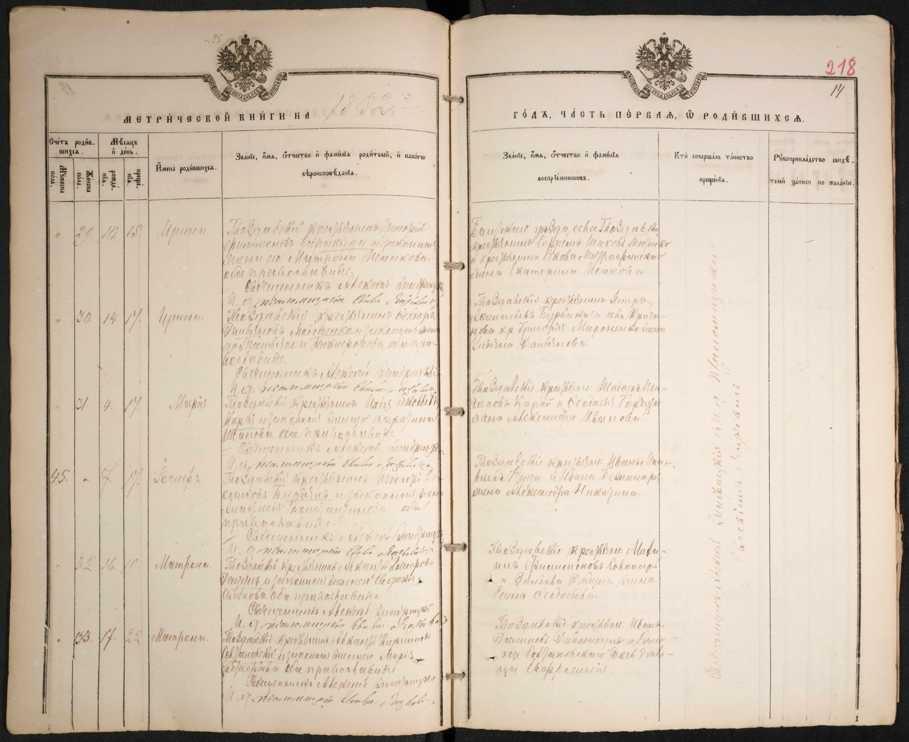
1882, квітень, жін. № 32: Матрона, нар. 16.04, хрещ. 20.04 (ст. ст.); батьки Авксентій Іосифов Дадул і Євдокія Семенова. DGS 113550502, зобр. 224.
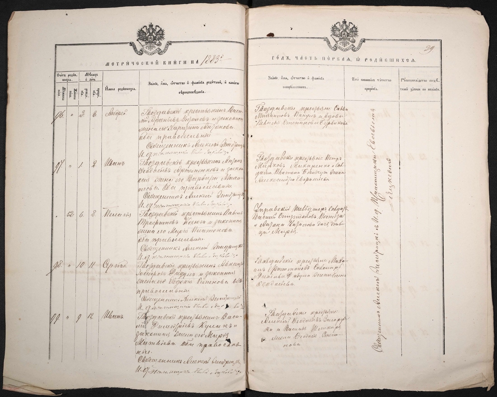
1883, жовтень, чол. № 98: Сергій, нар. 10.10, хрещ. 11.10 (ст. ст.); батьки Авксентій Іосифов Дадул і Євдокія Семенова. DGS 115149119, зобр. 30.
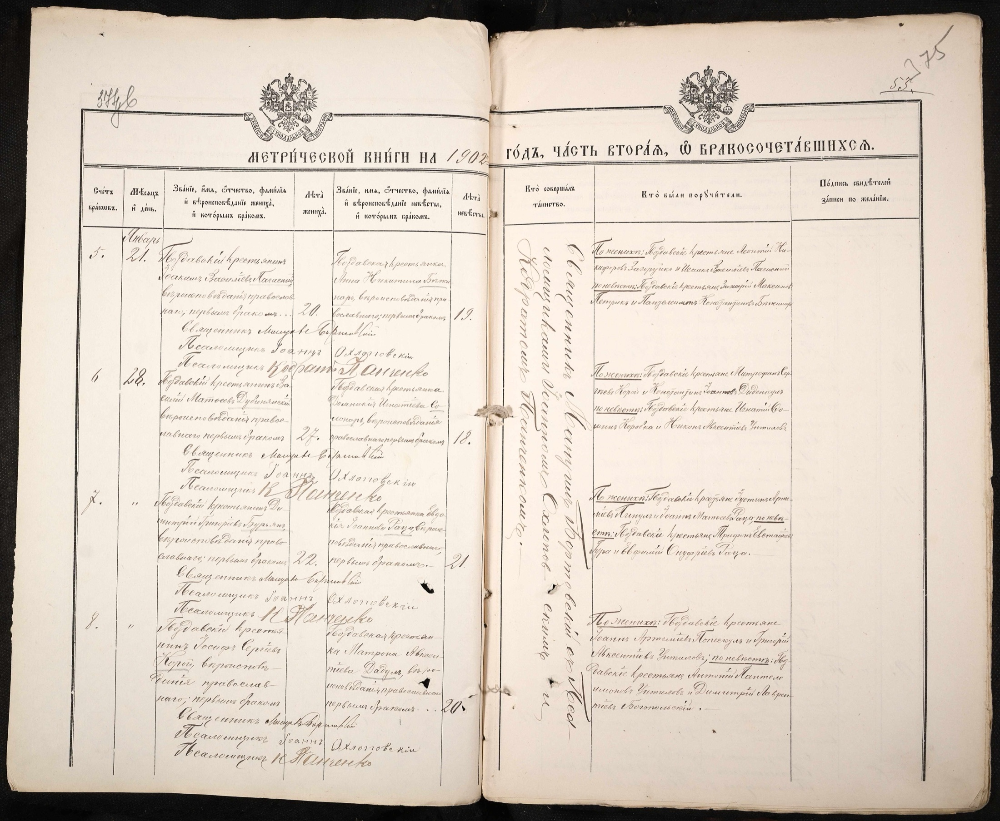
Метрична книга Гвоздавки 1902 року, частина друга, шлюби № 5–8; № 8 унизу (28.01.1902 ст. ст.): Йосип Сергійович Корой і Матрона Авксентіївна Дадул, 20. FamilySearch, DGS 127453545, зобр. 388.
Хто батько Матрони. У шлюбній книзі Гвоздавки 1879 року (ДАОО, ф. 37, оп. 10, спр. 6; FamilySearch, DGS 113550490, зобр. 95), запис № 3, 14 січня 1879 року (ст. ст.): «Гвоздавскій крестьянинъ Авксентій Лазаревъ Дадулъ, православный, первымъ бракомъ», 23 роки, обвінчався з Євдокією, дочкою гвоздавського селянина Семена Бовнегри(?), 16 років. Поручителем з боку нареченої був Даниїл Лазаревич Дадул — прапрапрадід, батько Ісидора. Отже, Авксентій — імовірно рідний брат Данила, а Матрона Авксентіївна Дадул (нар. бл. 1882), яка 1902 року вийшла за Йосипа Сергійовича Короя, — його дочка і двоюрідна сестра Ісидора. версія Батька Авксентія в записі не названо, а за віком (бл. 1856 р. н.) він на покоління молодший за Лазаря Івановича, народженого в 1790-х; тож Данило й Авксентій можуть бути синами іншого, молодшого Лазаря.
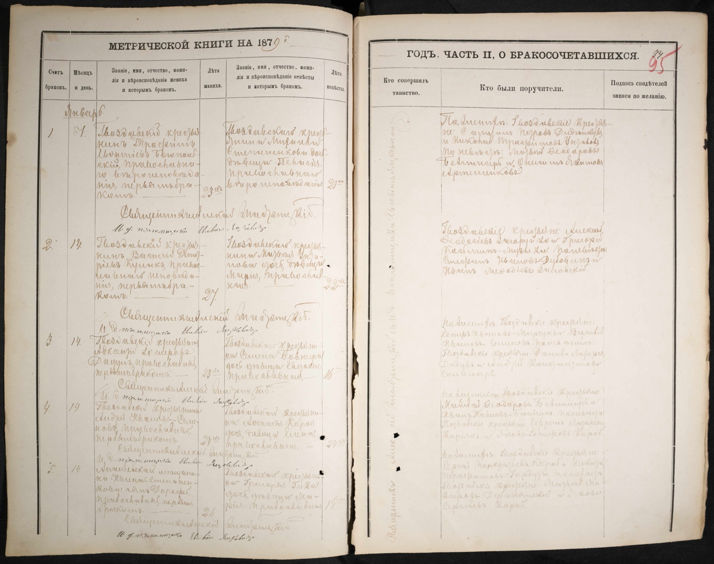
Метрична книга Гвоздавки 1879 року, частина друга, січень; № 3 (14.01.1879 ст. ст.): Авксентій Лазарев Дадул, 23, і Євдокія Семенівна Бовнегра(?), 16; поручитель — Даниїл Лазаревич Дадул. FamilySearch, DGS 113550490, зобр. 95.
Знайшов ChatGPT, перевірено за оригіналом: FamilySearch, мікрофільм 127941304, зобр. 153–154, запис № 19. У першому переказі ChatGPT назвав матір Марфою і дату 12 лютого; в оригіналі чітко «Макрина» та «17».
Інші Корої в книгах Гвоздавки. Прізвище в селі не одиноке, і як саме ці люди пов'язані з Йосипом Сергійовичем, поки невідомо:
4 червня 1907 — шлюб Терентія Ілліча Короя, 21 рік, і Параскеви Филимонівни Гордуз, 18 (книга 1907, № 42).
15 січня 1908 — шлюб Якова Терентійовича Короя, 20, і Дарії Федорівни Іваненко, 18 (книга 1908, № 1). У лютому 1912-го в них народилася дочка Анастасія.
14 січня 1909 — шлюб Андрія Івановича Карауша й Акилини Арсенівни Корой, 18; одним із поручителів був Іван Матвійович Пачесний (книга 1909, № 7).
3 жовтня 1911 — шлюб катеринославського селянина (жених не з Гвоздавки) й Антонії Корой, 26, гвоздавської (книга 1911, зобр. 516, № 43). Батько Антонії поки не встановлений, тобто до якої гілки Короїв вона належала — невідомо.
20 січня 1910 — шлюб Павла Арсенійовича Короя, 22, і Євфросинії Данилівни Бойченко, 19 (книга 1910, № 20); Павло й Акилина, мабуть, брат і сестра, діти Арсенія Короя.
26 жовтня 1905 року — шлюб Семена Короя (по батькові нерозбірливо) з Марією [Стеценовою?] (книга 1905, частина друга, зобр. 156, № 33).
Народження в родинах Короїв 1911 року (книга 1911, частина перша): 26 березня — дочка Євгенія в Варфоломія Ісидоровича Короя й Варвари Тодоракової (зобр. 471, № 34) — по батькові збігається з відомим уже Прокопієм Ісидоровичем, тож вони, можливо, брати (спільне по батькові ще не доводить спільного батька); 2 серпня — син Гавриїл у Семена Никифоровича Короя й Софії Іларіонівни (зобр. 487, № 83); 14 серпня — син Стефан у Трохима Феодоровича Короя й Тарасини Тимофіївни (зобр. 489, № 91). Як ці троє пов'язані між собою і з Сергійовичами — поки не встановлено.
Хрещені й поручителі: що вони кажуть про родину. Щоб зрозуміти, хто з Короїв кому родич, я переглянула всі хрестини Гвоздавки за 1910 і 1912 роки, шлюби 1907–1910 років і виписала, де Корої стоять батьками, хрещеними або поручителями. Картина така:
Сергійовичі — ваша гілка. Окрім прапрадіда Йосипа Сергійовича, у книгах є Яків Сергійович Корой: восени 1910 року він хрестив дитину разом з Іриною Панкратіївною, дружиною Федора Дубинянського (книга 1910, зобр. 210), а навесні 1912-го — разом із дружиною Феодосія Гордуза (книга 1912, зобр. 261). У лютому 1911 він двічі виступив поручителем на шлюбах у Гвоздавці (книга 1911, зобр. 509–510, записи № 21 і № 22): у другому випадку наречена — Наталія Стратієвська (23 роки, перший шлюб; по батькові прочитане попередньо, потребує повторної перевірки), і його підпис поручителя підтверджує, що родини Короїв і Стратієвських у Гвоздавці добре одне одного знали. За рідкісним у селі по батькові він, можливо, рідний брат Йосипа, тобто брат прадіда Тимофія по батькові — його дядько. версія Застереження: у книзі 1883 року (зобр. 23, жіночий запис № 43) 5 серпня народилася Євдокія, донька «гвоздавського селянина Якова Сергієва Короя і законної дружини його Анастасії Афанасієвої». Якщо це той самий Яків, він народився не пізніше приблизно 1860-х, тобто значно старший за Йосипа (бл. 1880-х); тож або між братами велика різниця у віці, або в селі було двоє Яковів Сергійовичів. Братерство з Йосипом через це ще менш певне.
1883 рік: у лютому (зобр. 8, запис № 24) народився Димитрій, син Василя Корой(а) й Марфи Григорівни — по батькові Василя прочитано непевно.
Яковичі. Ілля Якович, Арсеній Якович та Іван Якович Корої — брати: на хрестинах Антонія, сина Арсенія Яковича й Пелагії Олексіївни, у січні 1910 року хрещеним був Іван Якович (книга 1910, зобр. 145–146), а на весіллі Терентія Ілліча Короя в 1907 році поручителем від нареченого був Ілля Якович — мабуть, його батько. Діти Арсенія: Павло (шлюб 1910), Акилина (шлюб 1909), Васса і Віра Арсенівни. У 1912 році в Іллі Яковича й Лукії Миколаївни народився син Мартиніан (зобр. 262).
1881 рік (книга народжень Гвоздавки, DGS 113550504): 7 березня народився Василій, син Прокопія Ісидоровича Короя і Євгенії (зобр. 10, № 17); 8 листопада — Михаїл, син Якова Сергійовича Короя і Феодосії(?) Афанасіївни (зобр. 32, № 80). Отже, Яків Сергійович мав дітей уже 1881 року — він значно старший за Йосипа.
Шлюби: 11 лютого 1902 — Михаїл Никифорович Корой, 23, і Дарія Митрофанівна(?) Мельниченко(?), 18 (книга 1902, № 33); 19 жовтня 1903 — Михаїл Якович Корой, 22, і Матрона Григорівна Кобза(?), 18 (книга 1903, № 40, зобр. 235); листопад 1903 — удова Марфа Михайлівна Корой, 23, вийшла за Харлампія Устилова(?) (№ 48, зобр. 237).
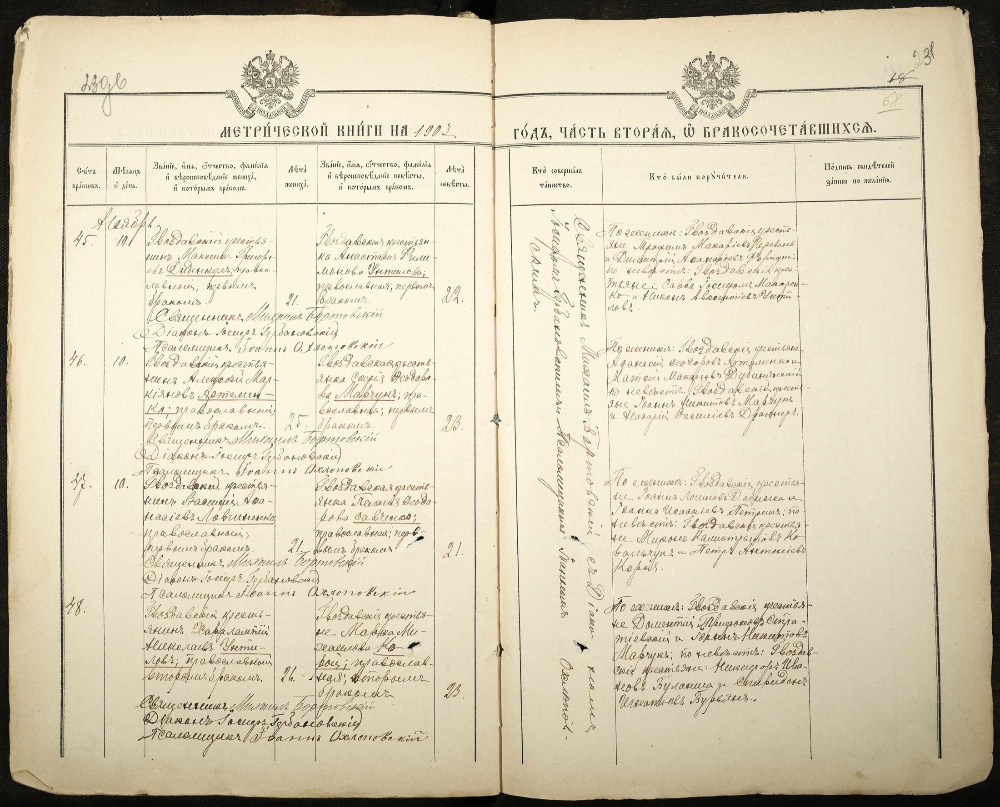
Метрична книга Гвоздавки 1903 року, частина друга; № 48 (листопад 1903): удова Марфа Михайлівна Корой, 23. FamilySearch, DGS 127453547, зобр. 237.
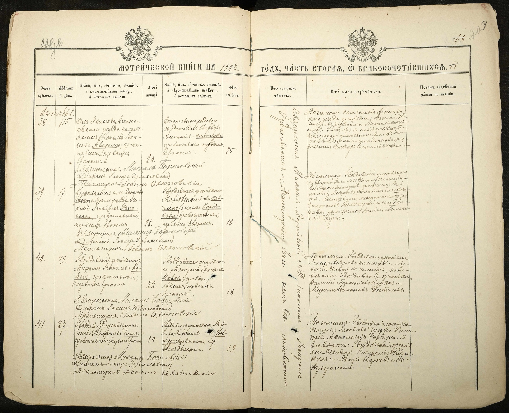
Метрична книга Гвоздавки 1903 року, частина друга; № 40 (19.10.1903 ст. ст.): Михаїл Якович Корой, 22, і Матрона Григорівна Кобза(?), 18. FamilySearch, DGS 127453547, зобр. 235.
Шлюби 1907–1909: 5 лютого 1907 — Трохим Феодорович Корой (книга 1907, зобр. 295); 2 вересня 1907 — Іларіон(?) Севастянович Корой(?), 20, і Марфа Іоаннівна Диденкул, 17 (№ 44, зобр. 302, прізвище читається непевно); 9 листопада 1909 — удівець Прокопій Ісидорович Корой, 54, другим шлюбом, з удовою Марією Михайлівною Божегрою(?), 54 (книга 1909, № 68, зобр. 149).
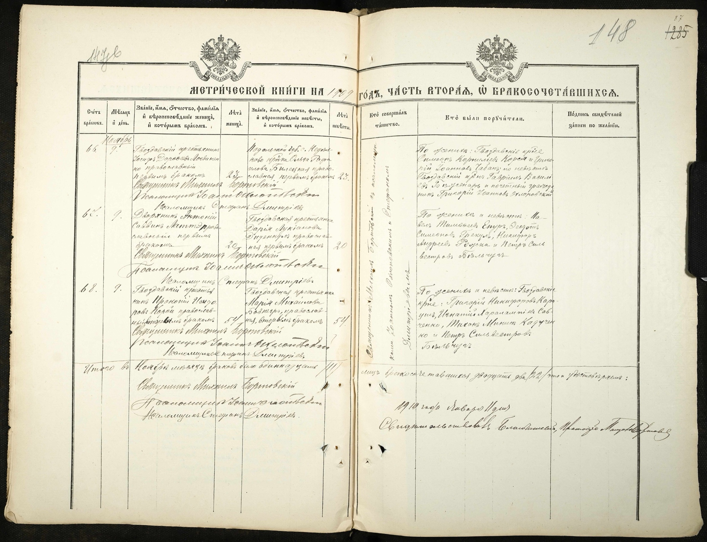
Метрична книга Гвоздавки 1909 року, частина друга; № 68: Прокопій Ісидорович Корой, 54, другим шлюбом, і удова Марія Михайлівна Божегра(?), 54. FamilySearch, DGS 127453543, зобр. 149.
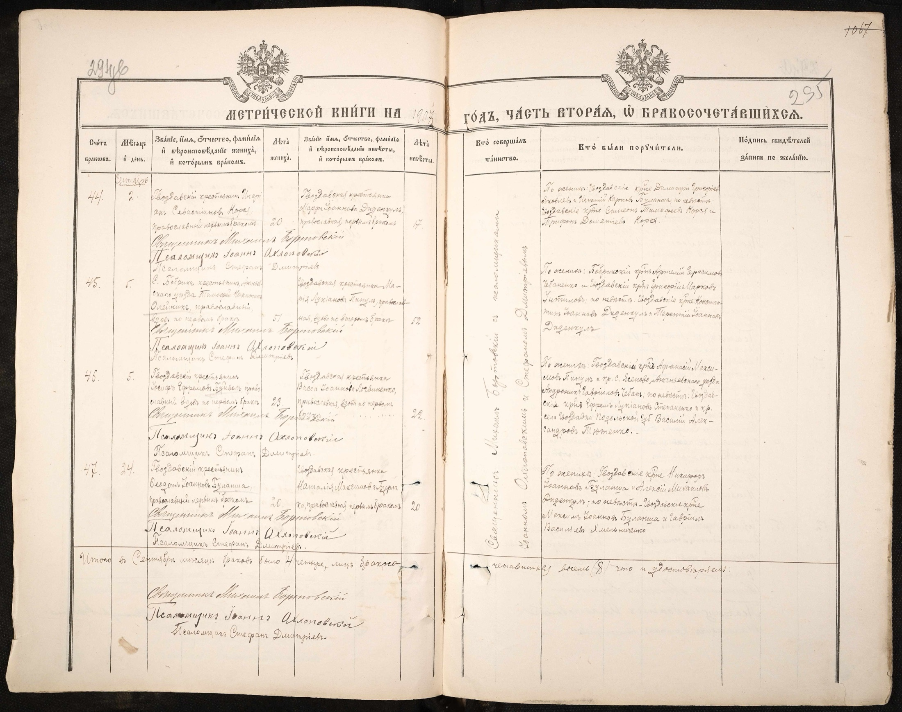
Метрична книга Гвоздавки 1907 року, частина друга; № 44 (2.09.1907 ст. ст.): Іларіон Севастянович Корой(?) — найімовірніше Драганер (див. книги смертей), 20, і Марфа Іоаннівна Диденкул, 17. FamilySearch, DGS 127453541, зобр. 302.
Інші Корої, чий зв'язок не видно: Яків Терентійович (шлюб 1908), Михайло Васильович і Марія Трохимівна (дочка Ірина, 1910), Прокопій Афанасійович, Прокопій Ісидорович, Семен Тимофійович, Федір. Також 21 січня 1911 року гвоздавська селянка Ірина Іванівна Корой, 18 років, вийшла заміж за Григорія Іларіоновича Мощука (книга 1911, частина друга, зобр. 507, № 11).
Прямого зв'язку між Сергійовичами та Яковичами в цих записах немає: вони не хрестили дітей одні одних і не ручалися на весіллях. Хрещені Тимофія 1910 року теж не Корої, а Диденкул і дружина Гордуза. Тож Павло Арсенійович, Акилина й інші Яковичі — поки однофамільці або далека рідня; розв'язати це можуть лише метрики 1860–1880-х років, коли народжувалися Сергій і Яків Корої. Найближчий до вас кандидат — Яків Сергійович.
Архівна адреса запису: Держархів Одеської області, ф. 911, оп. 1, спр. 17 (Гвоздавка, 1910).
Інші Корої з Гвоздавки у військових документах
Хто
Рік
Доля
Корой Конон Михайлович
1903
призваний у липні 1941, зник безвісти у вересні 1941
Корой Савва Васильович
1923
призваний у квітні 1944; медаль «За відвагу», вижив
Корой Володимир Калинкович
1923
призваний в Одесі у 1941, зник безвісти
Прапрадід
17.02.1882 (5.02 ст. ст.) – дата смерті невідома
документзі слів родини
Ісидор (Сидір) Данилович Дадул і Васса Никифорівна, дівоче Стратієвська
Знайдено запис про народження Анастасії. Метрична книга Архангело-Михайлівської церкви Гвоздавки за 1907 рік (ДАОО, ф. 911, оп. 1, спр. 13), частина перша, запис № 144: народилася 10 грудня, хрещена 25 грудня 1907 року за старим стилем, тобто 7 січня 1908 року за новим, саме та дата, яку пам'ятає родина. Батьки: «Гвоздавскій крестьянинъ Исидоръ Даниловъ Дадулъ и законная жена его Васса Никифорова, оба православные». Хрещені: гвоздавські селяни Трофим Григорович Головко та Агафія Євдокіївна, дружина Стефана Мищука. Хрестив священник Михаїл Бортовський із псаломщиками Іоанном Охлоповським і Стефаном Дмитрієвим.
Отже, батько Анастасії — Ісидор Данилович, той самий, що в переліку справ архіву СБУ (1881 р.н., справа 1933 року), а її мати, ваша прапрабабуся, — Васса Никифорівна.
Знайдено запис про хрещення Ісидора. Метрична книга Гвоздавки за 1882 рік, частина перша, лютий, запис № 16 (чоловічий): Исидоръ народився 5 лютого, хрещений 9 лютого 1882 року за старим стилем (17 і 21 лютого за новим). Батьки: «Гвоздавскій крестьянинъ Даніилъ Лазаревъ Дадулъ и законная жена его Елена Феодосіева, оба православные». Хрещені: ананьївський міщанин Іван Іосифович(?) Степаненко і селянка Гвоздавки Євфросинія Георгіївна, дружина Василя Драгнюка(?). Ім'я, мабуть, дали на честь святого Ісидора Пелусіота (4 лютого). Отже, ланка Ісидор → Данило Лазарович і Олена Феодосіївна тепер підтверджена документом. У справі СБУ вказано 1881 рік — це розбіжність на рік (у слідчих справах рік часто писали приблизно); за метрикою — 1882.
Метрична книга Гвоздавки 1882 року (ДАОО, ф. 37, оп. 10, спр. 35), розворот із записом про народження Ісидора (5.02.1882 ст. ст.); батьки — Даниїл Лазарович Дадул і Олена Феодосіївна. FamilySearch, DGS 113550502, зобр. 217.
Знайдено шлюб Ісидора й Васси. Метрична книга Гвоздавки за 1904 рік, частина друга, запис № 14, 21 січня 1904 року (ст. ст.): «Гвоздавскій крестьянинъ Исидоръ Даниловъ Дадулъ», православний, першим шлюбом, 22 роки, і «гвоздавская крестьянка Васса Никифорова Стратіевская», православна, першим шлюбом, 20 років. Отже, дівоче прізвище прапрабабусі — Стратієвська, і народилася вона близько 1883–1884 року. Вік Ісидора (22 роки без двох тижнів) точно відповідає даті народження 5 лютого 1882. Поручителі з боку нареченого — гвоздавські селяни Стефан Парфенович(?) Митрофанський і Павло Антонович Епур; з боку нареченої — Андрій Григорович Грузин(?) і Іоанн Лупович(?) Савескул. Вінчали священик Михаїл Бортовський, диякон Іосиф Гербановський, псаломщик Іоанн Охлоповський.
Прізвище Стратієвська збігається з прізвищем татової лінії (прадід Андрій Григорович Стратієвський). Чи Васса з тієї самої родини, документ не каже. У книзі народжень 1881 року є Никифор Борисович Стратієвський (син Димитрій, 19 травня 1881, дружина Ксенія Луківна) — і саме він виявився її батьком (див. нижче).
Знайдено запис про народження Васси. Метрична книга Гвоздавки за 1884 рік, частина перша, серпень, запис № 55 (жіночий): Васса народилася 9 серпня, хрещена 15 серпня 1884 року (ст. ст.; 21 і 27 серпня за новим). Батьки: «села Гвоздавки числящійся въ запасѣ унтеръ-офицеръ Никифоръ Кирилловъ Стратіевскій и законная его жена Ксенія Лукина, оба православные». Хрестив священик Павло Пухальський(?). Хрещені: гвоздавські селяни Григорій Феодорович Стратієвський і Євдокія Пантелеймонівна, дружина Афанасія Молодця. Ім'я дали на честь святої Васси (21 серпня). На весіллі в січні 1904-го їй було насправді 19½ років, записали 20.
Розбіжність у по батькові Никифора. У 1881 році (народження сина Димитрія) він записаний як «унтер-офіцер Никифор Борисович Стратієвський» з дружиною Ксенією Луківною, у 1884-му — «Никифор Кирилович». Звання, ім'я, прізвище, село й дружина збігаються, тож це, найімовірніше, одна людина, але розбіжність у по батькові не пояснена. «Кирилович» підтримує те, що в 1881 році в Гвоздавці жив Павло Кирилович Стратієвський — можливо, його брат. версія Хрещений Григорій Феодорович Стратієвський — родич, але чи він батько прадіда Андрія Григоровича, документ не каже; зв'язок не встановлено. Старша сестра Васси. У книзі Гвоздавки 1879 року (червень, запис № 44, жіночий) 24 червня народилася, 26-го хрещена Анна, дочка «рядового солдата Никифора Кирилова Стратієвського і законної дружини його Ксенії Лукиної»; («Лукина» — це не прізвище, а старе написання по батькові: Ксенія Луківна, дочка Луки; її дівоче прізвище ще не відоме); хрещені — гвоздавські селяни Гавриїл Степанович(?) … і Євдокія Пантелеймонівна, дружина Афанасія Молодця (та сама хрещена, що й у Васси 1884 року). Отже, вже в червні 1879 року подружжя жило в Гвоздавці, і по батькові Никифора — Кирилович (так само в 1880 і 1884 роках; «Борисович» 1881 року — розбіжність, яку ще треба пояснити). У квітні 1880-го «рядовий Никифор Кирилович Стратієвський» був хрещеним (на хрестинах Ірини) у родині Василя Феодоровича Стратієвського. У 1880 році інших дітей Никифора не народжувалося. (DGS 113550490, зобр. 81; 1880 — DGS 113550712, зобр. 286.) Шлюб Никифора й Ксенії (з її дівочим прізвищем) шукали в шлюбних книгах Гвоздавки за 1877 (DGS 113550468), 1879 (DGS 113550490, зобр. 95–102), 1880 (DGS 113550712, зобр. 312–317) і 1881 роки — його там немає. Книгу Гвоздавки 1878 року на FamilySearch поки не знайдено; можливо, вони вінчалися раніше або в іншій парафії (наприклад, у селі нареченої).
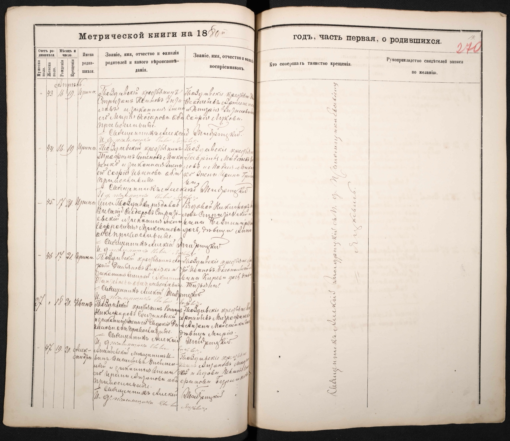
Метрична книга Гвоздавки 1880 року, квітень: «рядовий Никифор Кирилович Стратієвський» — хрещений у родині Василя Феодоровича Стратієвського. FamilySearch, DGS 113550712, зобр. 286.
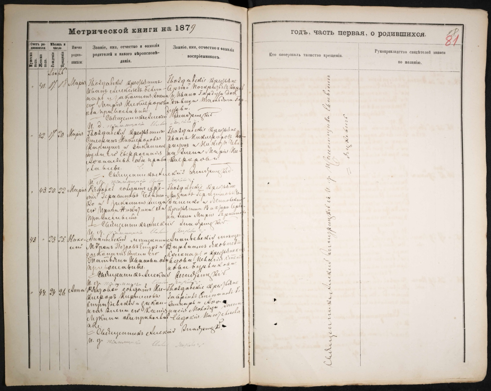
Метрична книга Гвоздавки 1879 року, червень: народження Анни, старшої сестри Васси; батьки — Никифор Кирилович Стратієвський і Ксенія Луківна. FamilySearch, DGS 113550490, зобр. 81.
ДАОО, ф. 37, оп. 14, спр. 37 (1884); FamilySearch, DGS 115149116, зобр. 232, другий запис зверху; хрещені — правий аркуш.
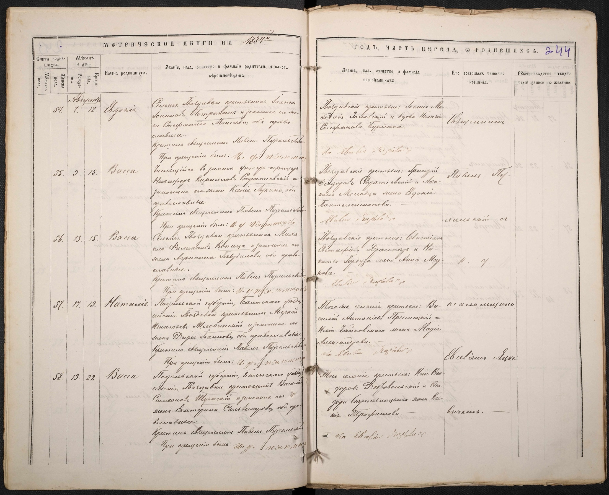
Метрична книга 1884 року (ДАОО, ф. 37, оп. 14, спр. 37), запис про народження Васси (9.08.1884 ст. ст.); батьки — Никифор Кирилович Стратієвський і Ксенія Луківна. FamilySearch, DGS 115149116, зобр. 232.
Метрична книга Гвоздавки 1904 року, частина друга, шлюб № 14 (21.01.1904 ст. ст.): Ісидор Данилович Дадул, 22, і Васса Никифорівна Стратієвська, 20. FamilySearch, DGS 127453540, зобр. 198.
За словами родини, його розстріляли чекісти за саботаж колгоспу: він не захотів віддавати худобу. Це роки колективізації, 1930–1933. У переліку справ колишнього архіву КДБ по Одеській області (Держархів Одеської області, ф. Р-8065, оп. 2, № 7663) є справа 18123-п на Дадула Ісидора Даниловича, 1881 року народження, документи 1933–1989 років, 18 аркушів, у розділі «прекращенные дела». Ісидор і Сидір — одне ім'я, але за метрикою Ісидор народився 1882 року, а не 1881-го. Тож це поки збіг ПІБ і років, не пряме ототожнення: крайні дати справи (1933–1989) самі по собі не встановлюють рік розстрілу, а особу з цієї справи ще належить звірити за селом, дружиною Вассою чи дітьми, згаданими в матеріалах справи. Батьків Ісидора тепер встановлено метрикою 1882 року: Даниїл Лазарович Дадул і Олена Феодосіївна. Обставини смерті відомі лише з родинного переказу; дата смерті не встановлена. Справу можна замовити в Одесі; у ній будуть село, склад сім'ї та обставини арешту.
У «Памяти народа» є ще Додул Сидір Єфремович, 1894 р.н., призваний Великоврадіївським РВК у квітні 1944-го, 6-та гв. повітряно-десантна дивізія, двічі нагороджений медаллю «За відвагу». Для батька Анастасії він замолодий, але може бути родичем.
Відомо двоє дітей Ісидора й Васси: Анастасія (1907) та Андрій (19.08.1910, запис № 84 книги 1910 року). У січні 1912 року Васса Никифорівна сама стала хрещеною матір'ю чужої дитини, тобто тримала її на хрестинах (а не хрестилася дорослою): у записі народження Гвоздавки серед хрещених стоїть «Исидора Данилова Дадула жена Васса Никифорова» (книга 1912, зобр. 247).
Імовірний брат Ісидора. У метричній книзі Гвоздавки за 1912 рік, запис № 35: 1 квітня народилася, 8 квітня хрещена Василиса, дочка гвоздавського селянина Никифора Даниловича Дадула і Марфи Яковлівни. Той самий рідкісний рід, те саме по батькові й те саме село — отже, Никифор, найімовірніше, рідний брат Ісидора, а Василиса — двоюрідна сестра прабабусі Анастасії. версія
Імовірна сестра Ісидора. У шлюбній книзі Гвоздавки за 1906 рік (запис № 25, 22 травня ст. ст. / 4 червня н. ст.) наречена — Ірина Данилівна Дадул, гвоздавська селянка, 22 роки, перший шлюб; наречений — Никон Григорович із села Сирове, 27 років (прізвище потребує повторного прочитання). Серед поручителів з боку нареченої — Ісидор Данилович Дадул, гвоздавський селянин: ті самі прізвище, ім'я й по батькові, що в батька Анастасії. Ірина може бути сестрою Ісидора, а отже тіткою прабабусі Анастасії. Проте слова «брат» у записі немає: і братерство, і те, що поручитель — саме батько Анастасії, поки спираються лише на збіг ПІБ і села. версія
Знайдено метрику Ірини. Метрична книга Гвоздавки за 1884 рік, запис № 31 (жіночий): 4 травня 1884 року народилася, 6 травня хрещена Ірина; батьки — «Гвоздавскій крестьянинъ Данилъ Лазаревъ Дадулъ и законная жена его Елена Феодосіева, оба православные». Ім'я, прізвище, по батькові, село й вік (22 роки на день весілля 1906-го) збігаються, тож це, дуже ймовірно, та сама Ірина. Отже, Данило Лазарович і Олена Феодосіївна документально є батьками Ірини, а те, що вони ж батьки Ісидора, отримало сильну додаткову підтримку: на весіллі Ірини поручителем був Ісидор Данилович. Тепер знайдено і хрещення самого Ісидора (5 лютого 1882, батьки ті самі — див. вище), тож Ірина — його рідна сестра, а Данило й Олена — прапрапрадід і прапрапрабабуся за документами. Книгу народжень Гвоздавки 1881 року (ф. 37, оп. 10, спр. 27; FamilySearch, DGS 113550504, зобр. 2–33) переглянуто повністю: записи йдуть із січня по листопад, грудня в книзі немає; Ісидора, як і жодного Дадула, серед них немає. Запис знайшовся в книзі 1882 року (5 лютого).
ДАОО, ф. 37, оп. 14, спр. 37; FamilySearch, DGS 115149116, зобр. 224, перший запис зверху. Знайшов ChatGPT, перевірено за оригіналом.
ДАОО, ф. 904, оп. 1, спр. 31; FamilySearch, DGS 124357203, зобр. 353. Знайшов ChatGPT, прочитано за оригіналом.
Ще одна сестра Ісидора — Наталія. Метрична книга Гвоздавки за 1879 рік, серпень, запис № 50 (жіночий): 19 серпня 1879 року народилася, 27-го хрещена Наталія; батьки — «гвоздавскій крестьянинъ Даніилъ Лазаревъ Дадулъ и законная жена его Елена Феодосіева, оба православные». Хрещені — гвоздавські селяни Сергій Панкратович(?) Корой і Євфросинія Георгіївна, дружина Василя Драгнюка(?) (вона ж через три роки хрестила Ісидора). Отже, Наталія — рідна старша сестра Ісидора, на два з половиною роки старша. Хрещений Сергій Корой цікавий: прапрадід Йосип Сергійович Корой — син якогось Сергія Короя; чи це той самий Сергій, документ не каже. У березні 1884 року в Гвоздавці померла 70-річна «вдова Тетяна Іванова Короєва» (народжена близько 1814 року; книга 1884, DGS 115149116, зобр. 263) — за віком вона могла бути матір'ю чи бабусею Сергія Короя. версія Того ж року там поховано малих дітей Василя Власовича Короя та Ісаї Короя, а в 1883 році — сина Терентія Петровича Короя, тож Короїв у Гвоздавці 1880-х було кілька родин. версія
ДАОО, ф. 37, оп. 10, спр. 6 (1879); FamilySearch, DGS 113550490, зобр. 84, запис № 50, четвертий на лівому аркуші.
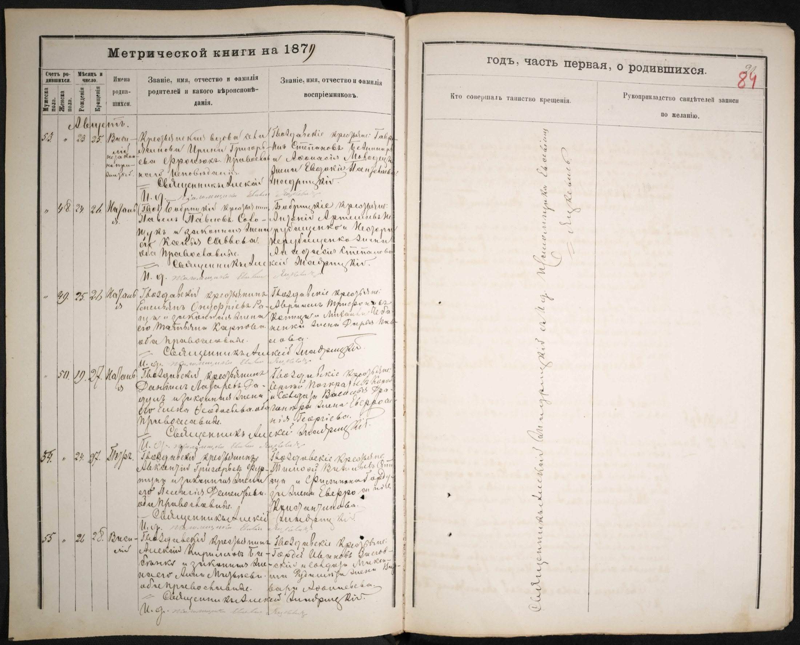
Метрична книга Гвоздавки 1879 року (ДАОО, ф. 37, оп. 10, спр. 6), запис № 50, четвертий на лівому аркуші: Наталія, дочка Даниїла Лазаровича Дадула і Олени Феодосіївни, старша сестра Ісидора. FamilySearch, DGS 113550490, зобр. 84.
Імовірний брат Данила Лазаровича. У шлюбній книзі Гвоздавки 1900 року (запис № 37, 23 жовтня) наречений — «гвоздавскій крестьянинъ Іосифъ Лазаревъ Дадулъ», удівець, другим шлюбом, 76 років (отже, народився близько 1824 року); наречена — удова Агафія Стратонівна(?) Устимова. Поручителі нареченого — Карп Семенович Цуркан(?) і Мефодій Феодорович Диденкул; нареченої — Кирило Тимофійович Коровка і Максим Іванович Майстренко. Той самий по батькові «Лазарович» і те саме село, що в Данила: Йосип, імовірно, його брат, тобто ще один син Лазаря Івановича. Прямо цього документ не каже. версія Через чотири роки, 12 листопада 1904-го, Йосип Лазарович одружився втретє — з удовою Марфою Даниловою(?) Молодець, 67 років; йому записано 72 (у 1900-му — 76; вік у записах про літніх часто приблизний). (Книга 1904, № 44, DGS 127453540, зобр. 206.)
ДАОО, ф. 911, оп. 1, спр. 6 (1900); FamilySearch, DGS 127453533, зобр. 213, другий запис зверху.
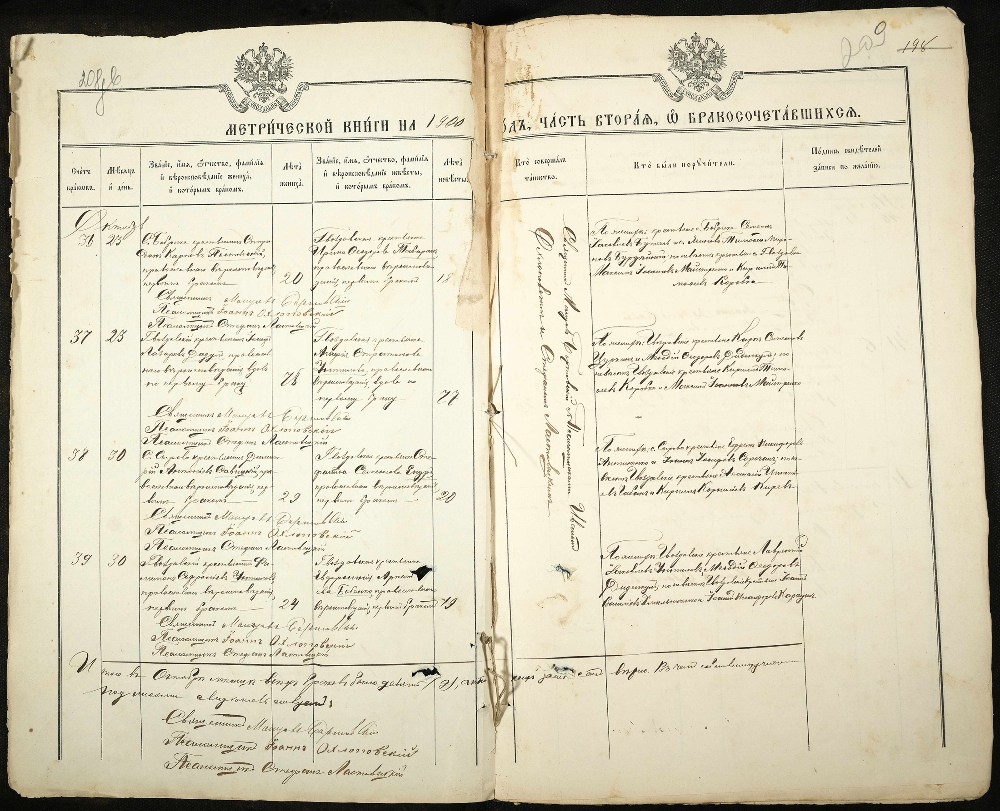
Метрична книга Гвоздавки 1900 року, частина друга, шлюби № 36–39; № 37 (23.10.1900 ст. ст.): удівець Йосип Лазарович Дадул, 76, і Агафія Устимова. FamilySearch, DGS 127453533, зобр. 213.
Ще одна гілка Дадулів. У метричній книзі Гвоздавки за 1911 рік (частина друга, шлюби, зобр. 507, № 14): 26 січня одружилися гвоздавський селянин Петро Васильович Мазур, 24 роки, і Варвара Євсентіївна Дадул, 19 років. По батькові «Євсентіївна» не збігається ні з Ісидором, ні з Никифором Даниловичами — отже, це, найімовірніше, ще одна, поки не пов'язана гілка роду: її батько, гвоздавський селянин Євсентій (Євстафій) Дадул.
FamilySearch, мікрофільм 127941303, зобр. 272.
Прапрадід Сидір — солдат Першої світової. На порталі «Пам'яті героїв Великої війни» (gwar.mil.ru) є два документи про «Дадуль Сидора Даниловича, Херсонська губ., Ананьївський повіт, Гвоздавська волость». Іменний список втрат 430-го піхотного Валківського полку за 15–30 червня 1917 року (РДВІА, ф. 16196, оп. 1, спр. 568, № 137): рядовий, православний, поранений або контужений 20 червня 1917 року біля села Дзике Лани (Галичина, червневий наступ 1917 р.), евакуйований через перев'язувальний загін 108-ї піхотної дивізії (запис). Картка бюро обліку втрат: ефрейтор 430-го Валківського полку, хворий, надійшов до лазарету 30 червня 1917 року (штемпель «№ 2 … г. Курськ»); на картці також стоїть рік 1903 — найімовірніше, рік призову на дійсну службу, коли Сидорові був 21 рік (запис). Він пережив війну: 1933 року проти нього заведено справу (архів СБУ).
Брат Сидора — прапорщик Афанасій Данилович. Там же: «Дадул Афанасій Данилович, Ананьївський повіт, Гвоздавська волость», прапорщик (молодший офіцерський чин) 133-го піхотного Сімферопольського полку, поранений 5 березня 1915 року біля села Нижня Яблінька в Карпатах. Уведомча картка Центрального госпіталю Червоного Хреста (№ 940, 5 березня 1915 року) уточнює: 29 років (нар. бл. 1886 — у роки, коли народжувалися діти Данила Лазаровича), одружений, православний, поранений у руку й праву ногу. Отже, найімовірніше, це молодший брат прапрадіда Сидора. версія
Брат прапрабабусі Васси — Прокопій Никифорович Стратієвський. Рядовий 55-го піхотного Подільського полку з Гвоздавки: поранений 10 жовтня 1914 року, а 3 березня 1915 року загинув (список убитих 55-го Подільського полку за березень 1915 р., РДВІА, ф. 16196, оп. 1, спр. 150, № 28: «Стратьевскій Прокопій Никифоровичъ, Херсонська губ., Ананьївський пов., с. Гвоздавка»). Найімовірніше, син прапрапрадіда Никифора Кириловича — рідний брат Васси й Анни. версія
Центральний госпіталь Червоного Хреста, картка № 940, 5.03.1915: прапорщик 133-го Сімферопольського полку Афанасій Данилович Дадул, 29 р., одружений, Ананьївський пов., Гвоздавська вол.; поранений у руку й праву ногу біля с. Нижня Яблінька.
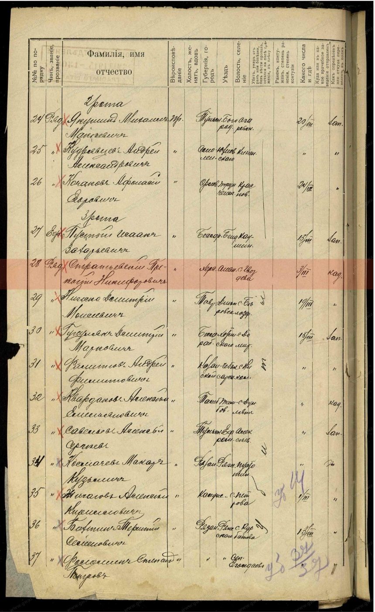
Список убитих 55-го піхотного Подільського полку, 1–31.03.1915 (РДВІА 16196-1-150), № 28: рядовий Прокопій Никифорович Стратієвський, с. Гвоздавка, убитий 3.03.1915.
8-ме коліно · версія
бл. 1790-х – після 1835
документверсія
Лазар Іванович Дадул
Як читати цю сторінку. Сам Лазар, його дружини й діти — документ, як і те, що Данило Лазарович — дід Анастасії. Не підтверджено записом лише одне: що Данило Лазарович — син саме цього Лазаря. Тому два верхні ряди дерева підписані зі знаком питання.
Найдавніший предок, якого видно в документах. У проіндексованих одеських метричних книгах є його два шлюби і четверо дітей: 18 січня 1814 року Лазар Дадул одружився з Євдокією (діти Фотина, 1818, і Гавриїл, 1824–1828), а 13 лютого 1827, овдовівши, узяв шлюб із Тетяною Матвіївною, на той час удовою Бондарченковою (це, найімовірніше, прізвище її першого чоловіка; дівоче прізвище невідоме); від неї народилися Терентій (26.04.1828) та Іов (6.05.1835). У записі про Іова батька названо повністю: «Лазяр Іоаннов Дадул», тобто Лазар Іванович, а його батько — Іван Дадул, дев'яте коліно: за ревізією 1795 року це Іван Афанасійович, нар. бл. 1755 (див. нижче); Іванів батько Афанасій — десяте.
Я прочитала сам аркуш 1835 року: це книга села Гвоздавки, яка тоді належала Балтському повіту (мікрофільм 15 парафій Ананьївщини, зображення 317 із 333). Отже, Дадули жили в Гвоздавці щонайменше з 1814 року, за два покоління до Анастасії.
версія Що Данило Лазарович, який у 1872-му хрестив дочку в тій самій церкві, — син саме цього Лазаря, доводить лише збіг рідкісного імені по батькові, села й часу: Данило мав народитися між 1828 і 1845 роками, а книги Гвоздавки за ці роки в базі ще не проіндексовані. Запис про його хрещення в мікрофільмах серії має бути; я його шукатиму.
Імовірна смерть Тетяни. У книзі смертей Гвоздавки 1885 року (ДАОО, ф. 37, оп. 14, спр. 63; FamilySearch, DGS 115149117, зобр. 203), січень: 8-го померла, 10 січня 1885 року (ст. ст.) похована «села Гвоздавки крестьянка вдова Татіана Симеонова Дадулова», 78 років, «от старости». За віком (нар. бл. 1807) вона цілком може бути Тетяною, що 1827 року вийшла за Лазаря. Але по батькові в цьому записі «Симеонова» (Семенівна), а 1835 року — «Матфеева»; писарі нерідко плутали по батькові старих людей, та це може бути й інша Тетяна Дадул. версія Якщо це вона, то Лазар помер раніше за неї, до 1885 року.
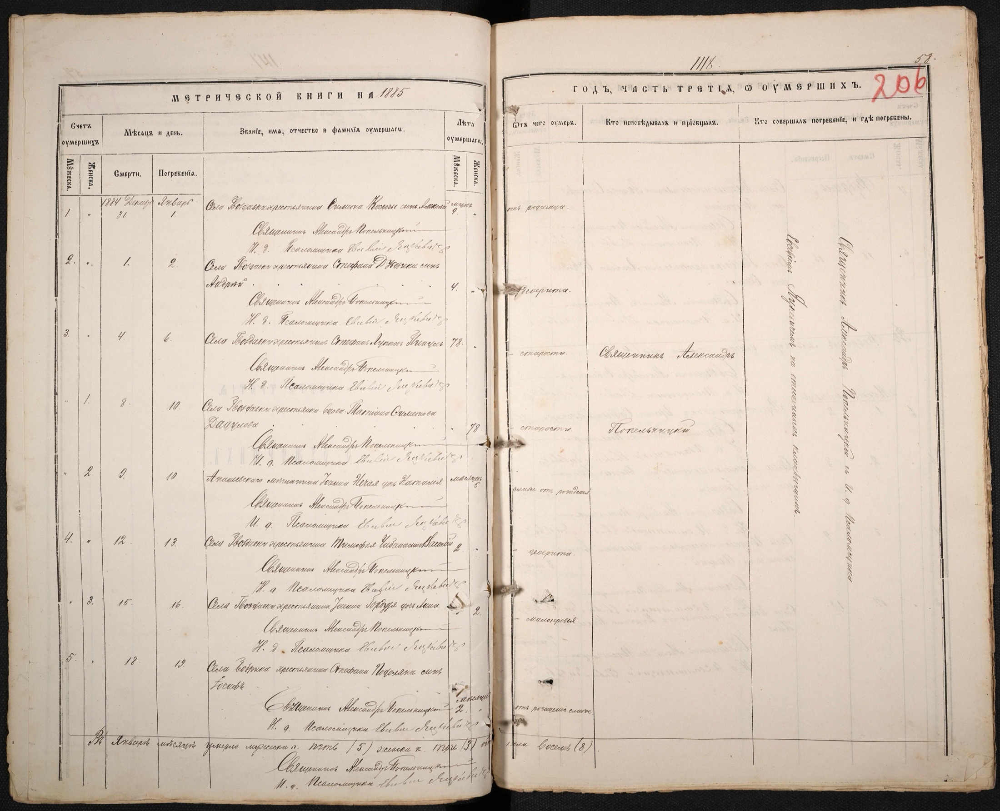
Метрична книга 1885 року, частина третя, січень: удова Татіана Симеонова Дадулова, 78, померла 8.01.1885 (ст. ст.). FamilySearch, DGS 115149117, зобр. 203.
Джерела: FamilySearch, «Ukraine, Odesa Church Books, 1780-1898»: Іов Дадул, 1835 (мікрофільм 005685463, зобр. 317); Терентій Дадул, 1828; записи про шлюби Лазаря 1814 і 1827 та дітей Фотину й Гавриїла.
Нове з індексу метрик 1780–1898. Перша дружина прапрапрапрадіда Лазаря — Євдокія — померла 13 лютого 1827 року, близько 28 років (скан); уже 25 лютого Лазар вінчався з Тетяною Бондарченковою. Від першого шлюбу, крім Фотини (1818) і Гавриїла (1824–1828), були ще Калістрат (нар. 27.09.1820, скан) і Єфросинія (1826–1827). 5 березня 1832 року помер Спиридон Симеонович Дадул (скан) — найімовірніше, той самий Спиридон, син Симона Дадула, що 1795 року мав 17 років; його син Андрій Спиридонович (1828–1873) — батько Даниїла 1873 року. Ірина Дадулка, що померла 1 березня 1797 року нібито 83-річною, записана в книзі села Панчевого, а не Гвоздавки, тож до нашого роду, найімовірніше, не належить (уточнено 2.10). версія
Найраніший Дадул — ревізія 1795 року. Ревізькі казки Тираспольського повіту Вознесенського намісництва 1795 року (ДАХеО, ф. 22, оп. 1, спр. 1; скан на Wikimedia Commons, с. 375 PDF, арк. 364) у селищі Гандрабури (парафія Михайлівської церкви, за ~20 км від Гвоздавки) називають двір № 45: «Симонъ Дадулъ», 50 років (нар. бл. 1745), дружина Фатина, 39, діти Спиридон, 17, Василиса, 8, Анна, 6; на полі позначено, що ці родини — вихідці з Молдавії. Симон, Спиридон — ті самі імена, що в найраніших записах Дадулів 1783–1811 років (Симеон — син Івана). Отже, Дадули прийшли на Ананьївщину з Молдавії в останній чверті XVIII століття, і Симон може бути братом або батьком Івана Дадула — батька Лазаря. версія
Казка Гвоздівки 1795 року прочитана повністю (2.10.2026). У тій самій справі (арк. 375–390, скан с. 386–401 у PDF) — ревізька казка «казеннаго селенія Гвоздовки» Тираспольського повіту: 78 дворів осілих поселян і ще кілька дворів «циган неосідлих»; разом близько 220 чоловіків і 210 жінок. Наприкінці казки записано причт: священник Петро Вакулович Матковський, 60 років (його сини Семен і Іоанн — майбутні гвоздавські священники), і дячок Костянтин Матковський. Отже, село існувало щонайменше за рік до «офіційної» дати заснування 1796.
Двір № 14 — Іван Дадул. «Иванъ Афанасьевъ сынъ Даду[лъ]», 40 років (нар. бл. 1755), жена його Марія Дем'янова дочь, 30; діти: син Семіон, 4, дочка Анисія, 2. Це єдині Дадули в Гвоздівці 1795 року. Ім'я й вік сина збігаються з метриками Гвоздавки: 2 березня 1800 року (14.03 н. ст.) помер «младенецъ Яковъ, сынъ поселянина Ивана Дадула», 2 роки (книга 1800 року, частина третя, № 3; скан), а 14 листопада 1811 (26.11 н. ст.) ієрей Іоанн Матковський поховав «казеннаго селенія Гвоздавки поселянина Іоана Дадула сына Симеона», 18 років (книга 1811 року, № 23; скан). Семен 1811 року — той самий чотирирічний Семіон з казки 1795-го. Лазар у казці не записаний, тож він народився вже після ревізії, близько 1796 року, і одружився 1814-го вісімнадцятирічним — це узгоджується з усім, що відомо. Тому батько Лазаря — Іван Афанасійович Дадул, дев'яте коліно, а його батько Афанасій Дадул (нар. бл. 1720–1730-х) — десяте. версія Довести зв'язок остаточно може лише метрика Лазаря (бл. 1796) або ревізія 1811/1816 років, яких онлайн немає.
Десяте й одинадцяте коліно. Найдавніша людина, чиє ім'я збереглося, — Афанасій Дадул, батько Івана Афанасійовича з казки 1795 року; він народився приблизно в 1720–1730-х роках і, судячи з позначки про молдавських вихідців у сусідніх казках, жив ще по той бік Дністра. У дереві він стоїть у верхньому ряду як десяте коліно. Його батька (одинадцяте коліно) жоден доступний документ не називає: метричні книги Гвоздавки починаються з 1790-х, ревізія 1795 року — перша для цих сіл, а молдавські джерела XVIII століття онлайн не оцифровані. Два ранні записи з індексу, які могли б дати старше покоління, виявилися з інших парафій: Ірина Дадулка (†1797, 83 роки) — жителька казенного селища Панчевого, а Федір Дадул (1779–1799) похований у слободі Бурунці; до гвоздавських Дадулів вони стосунку, найімовірніше, не мають. версія
Кого в Гвоздівці 1795 року не було. Серед 78 дворів немає Пачесних, Рублів, Короїв, Стратієвських, Бабенків, Спінатіїв — усі ці родини з'явилися в селі пізніше: Пачесні («Пачисні») з 1804-го, Дога й Рублі — до 1824-го, Корої — до 1831-го. Двір № 25, який раніше читали як «Корой», насправді «Давидъ Федоровъ сынъ Корба», 40 (прізвище Корба у Гвоздавці відоме й у 1872 році). Із пізніших гвоздавських прізвищ у казці є Епур (двір 56, Василь Олександрович), Кир'як, Кучук, Чобан, Мунтян. Імена перших поселенців переважно молдавські, у пізніших книгах їх записували по-російськи.
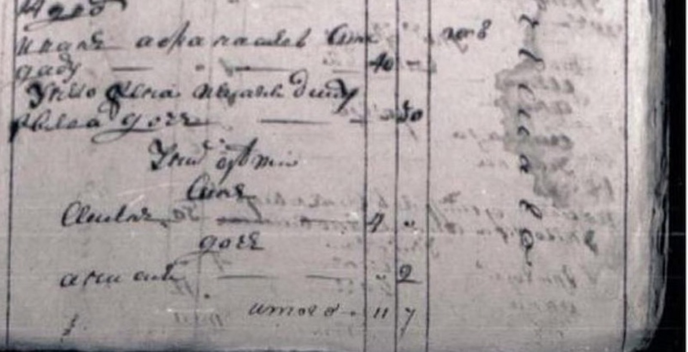
ДАХеО 22-1-1, 1795, арк. 377: двір № 14 — Іван Афанасьєв син Дадул, 40; жена Марія Дем'янова, 30; син Семіон, 4; дочка Анисія, 2.
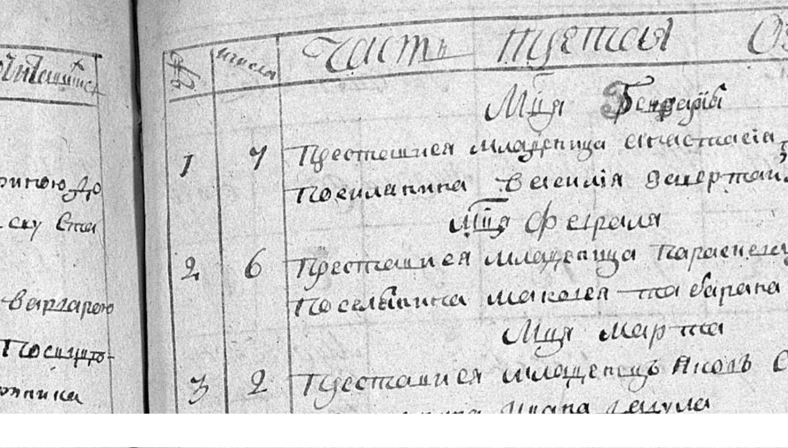
Метрична книга Гвоздавки 1800 року, частина третя, № 3: 2 березня помер «младенецъ Яковъ, сынъ поселянина Ивана Дадула», 2 роки. FamilySearch, збірка 1780–1898.
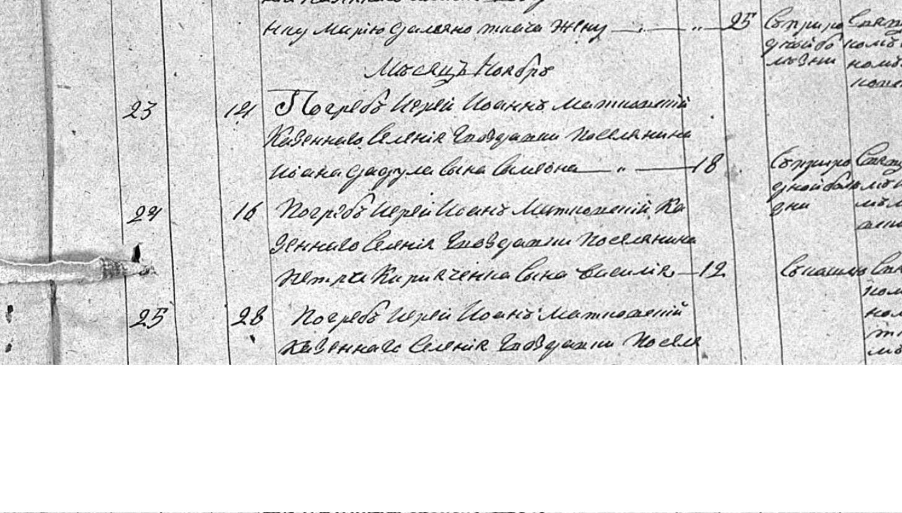
Метрична книга Гвоздавки 1811 року, листопад, № 23: похований «Іоана Дадула сынъ Симеонъ», 18 років; поруч № 24 — Василь, син Петра Кирикченка, 12.
ДАХеО 22-1-1, 1795, арк. 374 зв.–375: початок казки селища Гвоздівки.
Прапрапрадід
бл. 1840-х – ?
документ
Данило Лазарович Дадул і Олена Феодосіївна
У метричній книзі Гвоздавки Другої за 1872 рік є два записи про дітей гвоздавського селянина Данила Лазаровича Дадула та його законної дружини Олени Феодосіївни: 22 вересня 1872 року народилася дочка Фекла (хрещена 27 вересня, запис № 53), а 28 травня того ж року помер однорічний син Кирило. Книгу оцифровано на FamilySearch з фондів Держархіву Одеської області (зображення 63 зі 117).
Запис про хрещення Ісидора знайдено (Гвоздавка, 5 лютого 1882, батьки Даниїл Лазарович Дадул і Олена Феодосіївна), тож ланка Ісидор → Данило Лазарович — документ. Версією лишається тільки наступна ланка Данило Лазарович → Лазар Іванович (запис 1828/1835 років). Прізвище Дадул (молдавською Додул) поширене в молдавських селах Придністров'я, а Гвоздавку Другу заснували саме молдавські переселенці. версія
У воєнних базах є ще два Даниловичі Дадули, Іван (1919) та Яків (1917) з Чобручів; за віком вони не брати Ісидора, а радше внуки іншого Данила, тож до нашого не ведуть.
Зв'язок Ісидора з Данилом уже підтверджено записом про хрещення 1882 року (ф. 37, оп. 10, спр. 35). Для старшої ланки допоможуть справа 18123-п в Одесі й сповідні розписи середини XIX століття, де Данило був би записаний дитиною в родині Лазаря.
Джерело: FamilySearch, колекція «Ukraine, Odesa Church Books, 1780-1898», запис Фекла Дадул; мікрофільм «Бобрик Другий | Гвоздавка Друга | Ясеново Второе, 1872». Потрібен безкоштовний акаунт FamilySearch.
Бабуся
21.03.1941 – 31.12.2017
документ
Ольга Тимофіївна Спінатій, дівоче Корой
Народилася 21 березня 1941 року в Гвоздавці Другій, за три місяці до війни. Перші три роки її життя припали на румунську окупацію: село входило до губернаторства «Трансністрія», Голтського повіту. Батька вона майже не могла пам'ятати: він пішов на фронт, коли їй було три роки, і загинув, коли їй ще не виповнилося чотирьох.
Наймолодша з п'ятьох дітей Тимофія й Анастасії; її брати й сестра — Марія (1930), Михайло (1933), Андрій (1935), Микола (1938). Виросла з матір'ю, вийшла заміж за Івана Спінатія, народила доньку Надію. Прожила все життя в рідному селі й померла там 31 грудня 2017 року, у 76 років.
Джерело: свідоцтво про смерть (видане Любашівським відділом ДРАЦС, 03.01.2018).
Дід
22.09.1938 – 14.08.2005
зі слів родини
Іван Федотович Спінатій
Народився 22 вересня 1938 року, на вісім днів пізніше за другого діда, Олексія. Помер 14 серпня 2005 року, проживши 66 років. Чоловік Ольги Тимофіївни, батько Надії. Син Федота Спінатія; мати, за словами родини, — Калина Бабенко. Родом «з хуторів» під Ананьєвом. У сім'ї було десятеро дітей; родина пам'ятає, що дожили до пізніших років (чи вижили) четверо: Степан, Настуня, Міша та Іван. Сам Іван народився 1938 року — вже після Голодомору 1932–1933 років, тож він не міг бути серед дітей, які пережили саме голод; обставини й послідовність втрати інших дітей родини потребують уточнення.
Степана вдалося знайти в документах, див. Федот Спінатій. У метричній книзі шлюбів Гвоздавки за 1911 рік (запис № 10, 21 січня) є Нікантій Семенович Спінатій: він одружився першим шлюбом. Поручителями виступили Феодор Дмитрович Спінатій і Андрій Дмитрович Спінатій — ще два представники роду в Гвоздавці. А 15 травня 1902 року одружився Лука Феодорович Спінатій, 25 років, другим шлюбом, з Анною Тимофіївною Митрофанською, 20 (книга 1902, № 37, зобр. 396). Ще раніше, 25 вересня 1887 року, народився Григорій, син гвоздавського селянина Феодора Гавриловича Спінатія і Марфи Ларіонівни (книга 1887, № 82, зобр. 32) — імовірно, це батько Луки та Іоанна Феодоровичів. 6 жовтня 1906 року — шлюб Іоанна Феодоровича Спінатія, 23, з Акилиною Устинівною(?) Лук'яненко, 19 (книга 1906, № 43, зобр. 358). Лука й Іоанн Феодоровичі — імовірно брати; а по батькові нареченої «Устинівна» збігається з по батькові Агрипини Устинівни, матері діда Івана, — можливо, родички. версія
Ще один Спінатій з Гвоздавки-2, Сергій Іванович (1921), воював у тому самому 233-му гвардійському артполку, що й прадід Андрій Стратієвський: обидва нагороджені одним наказом № 9/н від 15.10.1944, Сергій — медаллю «За відвагу». У 1986-му він отримав орден Вітчизняної війни I ступеня. Чи родич він Івану — невідомо.
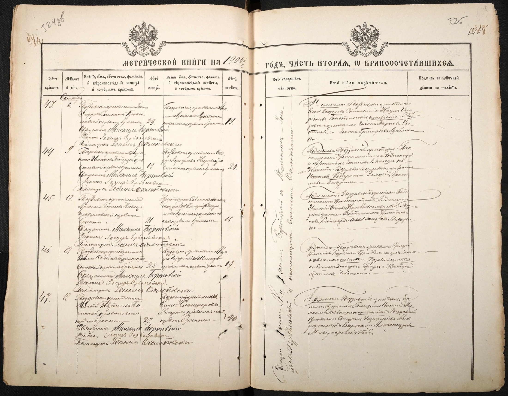
Метрична книга 1906 року (ф. 904, оп. 1, спр. 31), шлюби Гвоздавки; № 43: Іоанн Феодорович Спінатій, 23, і Акилина Устинівна(?) Лук'яненко, 19. FamilySearch, DGS 124357203, зобр. 358.
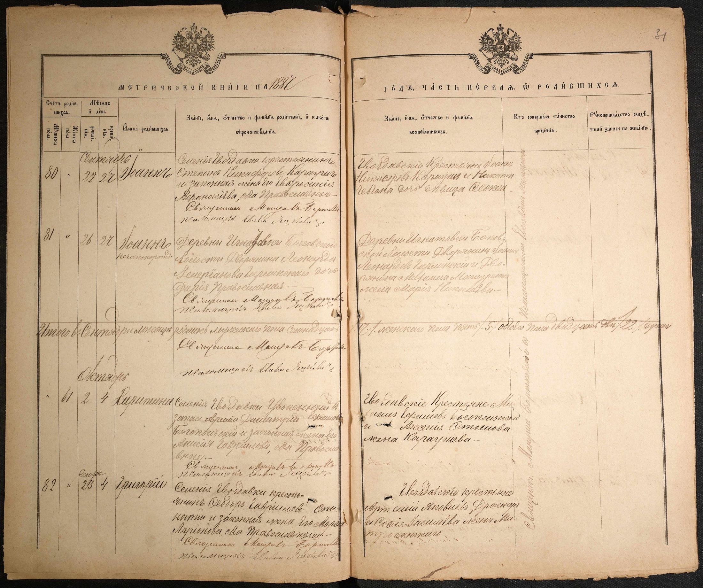
Метрична книга Гвоздавки 1887 року, № 82: Григорій, син Феодора Гавриловича Спінатія і Марфи Ларіонівни. FamilySearch, DGS 115148772, зобр. 32.
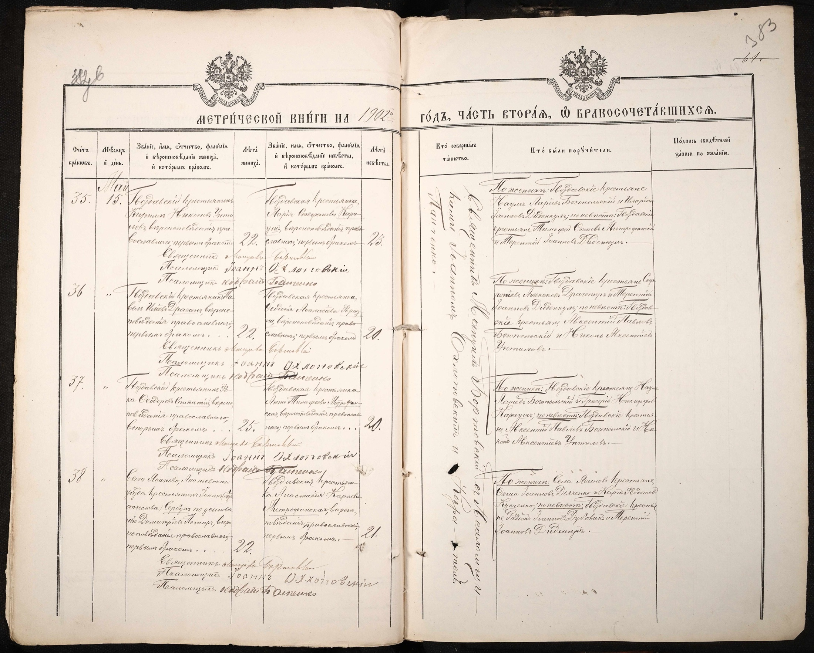
Метрична книга Гвоздавки 1902 року, частина друга; № 37 (15.05.1902 ст. ст.): Лука Феодорович Спінатій, 25, другим шлюбом, і Анна Тимофіївна Митрофанська, 20. FamilySearch, DGS 127453545, зобр. 396.
Прізвище Спінатій у світі майже унікальне. Воно зустрічається лише на Любашівщині та поруч, у Котовському районі (с. Липецьке).
Спінатії з Гвоздавки у військових документах
Хто
Рік
Доля
Спінатій Степан Федотович
1924
брат діда Івана; зник безвісти в липні 1944 (див. нижче)
Спінатій Сергій Іванович
1921
233 гв. артполк, медаль «За відвагу» 15.10.1944, вижив
Спінатій Андрій Іванович
1919
призваний у січні 1940, останній лист у липні 1941, зник безвісти; дружина Ксенія Михайлівна, Гвоздавка 2. Можливо, брат Сергія версія
Прадід
роки невідомі
документзі слів родини
Федот Спінатій
Батько діда Івана, відомий з його по батькові. У воєнних базах його поки не знайдено; це не доводить, що він не служив. Жив на хуторах під Ананьєвом, потім, судячи з документів сина, у Гвоздавці Другій. Діти народжувалися щонайменше з 1924 (Степан) по 1938 рік (Іван); з десятьох дожили до пізніших років (за пам'яттю родини) четверо — точні обставини й час втрати інших дітей не встановлені; наймолодший із чотирьох, Іван, народився 1938 року, вже після Голодомору.
Один із них, Степан Федотович Спінатій, 1924 року народження, є в списку Любашівського райвійськкомату від 15 вересня 1951 року. Його призвали польовим військкоматом у березні 1944-го, одразу після звільнення, коли йому було 19 або 20 років. Стрілець, безпартійний, 2-й Український фронт, 7-ма гвардійська армія. Зник безвісти в липні 1944 року. Це той самий Степан, якого родина пам'ятає серед уцілілих після Голодомору: він пережив голод; у липні 1944 року його облікували як зниклого безвісти, а дата смерті не встановлена.
Спинатий Степан Федотович, рядовой, стрелок, б/п, 1924, с. Гвоздавка 2 Любашевского р-на… призван полевым военкоматом 03.1944… пропал без вести 07.1944… мать Спинатий Агрипина Устиновна, Одесской обл. Любашевского р-на с. Гвоздавка 2.
Список Любашівського РВК, 15.09.1951, рядок 5. ЦАМО, ф. 58, оп. 977524, спр. 260
Можлива дочка Федота — Марія Спінатій, 1926. В архіві Арользен (Arolsen Archives, DE ITS 2.1.2.1 NI 002 11 RUS ZM, DocID 70573847) є повоєнний список іноземців британської зони окупації (округ Ольденбург, Нижня Саксонія): № 2900 «Spinatij Maria, 14.12.1926, Russe», працювала на машинобудівному заводі August Brötje у Растеде і вибула 23.04.1945. Місця народження в списку немає, але прізвище рідкісне, а 1926 рік припадає саме на роки, коли народжувалися діти Федота (Степан — 1924, Іван — 1938). Якщо це вона, то її, 15–17-річну, вивезли на примусові роботи до Німеччини в 1942–1943 роках, і вона дожила до звільнення. версія
Звідки могли прийти Спінатії. В індексі метричних книг 1780–1898 (FamilySearch) майже всі записи про Спінатіїв — з одного місця: станиці (згодом селища) Щербані Бузького козацького війська, нині село Щербані Вознесенського району Миколаївської області. 13 листопада 1814 року там народилися близнята Ірина й Агафія, дочки «станиці Щербанської козака Василія Спінатія і жони його Тетяни» (скан); далі в Щербанях — Софроній Іванович Спінатій і Меланія (діти 1822–1832), Андрій Васильович (1806–1871), Федір Васильович, відставний солдат Влас Софронович (1871–1872), Леонтій Петрович (дочка Олена, 20.05.1874, скан). Найраніші — Павло Спінатій (†1795) і Лук'ян (†1788). Прізвище рідкісне, тому гвоздавські Спінатії XX століття, найімовірніше, — гілка цього роду, що перебралася з-під Вознесенська на Ананьївщину в другій половині XIX століття (родина пам'ятає, що Федот жив «на хуторах під Ананьєвом»). версія
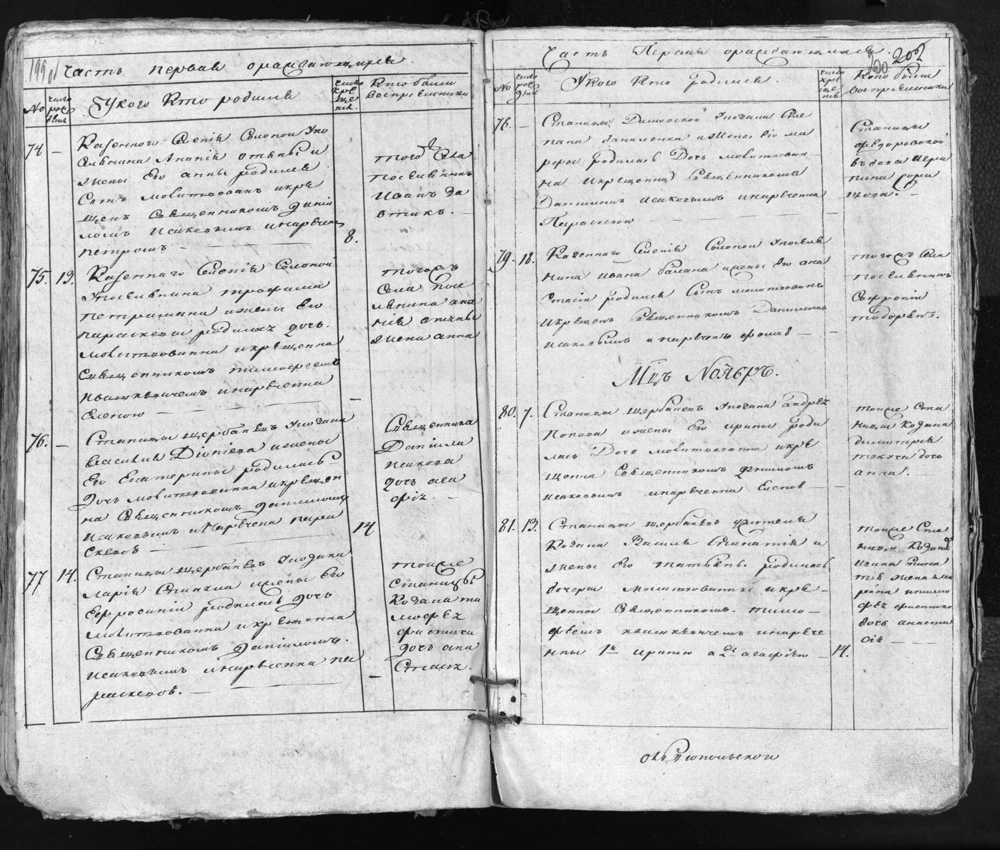
1814, листопад, № 81: «станиці Щербанської козака Василія Спінатія і жони його Тетяни» народилися дочки Ірина й Агафія (13.11).
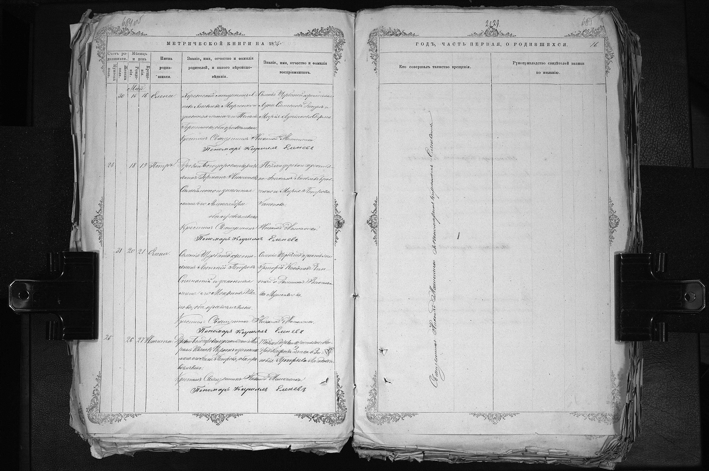
1874, травень, жін. № 31: «селеніє Щербані» — Олена, дочка Леонтія Петрова Спінатія і Мокрини Іванової (20.05).
У графі «родичі» матір'ю Степана записано Агрипину (Горпину) Устинівну Спінатій; почерк нерозбірливий, ім'я прочитано двома незалежними читачами однаково. Родина знала матір Івана як Калину, але каже, що це могло бути домашнє ім'я. Отже, Агрипина Устинівна і Калина — найімовірніше, одна людина, а Степан — рідний брат Івана.
Список тих, кого можна вважати зниклими безвісти, складений райвійськкоматом у 1951 році. Степан у рядку 5.
Пошук у метричних книгах 1900–1909 років. Переглянуто всі записи про народження Гвоздавки за 1900–1909 роки: Федота Спінатія й Агрипини Устинівни серед них немає. Отже, вони, найімовірніше, народилися до 1900 року. Книги 1890-х, які є на FamilySearch (ф. 911, оп. 1, спр. 1–5: 1893, 1894, 1896, 1898, 1899), належать іншим парафіям — Любашівці, Точиловому, Ясеновому, Новопетрівці, Троїцькому; книг Гвоздавки за ці роки онлайн немає (1895 і 1897 років немає зовсім). Попутно знайдено:
1906: Юліанія, дочка Марка Антоновича Спінатія (DGS 124357203, зобр. 311).
1907, жін. № 84: Агрипина, дочка Василя Тимофійовича Митрофанського й Анни Кондратівни; хрещена — Анна, дружина Тимофія Спінатія (DGS 127453541, зобр. 273).
1909: Федот, син Симеона Федоровича Лук'яненка і Дарії Іларіонівни (DGS 127453543, зобр. 110) — Лук'яненки жили в Гвоздавці; Акилина Устинівна Лук'яненко 1906 року вийшла за Івана Федоровича Спінатія, тож Агрипина Устинівна може бути її сестрою. версія
1909: Агрипина, дочка Іоанна Луковича Рублі й Марфи Кирилівни, народилася 21 червня 1909 (ст. ст.) (DGS 127453543, зобр. 111) — племінниця прапрабабусі Любові.
Де шукати далі: метричні книги Гвоздавки 1890-х, шлюб Федота й Агрипини (бл. 1918–1923, РАЦС) і сповідні розписи — у Державному архіві Одеської області.
Калина Бабенко — домашнє ім'я; можливо, Агрипина Устинівна
Мати діда Івана Спінатія, за словами родини. «Калина» — так її звали вдома; офіційне ім'я родина не пам'ятає. У списку 1951 року матір'ю Степана Федотовича записано Агрипину Устинівну Спінатій з Гвоздавки Другої. Документ каже лише це: хто мати Степана. Що Агрипина і Калина — одна людина, що вона з дому Бабенко і що її батько — Устин Бабенко, — усе це припущення, які має підтвердити запис про шлюб Федота. версія
У Гвоздавці Другій жила також родина Бабенків, братів Опанасовичів. Родина впізнає в них своїх; якщо Калина — Устинівна, це радше її двоюрідні брати:
Степан Опанасович, 1903, сержант 1292-го полку 113-ї дивізії, зник безвісти 23.04.1943 під Чугуєвом на Харківщині
Аким Опанасович, 1908, призваний 26.04.1944, 13-та гвардійська дивізія; загинув 22.02.1945 у Німеччині, за три дні до Тимофія Короя. Дружина Ірина Артемівна
Андрій Опанасович, 1921, був у полоні до 1944-го; помер від ран 1.10.1944, похований у Кишиневі
Іван Опанасович (у документі «Бобенко»), 1925, 107-ма гвардійська дивізія; загинув 20.04.1945 в Австрії
Хто саме вони Калині, рідні чи двоюрідні брати, покаже її по батькові в записі про шлюб із Федотом або в метричній книзі Гвоздавки.
Аким і Тимофій Корой пішли на фронт з одного села з різницею в шість днів і загинули в Сілезії з різницею в три дні: 22 і 25 лютого 1945 року.
Мама
1961
зі слів родини
Надія Іванівна Пачесна, дівоче Спінатій
Народилася в 1961 році в Гвоздавці Другій. У 1983 році там же вийшла заміж за Анатолія Пачесного.
Татова лінія
Пачесні, Стратієвські, Попеску
Прадід
1915 – після 1986
документзі слів родини
Андрій Григорович Стратієвський
Народився в 1915 році. Воював двічі, і обидва рази вижив.
Ще до великої війни, у 1938 році, 23-річним червоноармійцем брав участь у боях біля озера Хасан на Далекому Сході, проти японської армії. Його доньці Марії тоді був рік.
З першого дня німецького вторгнення, з 28 червня 1941 року, воював на Південному фронті. Двічі поранений під Севастополем: у лютому й 22 березня 1942 року. Картотека поранень уточнює: служив у 31-му стрілецькому полку 25-ї Чапаєвської дивізії, яка тримала оборону Севастополя, і 11 травня 1942 року був евакуйований з одного госпіталю в інший, ЕГ 2129, тобто вивезений з обложеного міста морем незадовго до його падіння. Що було з ним у 1942–1944 роках, документи не кажуть. Найімовірніше, після поранення він опинився вдома, на окупованій території.
28 березня 1944 року, одразу після звільнення, Любашівський райвійськкомат призвав його знову. Він став телефоністом 233-го гвардійського артилерійського полку 95-ї гвардійської стрілецької Полтавської дивізії, пройшов 2-й і 1-й Українські фронти. У жовтні 1944-го отримав медаль «За бойові заслуги», а за бій 20 квітня 1945 року на річці Шпрее, за 60 км від Берліна, — орден Слави III ступеня.
…по сильным артиллерийским налетом противника была повреждена линия связи, несмотря на непрекращающийся обстрел ежеминутно рискуя жизнью, пополз по линии и в короткий срок устранил шесть порывов линии связи, обеспечив этим самым бесперебойное управление огнем батарей.
Нагородний лист, 18.05.1945
1915
народився; українець, безпартійний
06–09.1938
бої біля озера Хасан
28.06.1941 – 22.03.1942
Південний фронт
02.1942, 22.03.1942
поранений під Севастополем; 31 сп 25-ї Чапаєвської дивізії
11.05.1942
евакуйований у госпіталь ЕГ 2129
28.03.1944
знову призваний Любашівським РВК
15.10.1944
медаль «За бойові заслуги», наказ 233 гв. ап № 9/н
20.04.1945
подвиг на Шпрее: під обстрілом шість разів зрощує лінію зв'язку
23.05.1945
орден Слави III ступеня, наказ № 42/н; медаль «За перемогу над Німеччиною»
01.08.1986
ювілейний орден Вітчизняної війни I ступеня (наказ № 49): отже, у 71 рік він був живий
Нагородний лист до ордена Слави III ступеня. ЦАМО, ф. 33, оп. 690306.
Джерела: Подвиг народа 42169165; картотека нагороджень, запис 1007635120, місце народження «с. Гвоздавка 2». Родина підтверджує: це він, орден Слави й Севастополь у родині пам'ятають.
Прабабуся
роки невідомі
зі слів родини
Мотря Стратієвська, дівоче Попеску
Дружина Андрія Григоровича, мати Марії, бабуся тата Анатолія. Прізвище Попеску (Popescu) — одне з найпоширеніших румунських і молдавських. Разом із Короями й Дадулами це ще одна молдавська гілка роду.
Прапрадід
бл. 1880-х
документ
Григорій Стратієвський
Батько Андрія, відомий з по батькові в нагородних документах. Стратієвські жили і в Гвоздавці Другій, і в Ясеновому. Найраніший поки знайдений запис — 29 серпня 1883 року: народився Іван, син солдата Харитона Гавриловича Стратієвського і Агафії Іванівни (книга Гвоздавки 1883, зобр. 26, № 82); зв'язок з Григорієм не встановлено. Ще раніше, у книзі 1881 року: 2 січня народилася Анастасія, дочка Павла Кириловича Стратієвського і Євдокії Зиновіївни (зобр. 4, № 5) — а 1 листопада 1906 року одружився Іоанн Павлович Стратієвський, 23, з Дарією Гавриїлівною(?) Сольнарь(?), імовірно син цього Павла (книга 1906, № 63, зобр. 362); 19 травня — Димитрій, син Никифора Борисовича Стратієвського (унтер-офіцер) і Ксенії Луківни — у 1884 році він записаний як Никифор Кирилович, батько Васси, (зобр. 16, № 40). Прапрабабуся Васса Никифорівна (дружина Ісидора Дадула) теж була Стратієвською, отже її батько — Никифор Стратієвський (це випливає з її по батькові й прізвища в шлюбному записі 1904 року). Наприклад, Стратієвський Петро Іванович, 1901 р.н., з Ясенового; Андрій Павлович, 1921 р.н., з Гвоздавки Другої, помер від ран у 1941.
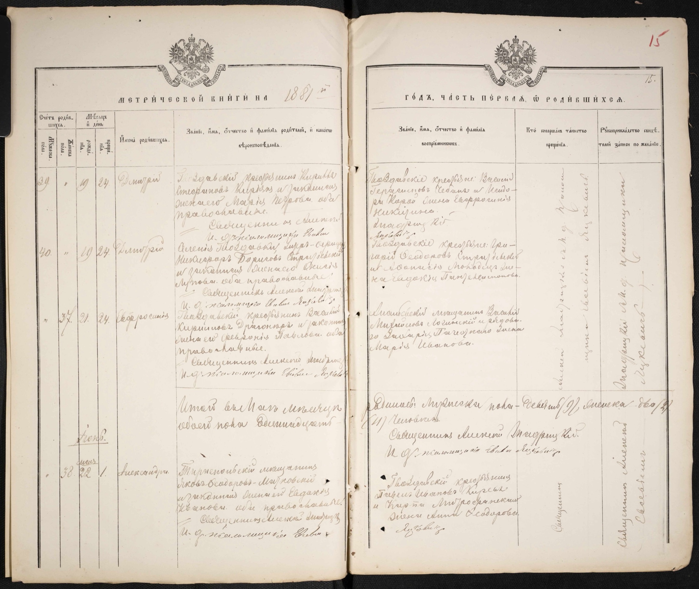
Метрична книга Гвоздавки 1881 року, № 40 (19.05.1881 ст. ст.): Димитрій, син унтер-офіцера Никифора Стратієвського (тут «Борисовича») і Ксенії Луківни — імовірно брат Васси (по батькові батька в записі інше). FamilySearch, DGS 113550504, зобр. 16.
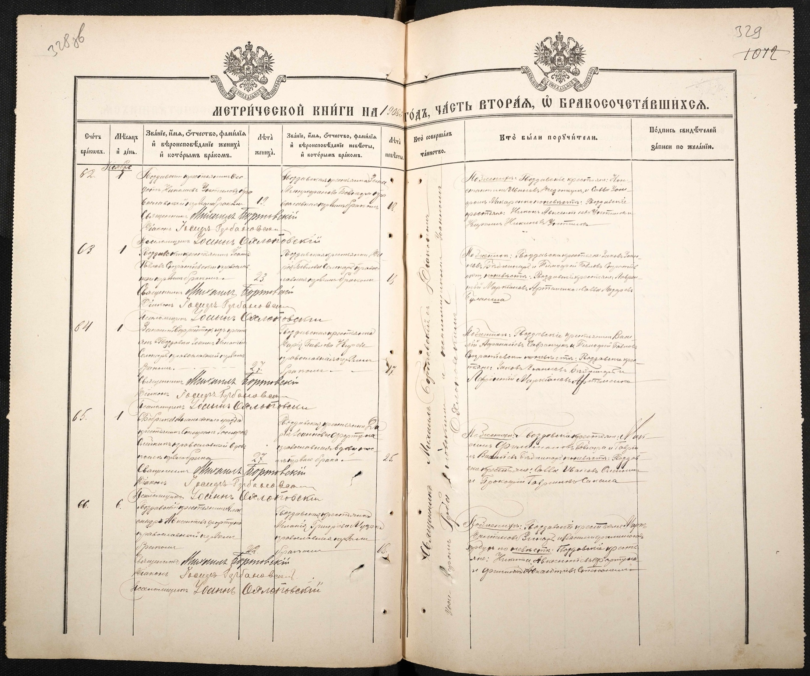
Метрична книга 1906 року, шлюби Гвоздавки; № 63 (1.11.1906 ст. ст.): Іоанн Павлович Стратієвський, 23, і Дарія Гавриїлівна(?) Сольнарь(?). FamilySearch, DGS 124357203, зобр. 362.
У метричній книзі Гвоздавки за 1911 рік (частина третя, смерті, зобр. 527, запис № 25) є запис про смерть: 20 березня 1911 року помер (похований 21-го) від скарлатини «Гвоздавського крестьянина Назарія Григорієва Стратієвського син Григорій», 2 роки. Нижче в тій самій книзі — смерть 13-річного Івана, теж сина Назарія Григоровича (29 березня 1911, похований 30-го). Про приймацтво чи смерть матері в записах нічого немає. За рік до цього, у метричній книзі за 1912 рік, є Назарій Григорович Стратієвський з дружиною Анною Данилівною: 23 березня 1912 року (5 квітня за новим стилем) в них народився, а 27 березня (9 квітня) хрещений син Іларіон (зобр. 268, запис № 44). За по батькові Назарій може бути братом прадіда Андрія Григоровича, але це лише збіг по батькові й села; спорідненість не доведена. версія Там само записано Никона Васильовича Стратієвського й Наталію Луківну: 18 лютого 1912 року в них народилася дочка Агнія.
У книзі 1911 року є ще одна Стратієвська: Наталія Стратієвська, 23 роки, 2 лютого вийшла заміж у Гвоздавці, перший шлюб (запис № 22). По батькові при повторному читанні виглядає як «Никифорівна», але це попереднє прочитання, яке потребує ще одного незалежного підтвердження; раніше зазначене ім'я «Михайла» й батько «Мажар» цим повторним переглядом не підтверджуються, і від них слід відмовитись. Поручителем на тому весіллі виступив Яків Сергійович Корой — ще одне свідчення, що Корої й Стратієвські в селі спілкувалися. версія
Діти Дометія Трифоновича Стратієвського (1900–1905). Переглянуто всі народження Гвоздавки 1900–1905 років. Знайдено одного сина: Софроній, нар. 21 березня 1903 (8.03 ст. ст.), хрещ. 16.03; батьки — «гвоздавський селянин Дементій Трифонович Стратієвський і законна дружина його Ксенія Афанасіївна»; хрещений — Арсеній Ісидорович Корой (DGS 127453547, зобр. 183). Дементій — той самий Дометій Трифонович, що помер 28 червня 1905 року у 33 роки (імена Дометій/Дементій у записах чергуються). Отже, Григорій Дементійович Стратієвський, поранений 1915 року, — імовірно, його старший син, народжений у 1890-х (книг Гвоздавки за ці роки онлайн немає). Якщо Григорій Дементійович — батько прадіда Андрія, то Андрій — правнук Трифона Стратієвського. версія
Інші Стратієвські в цих книгах: 1901 — Кирило, син Павла Стратієвського й Катерини Данилівни; Петро, син Василя Стратієвського й Анастасії; 1902 — Агрипина, дочка Назарія Григоровича й Анни Данилівни; Ольга, дочка Євфимія Васильовича (хрещений — Никифор Данилович Попескул).
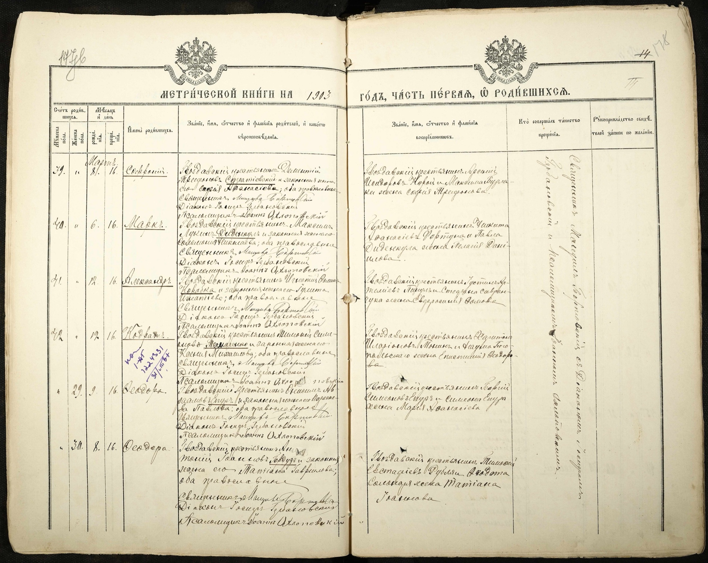
1903, березень, чол. № 39: Софроній, нар. 8.03, хрещ. 16.03 (ст. ст.); батьки Дементій Трифонов Стратієвський і Ксенія Афанасієва. DGS 127453547, зобр. 183.
Бабуся
05.05.1937 – 14.02.2017
зі слів родини
Марія Андріївна Пачесна, дівоче Стратієвська
Народилася 5 травня 1937 року. Померла 14 лютого 2017 року, проживши 79 років. Коли їй був рік, батько воював на Хасані, а в чотири роки знову пішов на фронт. Дитинство пройшло під окупацією. Вийшла заміж за Олексія Пачесного; їхні діти — Анатолій і Надія, заміжня Перхун. Мала сестру Галину (за словами родини).
Дід
14.09.1938 – 2017
зі слів родини
Олексій Терентійович Пачесний
Народився 14 вересня 1938 року. Помер у 2017 році, того ж року, що й Марія Андріївна (точна дата поки невідома). Чоловік Марії Андріївни, батько Анатолія й Надії. Родом із Гвоздавки Другої, як і батько. Син Терентія Івановича Пачесного та Віри Григорівни. Коли йому було три, батько потрапив в оточення й повернувся, а коли шість — його забрали на фронт удруге.
Прізвище Пачесний дуже рідкісне, і майже всі його носії у воєнних документах — з Гвоздавки:
Хто
Рік
Що відомо
Пачесний Яків Федотович
1906
Гвоздавка 2; дружина Ксенія Федорівна; був у полоні, звільнений; призваний Кривоозерським РВК у 95-ту гв. дивізію, ту саму, що й Андрій Стратієвський; зник безвісти у травні 1944 під Мельцем у Польщі
Пачесний Петро Іванович
1910
Гвоздавка 2; 118-та дивізія; потрапив у полон 13.08.1944 під Стопницею в Польщі (у картці полоненого помилково «Сталінград»); табір Слобозія
Пачесний Петро Лук'янович
1917
Гвоздавка; призваний на Алтаї у 1941, зник безвісти в грудні 1941
версія Петро Іванович (1910) за по батькові й віком може бути рідним братом Терентія Івановича, тобто дідовим дядьком. Батьки Терентія одружилися в січні 1909 року, тож син 1910-го міг бути їхнім первістком; запис про його народження в книзі 1910 року ще треба знайти.
Інші Пачесні в метричних книгах Гвоздавки.
1 листопада 1910 — шлюб Прокопія Васильовича Пачесного (записаний «Пачисный»), 20 років, і Агафії Василівни Диденкул, 23 (книга 1910, № 37).
5 червня 1912 — народився Омелян, син Стефана Васильовича Пачесного й Анни Михайлівни (книга 1912, № 79). Прокопій і Стефан Васильовичі, мабуть, брати.
17 березня 1912 — народився Лука, син Івана Гавриловича Пачесного і Євфросинії (книга 1912, № 45).
24 січня 1900 — шлюб Леонтія Даміановича Пачесного, 22, і Любові (без по батькові) Диденкулової, 22 (книга 1900, № 6, зобр. 204).
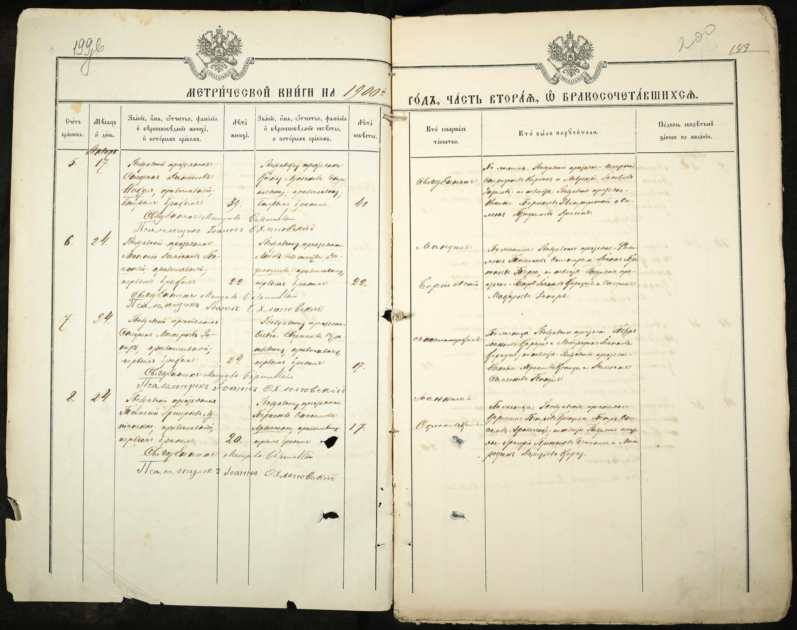
Метрична книга Гвоздавки 1900 року, частина друга; № 6: Леонтій Даміанович Пачесний, 22, і Любов Диденкулова, 22. FamilySearch, DGS 127453533, зобр. 204.
4 лютого 1900 — шлюб Стефана Васильовича Пачесного, 21, і Анни Михайлівни Бур'ян, 17 (книга 1900, № 15, зобр. 207) — це ті самі батьки Омеляна (1912).
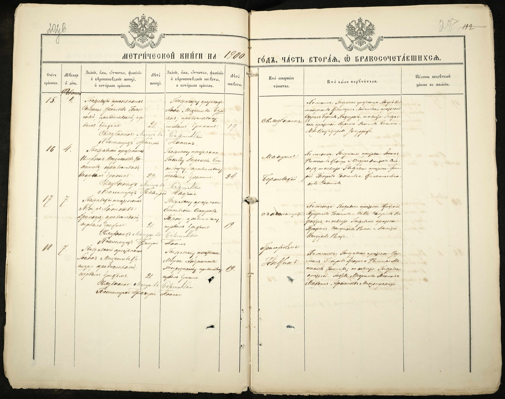
Метрична книга Гвоздавки 1900 року, частина друга; № 15 (лютий 1900): Стефан Васильович Пачесний, 21, і Анна Михайлівна Бур'ян, 17. FamilySearch, DGS 127453533, зобр. 207.
27 січня 1903 — Анастасія Іванівна Пачесна, 17, вийшла за Олексія Степановича Ястреба з Любашівки (книга 1903, № 14, зобр. 227).
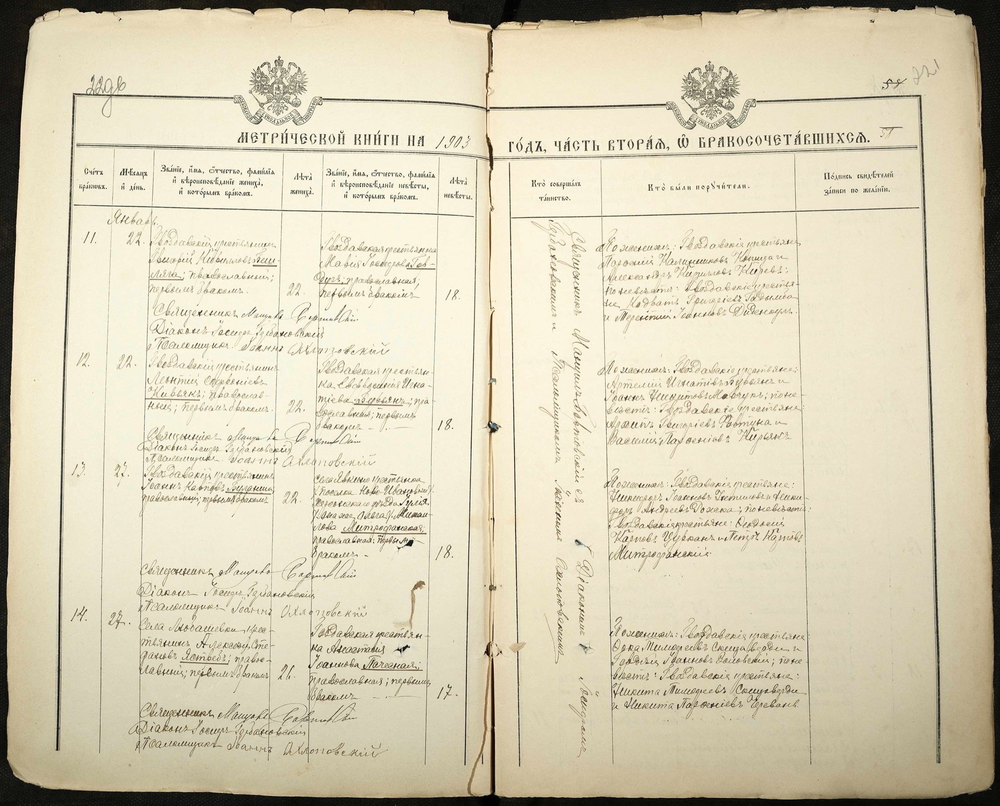
Метрична книга Гвоздавки 1903 року, частина друга; № 14: Анастасія Іванівна Пачесна, 17, і Олексій Степанович Ястреб з Любашівки. FamilySearch, DGS 127453547, зобр. 227.
12 травня 1903 — Параскева Даміанівна Пачесна, 22, вийшла за Филимона Дорофійовича Матвієнка, 40, третім шлюбом (книга 1903, № 25, зобр. 230) — імовірно, сестра Леонтія Даміановича.
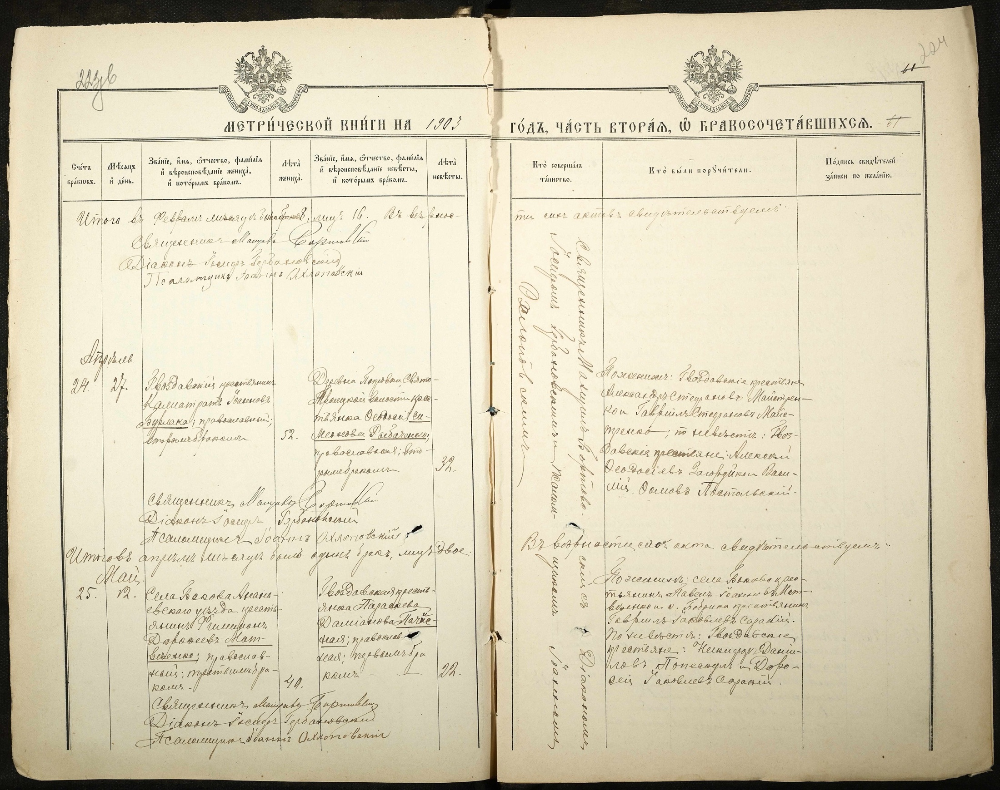
Метрична книга Гвоздавки 1903 року, частина друга; № 25 (12.05.1903 ст. ст.): Параскева Даміанівна Пачесна, 22, і Филимон Дорофійович Матвієнко, 40, третім шлюбом. FamilySearch, DGS 127453547, зобр. 230.
28 жовтня 1881 — народилася Параскева, дочка гвоздавського селянина Діонісія(?) Захаровича Пасечного і Гликерії Феодорівни (книга 1881, № 74, зобр. 30). «Пасечний» — можлива рання форма прізвища Пачесний, але не доведено.
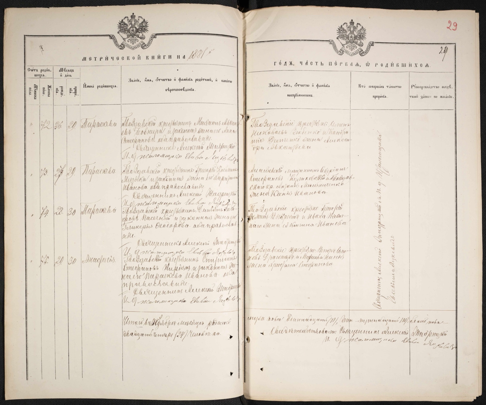
Метрична книга Гвоздавки 1881 року, № 74: дочка Діонісія(?) Захаровича Пасечного і Гликерії Феодорівни. FamilySearch, DGS 113550504, зобр. 30.
18 жовтня 1906 — шлюб Олексія Гавриловича Пачесного, 23, і Олени Никифорівни Макаренко, 20 (книга 1906, № 47, зобр. 358) — імовірно, брат Івана Гавриловича (батька Луки, 1912).
31 травня 1884 — народився Макарій, син гвоздавського селянина Матвія Андрійовича Пачесного і Марії Тимофіївни (книга 1884, чоловічий № 44, зобр. 226). Матвій Пачесний — так звали і батька прапрадіда Івана Матвійовича (≈1887). Інших Матвіїв Пачесних у книгах поки не трапилося, тож, імовірно, це той самий прапрапрадід Матвій, а Макарій — старший брат Івана. Тоді прапрапрапрадід — Андрій Пачесний; можливо, той самий Андрій Архипович, що помер 1883 року в 64 роки. версіяЗнайдено метрику прапрадіда Івана Матвійовича. Книга Гвоздавки 1888 року (ДАОО, ф. 37, оп. 14, спр. 130; FamilySearch, DGS 115148778, зобр. 332), січень, запис № 13: Іоанн народився 27 січня, хрещений 31 січня 1888 року (ст. ст.; 8 і 12 лютого за новим). Батьки: «гвоздавський державний селянин Матвій Андреєв син Пачесний і законна його жена Марія Тимофеєва, обоє православні». Хрещені: гвоздавські селяни Феодот Трохимович Степаненко і Дарія Афанасіївна, дружина Артемія Митрофанського. Тепер документом підтверджено: батько прапрадіда Івана — Матвій Андрійович Пачесний, мати — Марія Тимофіївна, а Макарій (1884) — його рідний старший брат. На весіллі 19.01.1909 Іванові бракувало восьми днів до 21 року — вік записано точно.
Старші сестри прапрабабусі Любові Рублі. Книга Гвоздавки 1870 року, жін. № 37: 16 вересня (28.09 н. ст.) народилася, 20-го хрещена Євфимія; батьки — «гвоздавський селянин Лука Кондратов Рубля і законна жена його Параскева Авксентієва, обоє православні»; хрещені Софроній Петрович Унтілов і Марія Іванівна, дружина Михайла Рублі (скан). Книга 1874 року, жін. № 32: 1 червня (13.06) народилася, 9-го хрещена Акилина, батьки ті самі; хрещені Григорій Гаврилович Митрофанський і Параскева Іванівна, дружина Михайла Рублі (скан). Отже, Лука і Параскева були одружені вже 1870 року, а Любов (1882) — щонайменше третя дитина. Того ж 1874 року 3 січня народився Гордій, син «Михаила Кондратова Рубли» і Марії Іванівни (скан) — тепер документом підтверджено, що Михайло — рідний брат Луки, син того самого Кондрата.
Брат Сергія — Петро Панкратійович Корой. 7 (19) червня 1873 року народилася, 10-го хрещена Акилина, дочка «гвоздавскаго крестьянина Петра Панкратіева Короя и законной жены его Ксеніи Георгіевой» (книга 1873, жін. № 25; скан). Отже, у Панкратія Дмитровича було щонайменше два сини — Сергій (1836) і Петро. Батько Панкратія — Дмитро Корой (дев'яте коліно, нар. бл. 1780-х); його другий син Сидір Дмитрович хрестив дочку Матрону 1831 року. У дереві Дмитро й Петро позначені як версії.
Шлюб Якова Сергійовича Короя, 1881. Книга Гвоздавки 1881 року (ДАОО, ф. 37, оп. 10, спр. 27; DGS 113550504, зобр. 35), частина друга, № 2: 18 січня 1881 року (30.01 н. ст.) обвінчалися «Гвоздавскій крестьянинъ Яковъ Сергіевъ Корой, православный, первымъ бракомъ», 20 років, і «Гвоздавская крестьянская дочь, дѣвица Анастасія Афанасьева», 24 роки (прізвище прочитано як Кара/Корса — непевно). Поручителі: за нареченого — гвоздавські селяни Никита Трохимович Гордуз і Михайло Христианович(?) Соломар; за наречену — Іван Олексійович та Микола Федорович Бежинарі. Отже, Яків народився близько 1861 року і він на 15–20 років старший за прапрадіда Йосипа (одружився 1902-го). Його дочка Євдокія (1883) і син Пантелеймон (†1906, 17 років) — із цього шлюбу. Що Яків — син того самого Сергія Панкратійовича, записи не кажуть, але інших Сергіїв Короїв у Гвоздавці 1860-х не видно. версія
Сергій Панкратійович Корой — поручитель на двох весіллях 1882 року. 18 січня 1882 року (№ 16; DGS 113550502, зобр. 251) вінчався «Гвоздавскій крестьянинъ Арсеній Исидоровъ Корой», 21, з Іриною Лазарівною, 17; поручителями за нареченого записані Сергій Панкратьєв Корой та Іван Петрович Диденкул. 10 травня того ж року (№ 25; зобр. 253) вінчався «Гвоздавскій крестьянинъ Терентій Петровъ Корой», 21, з Єлисаветою Терентіївною Кир'як(?), 17; за нареченого поручилися знову Сергій Панкратьєв Корой і Матвій Захарович Бадрак(?), за наречену — Ісидор(?) Ісидорович Корой і Тихон Маркович Макаренко. Поручителями зазвичай ставали найближчі родичі, тож ці записи підтримують версію про одну родину: Арсеній — син Ісидора Дмитровича (брата Панкратія), тобто двоюрідний брат Сергія; Терентій Петрович — найімовірніше, син Петра Панкратійовича, Сергіїв племінник. У метриці дочки Терентія (Ірина, 1884) дружину записано Єлисаветою Артемівною, а тут — Терентіївною: одне з прочитань помилкове. версія
Звідки Сергій Корой — версія з метрик 1830-х. «Інші села» в індексі виявилися здебільшого тією самою Гвоздавкою (Михайлівська церква «казенного селища Гвоздавки» Тираспольського, згодом Ананьївського повіту). 7 вересня 1836 року в Гвоздавці народився Сергій, син «поселянина Панкратія Дмитрієва Короя і законної жени його Тетяни Іоанової» (скан). 27 вересня 1831 року там само народилася Матрона, дочка Сидора Дмитрієва Короя й Анастасії Тимофіївни (скан) — отже, Панкратій і Сидір Дмитровичі брати. 7 грудня 1873 року в Гвоздавці народився Даниїл, син «Сергія Панкратьєва Короя і законної жени його Ірини Климової» (скан). Сергій Панкратович, що мав дітей у 1870-х, за віком добре підходить у батьки прапрадіда Йосипа Сергійовича (діти 1904–1911) і його братів Якова, Трифона й Лукіана. Тоді лінія така: Дмитро Корой → Панкратій Дмитрович → Сергій Панкратович (1836) → Йосип Сергійович → прадід Тимофій (1910). версія Обережно: у книзі смертей 1916 року названо ще одного, молодшого Сергія Панкратійовича (дружина Ірина Климентіївна, 30 років) — можливо, онук-тезко; це треба перевірити.
Стратієви в Точиловому. 12 червня 1872 року в сусідньому селищі Точилове помер однорічний Михайло, син «державного селянина Федора Кирилова сина Стратієва» (скан). Прапрапрадід Никифор теж Кирилович — можливо, Федір його брат, а родина Кирила Стратієва жила між Точиловим і Гвоздавкою. версія
Пачесні жили в Гвоздавці щонайменше з 1804 року. У ранніх книгах прізвище писали «Пачисный» (також «Пачиснюк», «Пачиско»). Книга 1804 року «казенного селения Гвоздавки» Михайлівської церкви, запис № 2: 8 січня народилася Василиса, дочка «казенного поселянина Игнатия Пачисного и жены его Фтекли» (скан). Далі в Гвоздавці: Андреян, син Кондрата Пачисного († 1808, скан); діти Тимофія Пачисного (Пачиснюка) і Параскеви — Іоанн 1813, Ларіон 1815, Никита 1824 (1813, 1815); Трохим, син Лазаря Пачисного і Лукії, 27.09.1827 (скан). Отже, родина прийшла в Гвоздавку на самому початку XIX століття або ще раніше, разом із першими поселенцями; звідки — документи поки не кажуть. Версія про «пасічника» (Пасічний → Пачисний) лишається можливою. версія Імовірний брат прапрапрадіда Матвія: 4 березня 1873 року (16.03 н. ст.) помер «гвоздавський селянин Прокофій Андреєв Пачисний», 22 роки (нар. бл. 1851), від водянки (скан). Матвій Андрійович народився близько 1848 року, тож Прокофій Андрійович, найімовірніше, його молодший брат. версія 28 травня 1872 року вінчалися Даміан Осипов Пачисний, 21, і Гликерія Федорівна Караушева, 18 (скан) — той самий Даміан Йосипович, що помер 1903 року; у них 1873 року народилася Агафія. Також у 1870-х — діти Лазаря Йосиповича Пачисного й Марфи Євтодіївни (Іларій 1870, Андріан 1873) і Василя Андрійовича Пачисного (Ісаак 1874).
20 травня 1884 — народилася Ірина, дочка Терентія Петровича Короя і Єлисавети Артемівни (там само).
2 січня 1883 — помер гвоздавський селянин Андрій Архипович Пачесний, 64 роки, від старості (книга 1883, частина третя, зобр. 52, № 1). Народився, отже, близько 1818–1819 року — найстарший поки відомий Пачесний у Гвоздавці; зв'язок з Матвійовичами не встановлено.
13 вересня 1883 — народився Корнилій, син рядового Захарія Івановича Пачесного і Марфи Іванівни (книга 1883, зобр. 29, № 94).
Інші діти Андрія Пачесного (індекс 1870–1874, версія): 6 (18) серпня 1874 року народився Ісаак, син Василя Андрійовича Пачисного і Катерини Парфенівни (запис); 1847 року Дорофій Корнилович Кирєв одружився з Акилиною Андріївною Пачиснюковою. Якщо Андрій Пачесний один, то в нього щонайменше четверо дітей: Акилина (бл. 1820-х), Матвій (бл. 1848), Прокофій (1851–1873) і Василь. Андрій Архипович († 1883, 64 роки) за віком годиться на батька всім чотирьом — тоді дев'яте коліно по лінії Пачесних — Архип Пачесний (нар. бл. 1790-х); у дереві обидва позначені як версія.
Отже, на початку XX століття в Гвоздавці жили щонайменше три гілки Пачесних: Матвійовичі (ваша), Васильовичі й Гавриловичі.
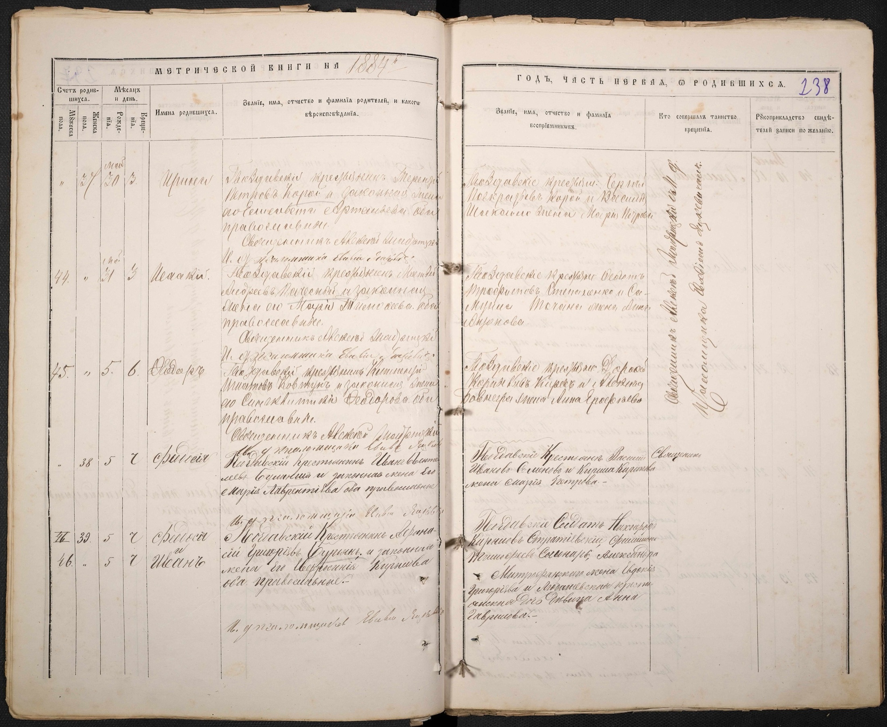
Метрична книга 1884 року, запис про народження Макарія (31.05.1884 ст. ст.), старшого брата Івана Матвійовича; батьки — Матвій Андрійович Пачесний і Марія Тимофіївна. FamilySearch, DGS 115149116, зобр. 226.
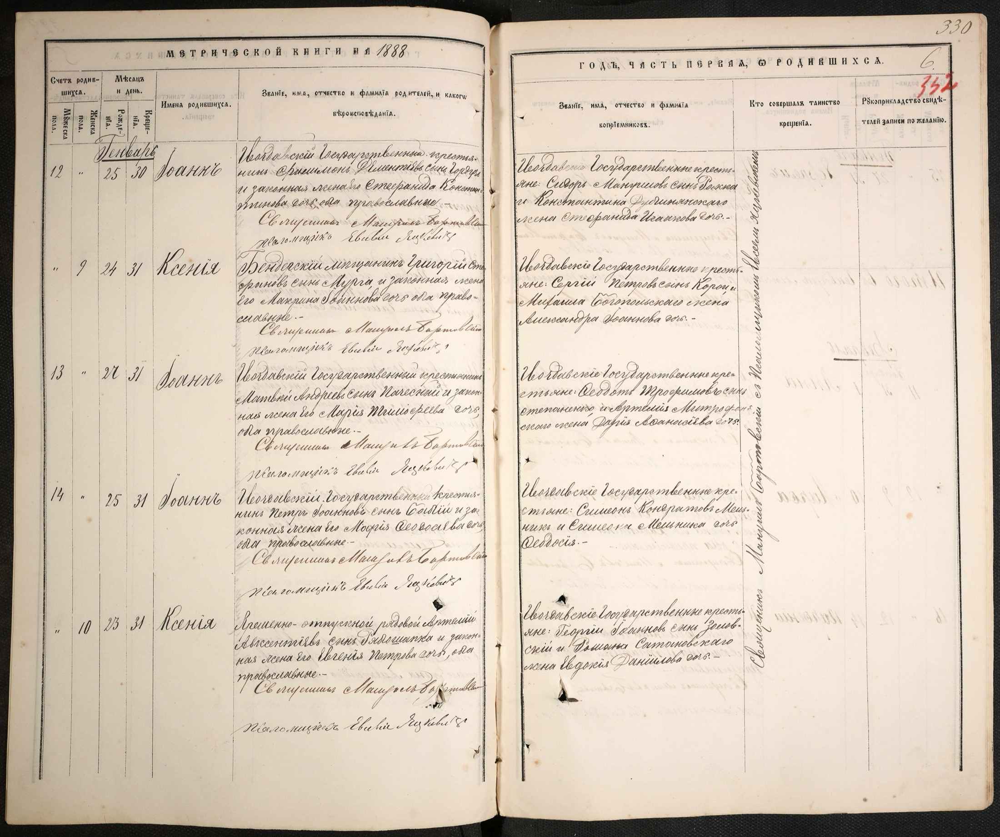
Метрична книга Гвоздавки 1888 року (ДАОО, ф. 37, оп. 14, спр. 130), запис № 13: Іван народився 27.01.1888 (ст. ст.); батьки — Матвій Андрійович Пачесний і Марія Тимофіївна. FamilySearch, DGS 115148778, зобр. 332.
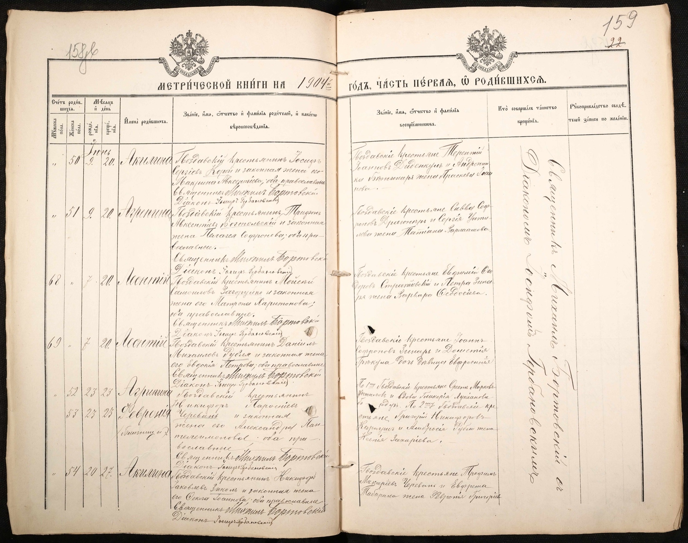
1904, червень: Акилина, нар. 20.06; батьки Иосиф Сергиев Корой і Макрина Авксентиева. DGS 127453540, зобр. 170.
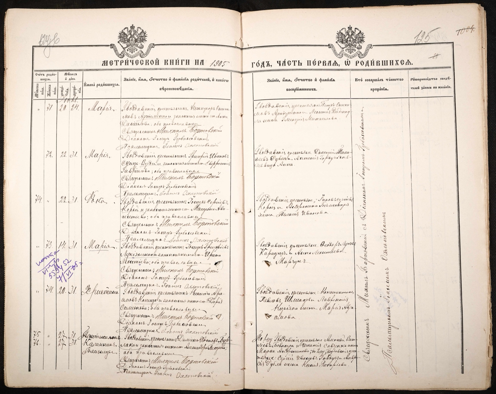
1905, чол. № 74: Фока, нар. 22-го, хрещ. 31-го (ст. ст.); батьки Іосиф Сергієв Корой і Матрона Авксентієва. DGS 127453554, зобр. 130. Помер 1911 року.
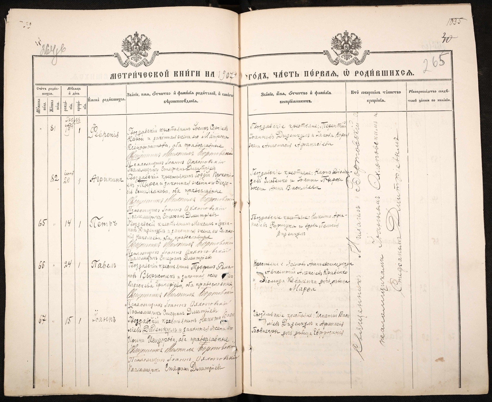
1907, жін. № 81: Февронія, нар. 2.07.1907 (19.06), хрещ. 14.07 (1.07); батьки Иосиф Сергиев Корой і Матрона Ксенофонтова; хрещені Терентій Іоаннович Диденкул і Анастасія Афанасіївна, дружина Якова Короя. ДАОО ф. 911, оп. 1, спр. 13; DGS 127453541, зобр. 272.
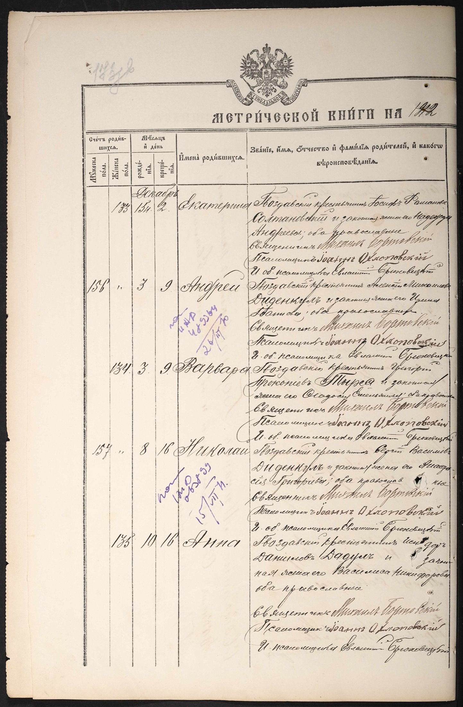
1912, грудень, жін. № 135: Анна, нар. 10.12, хрещ. 16.12; батьки Исидор Данилов Дадул і Василиса Никифорова. DGS 127941303, зобр. 344.
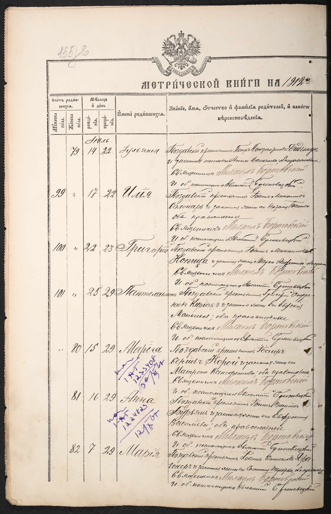
1912, липень, жін. № 80: Марія, нар. 15.07, хрещ. 29.07; батьки Иосиф Сергиев Корой і Матрона Ксенофонтова. DGS 127941303, зобр. 308.
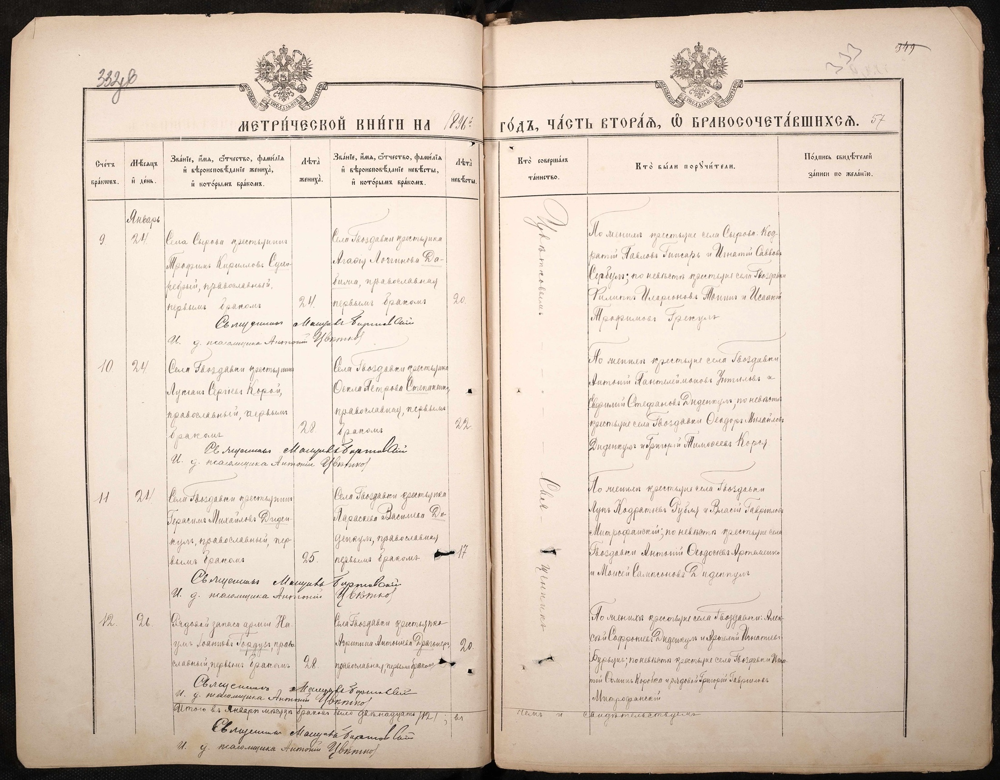
1896, січень, шлюб № 10: Лукіан Сергієв Корой, 22, × Олена Петрівна, 22 (24.01). DGS 127453559, зобр. 350.
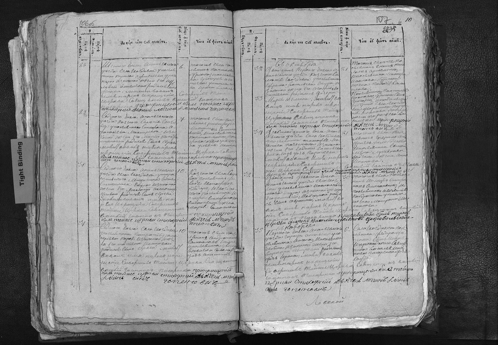
1836, вересень, № 31: Гвоздавка — Сергій, син поселянина Панкратія Дмитрієва Короя і Тетяни Іоанової (7.09).
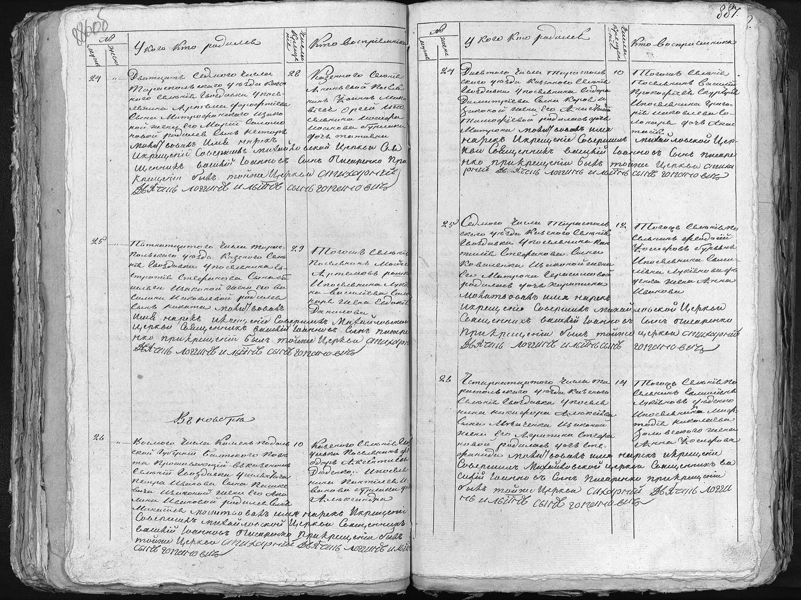
1831, жовтень, № 24: Гвоздавка — Матрона, дочка Сидора Дмитрієва Короя і Анастасії Тимофієвої.
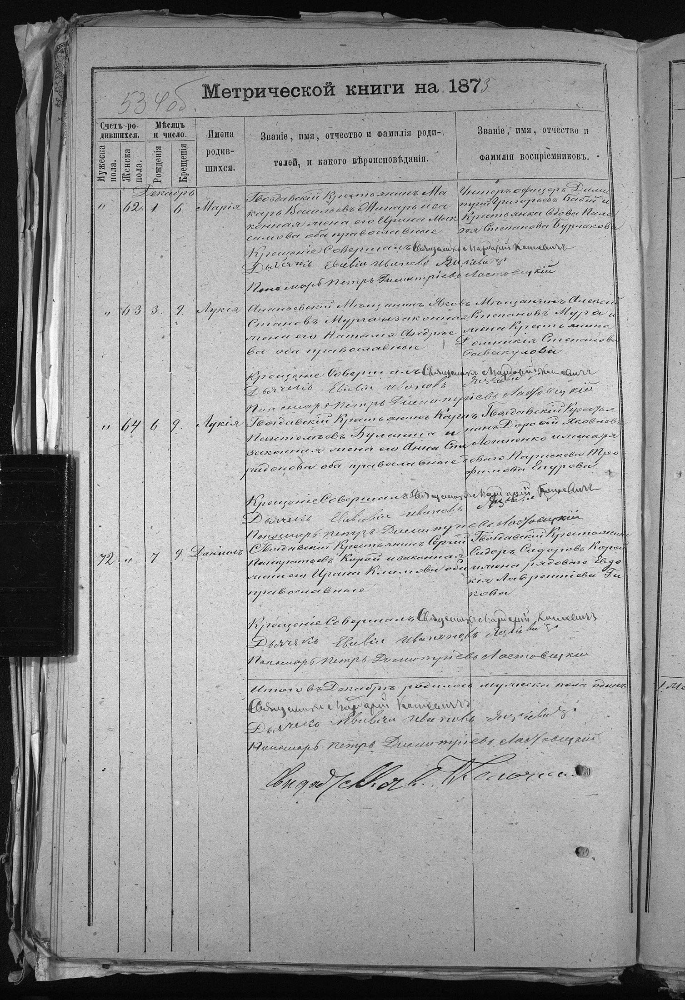
1873, грудень, № 72: Даниїл, син Сергія Панкратьєва Короя і Ірини Климової (7.12).1873, червень, жін. № 25: Акилина, дочка Петра Панкратієва Короя і Ксенії Георгієвої (7.06).1881, січень, № 2: Яків Сергієв Корой, 20, перший шлюб × дівиця Анастасія Афанасьєва, 24; праворуч поручителі. DGS 113550504, зобр. 35.1882, січень, № 16: Арсеній Ісидоров Корой, 21 × Ірина Лазарева, 17; поручителі за нареченого — Сергій Панкратьєв Корой та Іван Петров Диденкул. DGS 113550502, зобр. 251.1882, травень, № 25: Терентій Петров Корой, 21 × Єлисавета Терентієва Кир'як(?), 17; поручителі за нареченого — Сергій Панкратьєв Корой і Матвій Захаров Бадрак(?). DGS 113550502, зобр. 253.1872, червень, № 10: Точилове — Михайло, 1, син Федора Кирилова сина Стратієва (12.06).1870, жін. № 37: Євфимія, нар. 16.09 (28.09 н. ст.); батьки Лука Кондратов Рубля і Параскева Авксентієва.1874, жін. № 32: Акилина, нар. 1.06 (13.06 н. ст.); батьки Лука Кондратов Рубля і Параскева Авксентієва.1874, січень: Гордій, син Михаила Кондратова Рубли і Марії Іванової (3.01).1827, лютий: Євдокія, дружина Лазаря Дадула (13.02).1820: Калістрат, син Лазаря Дадула і Євдокії (27.09).1832, березень: Спиридон Симеонов Дадул (5.03).1804, «казенного селения Гвоздавки» Михайлівська церква, № 2: Василиса, дочка Ігнатія Пачисного і Фтекли (8.01.1804) — найраніший відомий запис про Пачесних.1873, березень, № 7: Прокофій Андреєв Пачисний, 22, від водянки (4.03) — імовірний брат Матвія Андрійовича.1872, травень, № 18: Даміан Осипов Пачисний, 21, × Гликерія Федорова Караушева, 18 (28.05).
У 2025 році «Odessa Life» написала про родину Пачесних з Гвоздавської волості. Заможний селянин Гаврило Пачесний мав щонайменше сто десятин землі. Його садиба в переліку поселень Ананьївського повіту 1896 року записана як хутір Пачислаго, тобто хутір Пачесних. На початку XX століття в родині було десятеро синів. Батьки наділили кожного землею, і хутір виріс у село Володимирівку, що входить до Гвоздавської сільради.
У 1930-х Пачесних розкуркулили: забрали землю, худобу, хату й переселили на околицю. Вони вступили до колгоспу. Син Гаврила Петро очолив городницьку бригаду, грав на скрипці на весіллях, мав з дружиною Февронією дев'ятеро дітей. Навесні 1944-го Февронія тиждень ховала Петра й чотирьох сусідів у буряковій ямі від відступаючих німців. Їхній син Григорій Петрович (1918, с. Володимирівка) воював у складі 2-го Українського фронту й повернувся з орденами Червоної Зірки та Слави. У 1986-му він отримав ювілейний орден Вітчизняної війни II ступеня. Дочка Наталя (Кіріяк) у 2025 році, у 87 років, жила в Солтанівці.
версія Прізвище Пачесний у світі носять лише кілька десятків людей, і всі воєнні записи ведуть у Гвоздавку та Володимирівку. Дід Олексій — Терентійович, отже, син не Петра, а Терентія Івановича. Метрика 1912 року показала, що прапрадід — Іван Матвійович, тобто син Матвія, а не Гаврила. Тож Гаврило з хутора Пачислаго може бути хіба що батьком або братом Матвія; це ще треба перевірити за старішими книгами.
Батько діда Олексія Терентійовича; родина підтверджує, що це він. Єдиний Терентій Пачесний у воєнних базах — Терентій Іванович, 1912 року народження, з Гвоздавки Другої.
Знайдено запис про його народження. Метрична книга Архангело-Михайлівської церкви Гвоздавки за 1912 рік, частина перша, запис № 80: Терентій народився 31 травня, хрещений 10 червня 1912 року за старим стилем (13 і 23 червня за новим). Батьки: «Гвоздавскій крестьянинъ Іоаннъ Матвѣевъ Пачесный и законная жена его Любовь Лукова, оба православные». Хрещені: гвоздавські селяни Іоанн Васильович Диденкул і Марфа Кирилівна, дружина Івана Рублі. Хрестив священник Михаїл Бортовський, той самий, що хрестив Тимофія Короя й Анастасію Дадул.
Отже, прапрадід — Іван Матвійович Пачесний, прапрабабуся — Любов Луківна, а прапрапрадід — Матвій Пачесний.
Знайдено і запис про їхній шлюб. Метрична книга Гвоздавки за 1909 рік, частина друга, запис № 10: 19 січня 1909 року обвінчалися «Гвоздавскій крестьянинъ Іоаннъ Матвѣевъ Пачесный, православный, первымъ бракомъ», 21 рік, і «Гвоздавская крестьянка Любовь Лукова Рубля, православная, первымъ бракомъ», 26 років. Отже, Іван народився близько 1887–1888 року, а Любов — близько 1882–1883-го, і вона була на п'ять років старша за чоловіка. Дівоче прізвище прапрабабусі — Рубля, а її по батькові «Лукова», тобто Луківна, дає ім'я її батька: Лука Рубля, ваш прапрапрадід, народжений, імовірно, у 1850-х роках. Брат Любові: 29 січня 1907 року в Гвоздавці одружився «гвоздавський селянин Мина Луков Рубля», 22 роки (ім'я розірване переносом «Ми-на»; раніше помилково прочитано як «Василій», потім «Іоанн»), першим шлюбом, з Єлисаветою Тимофіївною(?) Митрофанською, 19 (книга 1907, № 13, зобр. 294). Той самий рідкісний збіг «Луків Рубля» — отже, він, найімовірніше, рідний брат прапрабабусі Любові. версіяЗнайдено його народження: книга Гвоздавки 1885 року (ДАОО, ф. 37, оп. 14, спр. 63; FamilySearch, DGS 115149117, зобр. 161), січень: Мина народився 5 січня, хрещений 13 січня 1885 року (ст. ст.); батьки — «села Гвоздавки селяни Лука Кондратьєв Рубля і законна його жена Параскева Авксентієва, православні»; хрещені — Власій Гаврилович Митрофанський і міщанка Софія, дружина Митрофанського. Отже, батька Мини, а ймовірно й прапрабабусі Любові, звали Лука Кондратович Рубля, а матір — Параскева Авксентіївна. Знайдено метрику прапрабабусі Любові: книга Гвоздавки 1882 року (ДАОО, ф. 37, оп. 10, спр. 35; FamilySearch, DGS 113550502, зобр. 235), запис № 65 жіночої статі: Любов народилася 27 вересня 1882 року (15 вересня за старим стилем), хрещена 20 вересня (ст. ст.); батьки — «Гвоздавскій крестьянинъ Лука Кондратьевъ Рубля и законная жена его Параскева Авксентьева, оба православные»; хрещені — гвоздавські селяни Пантелей Лаврентійович Митрофанський і Миронія(?) Рубля, дружина Макарія(?) Іванова. Тих самих батьків названо в метриці Мини 1885 року, тож тепер документально доведено: Любов і Мина — рідні брат і сестра, а ваші прапрапрадід і прапрапрабабуся — Лука Кондратович Рубля і Параскева Авксентіївна. Вік у шлюбному записі (26 років у січні 1909-го) збігається з датою народження. Хрестив священник Алексій Підборський(?). Він стоїть у дереві над Любов'ю, так само як Матвій Пачесний над Іваном. Шлюб Луки й Параскеви поки не знайдено: переглянуто всі шлюби Гвоздавки за 1877, 1879, 1880, 1881 і січень–лютий 1882 року; книги 1878 року в мережі немає, тож шлюб був, імовірно, 1878-го або раніше 1877-го, чи в іншій парафії (у селі нареченої). У книзі 1880 року (DGS 113550712, зобр. 313) трапився однофамілець — «бобрицкій крестьянскій сынъ Семенъ Исаковъ Рубль», 23, що 6 лютого 1880 року обвінчався з Варварою, дочкою гвоздавського селянина Григорія Ратушникова(?); чи він родич Луки, невідомо.
Шлюби Гвоздавки 1877–1882 переглянуті (2.10.2026). Щоб знайти вінчання прапрапрадіда Матвія Андрійовича Пачесного й Марії Тимофіївни (а з ним — дівоче прізвище Марії та її батька Тимофія), я прочитала всі записи частини другої за 1877 (12 шлюбів, DGS 113550468), 1879 (33, DGS 113550490), 1880 (24, DGS 113550712), 1881 (28, DGS 113550504) і 1882 роки (40, DGS 113550502); книги 1878 року онлайн немає, 1883 рік переглянуто раніше. Матвія серед наречених немає. Їхній первісток Макарій народився в травні 1884-го, а в проіндексованих шлюбах 1870–1874 років Матвія теж немає, тож вінчалися вони, найімовірніше, у 1875–1876 або 1878 році — цих книг у мережі поки не знайдено. Єдиний Пачесний у шлюбах за ці шість років — Гаврило Іванович Пачесний, 23 роки, перший шлюб, 28 січня 1879 року (№ 13); наречена — Марія, 22 роки, дочка тодішнього виконувача обов'язків псаломщика Євсевія Яцкевича (прочитання прізвища непевне). Це той самий Гаврило Іванович (бл. 1856 – † 29.01.1911), батько Василя та Івана Гавриловичів — гілка Гавриловичів, а не наша.
Знайдено батьків Луки — Кондрат Рубля і Тетяна Степанівна Дога (8-ме коліно). У книзі Гвоздавки за 1824 рік, частина друга «о бракосочетавшихся», запис № 2: 20 січня 1824 року (1 лютого н. ст.) «по учиненіи по силѣ указовъ обыска казеннаго селенія Гвоздавки поселянина Кондрата Рублю съ дѣвицею Татіяною сего селенія поселянина Стефана Доги дочерью, первымъ бракомъ, обвѣнчалъ приходскій священникъ Мефодій Жи[боров]» (скан). Поручителі — «ананьевскіе поселяне Василій Стратанъ и Иванъ Дубей». Далі в книгах народжень Гвоздавки записано їхніх дітей: Савва, нар. 12 (24) січня 1826, хрестив священник Костянтин Матковський, хрещений Йосип Мунтян (скан; помер 20.01.1827); Михайло, нар. 23 листопада (5 грудня) 1827, «отъ Кондрата Рубленка и жены его Татіяны», священник Василь Багоцький (скан) — це Михайло Кондратович, брат Луки, батько Петра († 1884) і Гордія (1874); Євгенія, нар. 2 (14) лютого 1830, «отъ Кодрата Рубли и жены его Татіяны», священник Василь Писаренко (скан; померла 30.04.1831). Лука (нар. бл. 1830 за віком у записі про смерть) і Никита (бл. 1833) у проіндексованих записах не трапляються — книги Гвоздавки 1831–1835 проіндексовано лише частково, а 1845–1869 не проіндексовано зовсім. Що Лука — син саме цього Кондрата, доводить лише рідкісне поєднання імені й прізвища в одному селі, тож у дереві це версія. версія
Стефан Дога — дев'яте коліно. В індексі книг 1780–1844 є запис про хрещення Татіанни, дочки казенного поселянина Стефана Доги, 10 (22) квітня 1801 року; хрещена — дівчина Меланія, дочка Симеона Чандела (скан). Запис у книзі Миколаївської церкви Ананьєва, за 20 км від Гвоздавки: тоді Дога жили ще в Ананьєві, а до 1824 року перебралися в Гвоздавку (не випадково поручителями на весіллі були «ананьївські поселяни»). Вік збігається: 1824 року Тетяні було б 22. Інших Стефанів Дога з дітьми 1800-х років в індексі немає, але сам запис не називає села нареченої, тому це теж версія. Батьків Кондрата знайти поки не вдалося: в індексі є Рублі з Бобрика (Семен Ісаків Рубль, 1880) і Рублевські з інших парафій, прямого зв'язку не видно.
Онуки Кондрата в книзі шлюбів 1883 року (ДАОО, ф. 37, оп. 14, спр. 31; DGS 115149119, зобр. 39–51; усього за рік 36 шлюбів): 26 січня — «Гвоздавскій крестьянинъ Иванъ Михайловъ Рубля», 22, перший шлюб, і Агрипина Кононівна Поперечна, 20, вихованка гвоздавського селянина Корнія Бобрицького; 9 листопада (№ 36) — рядовий Афанасій Афанасійович Чобан, 26, і «гвоздавська селянська дочка дівиця Олена Михайлівна Рубля», 20. Обоє — діти Михайла Кондратовича, двоюрідні брат і сестра прапрабабусі Любові. Пачесних серед 36 шлюбів 1883 року немає — тож Матвій Андрійович і Марія Тимофіївна вінчалися раніше (їхній первісток Макарій народився в травні 1884-го, але шлюб міг бути й у 1870-х).
Метрична книга Гвоздавки 1824 року, частина друга, № 2 (20 січня): шлюб Кондрата Рублі з дівицею Тетяною, дочкою Стефана Доги; праворуч поручителі — ананьївські поселяни Василь Стратан та Іван Дубей. FamilySearch, мікрофільм 103559378, зобр. 111.1826, січень, № 2: Савва, син Кондрата Рублі і Тетяни (12.01 ст. ст.). Ліворуч — заголовок зошита: «казеннаго селенія Гвоздавки въ Михайловскую церковь ... чрезъ 1826-й годъ».1827, листопад, № 36: «родися младенецъ Михаилъ отъ родителей законновѣнчанныхъ селенія Гвоздавки поселянина Кондрата Рубленка и жены его Татіяны».1830, лютий, № 5: Євгенія, дочка Кодрата Рублі і Тетяни (2.02 ст. ст.); священник Василь Писаренко.1801, квітень, № 15 (Ананьїв, Миколаївська церква): «крещена младеница Татіанна, дочь казеннаго поселянина Стефана Доги; воспріемница была дѣвица Меланія, дочь Симеона Чандела».
Брат Луки — Михайло Кондратович Рубля. У книзі смертей Гвоздавки 1884 року (DGS 115149116, зобр. 258) записано: 19 січня 1884 року (ст. ст.) помер, 20-го похований «Гвоздавскаго крестьянина Михаила Кондратьева Рубли сынъ Петръ», 5 років, від дифтерії. Той самий рідкісний збіг «Кондратьєв Рубля», що й у Луки, — отже, Михайло, найімовірніше, рідний брат прапрапрадіда Луки, а маленький Петро — двоюрідний брат прапрабабусі Любові. версія У грудні 1883 року помер також трирічний Сергій, син гвоздавського селянина Мойсея Е…ва Рублі (книга 1883, DGS 115149119, зобр. 63) — ще одна родина Рублів у селі.
Метрична книга Гвоздавки 1884 року, частина третя «об умершихъ», січень: Петро, 5 років, син Михайла Кондратьєва Рублі, помер 19.01.1884 (ст. ст.). FamilySearch, DGS 115149116, зобр. 258.
Поручителі: гвоздавські селяни Василь Автономович Кир'як та Іоанн Васильович Диденкул; той самий Диденкул через три роки став хрещеним Терентія, а хрещеною — Марфа Кирилівна, дружина Івана Рублі, імовірно родича Любові. Вінчав священник Михаїл Бортовський.
Метрична книга 1885 року (ДАОО, ф. 37, оп. 14, спр. 63), запис про народження Мини (5.01.1885 ст. ст.); батьки — Лука Кондратьєв Рубля і Параскева Авксентієва. FamilySearch, DGS 115149117, зобр. 161.Метрична книга Гвоздавки 1907 року, частина друга, шлюб № 13 (29.01.1907 ст. ст.): Мина Луков Рубля, 22, брат прапрабабусі Любові. FamilySearch, DGS 127453541, зобр. 294.Метрична книга Гвоздавки 1882 року (ДАОО, ф. 37, оп. 10, спр. 35), розворот за вересень; № 65 — Любов, нар. 15.09.1882 (ст. ст.); батьки — Лука Кондратьєв Рубля і Параскева Авксентієва. FamilySearch, DGS 113550502, зобр. 235.
Інші Рублі в Гвоздавці: у метричній книзі смертей за 1911 рік (зобр. 531, запис № 42) знайдено, що 25 травня 1911 року помер (похований 26-го) 4-річний «Гвоздавенскаго крестьянина Ісаака Євстафієва Рубли сынъ Іоаннъ» — отже, Ісаак Євстафійович Рубля вже мав родину в Гвоздавці до 1912 року. У 1912 році той самий Ісаак Євстафійович був хрещеним (книга 1912, зобр. 243), а в січні того ж року в Івана Антоновича Рублі народився син Володимир (зобр. 246). Чи вони родичі Любові Луківни, поки невідомо.
Хто такі поручителі. Перед вінчанням священник складав «обшук», тобто перевіряв, чи немає перешкод для шлюбу. Поручителі своїми підписами ручалися, що наречені не є близькими родичами, що жоден із них не одружений, що вони досягли потрібного віку й беруть шлюб з доброї волі. Зазвичай було двоє поручителів від нареченого й двоє від нареченої. Найчастіше це були родичі, хрещені або близькі друзі родини. Тому поручитель на чужому весіллі — ознака того, що людина була своєю для однієї з родин.
За п'ять днів до власного весілля, 14 січня 1909 року, Іван Матвійович був поручителем на шлюбі Андрія Івановича Карауша й Акилини Арсенівни Корой (запис № 7). Отже, він був близький або з родиною Караушів, або з Короями. Корої — теж рід із вашого дерева, але чи була Акилина родичкою прадіда Тимофія Короя, поки невідомо.
На тому ж розвороті, запис № 79, — Омелян, син гвоздавського селянина Стефана Васильовича Пачесного й Анни Михайлівни; а в березні того ж року, запис № 45, — Лука, син Івана Гавриловича Пачесного і Євфросинії. Це інші гілки роду: Іван Гаврилович — не ваш прапрадід, бо батько Терентія — Матвійович.
FamilySearch, мікрофільм 127941303 (Гвоздавка та сусідні парафії, 1912), зобр. 296–297, запис № 80; архівна адреса: ДАОО, ф. 911, оп. 1, спр. 20, арк. 149 зв.–150.
Воював двічі. У 1941 році він уже був в армії: у списку 1944 року в графі «находился в окружении, плену» стоїть 2.10.41 – 28.10.41. Це жовтневе оточення Південного фронту на Азовському узбережжі, коли частини 9-ї та 18-ї армій потрапили в «мішок» під Чернігівкою. За майже місяць він вибрався, дістався додому і решту окупації прожив у Гвоздавці. Колгоспник, безпартійний.
1 квітня 1944, через два дні після звільнення, Любашівський райвійськкомат призвав його знову, як Тимофія Короя та Андрія Стратієвського. 19 червня 1944-го він прибув у 214-й армійський запасний полк 5-ї гвардійської армії, той самий, де тоді був і Тимофій Корой, і з командою № 484 вибув у 9-ту гвардійську дивізію. Служив у 28-му гвардійському повітряно-десантному полку 9-ї гвардійської повітряно-десантної дивізії. Наказом по полку № 30/н від 17 вересня 1944 року нагороджений медаллю «За відвагу», а після війни — медаллю «За перемогу над Німеччиною». Тобто він повернувся з фронту живим. Самого нагородного листа в базі немає, лише картка обліку.
Його дружина, мати діда Олексія, — Віра Григорівна: у списку запасного полку 1944 року в графі «семейное положение» записано «ж. Вера Григоревна, там же», тобто в Гвоздавці. Її дівоче прізвище й роки життя ще не відомі; батька звали Григорій. Батьки Терентія — Іван Матвійович Пачесний і Любов Луківна, ваші прапрадід і прапрабабуся.
19.01.1909
шлюб батьків, Івана Матвійовича Пачесного й Любові Луківни Рублі
31.05.1912
народився в Гвоздавці; хрещений 10.06.1912 (ст. ст.)
1938
народився син Олексій
2.10 – 28.10.1941
в оточенні на Південному фронті; повернувся додому
01.04.1944
призваний Любашівським РВК
19.06.1944
214 армійський запасний полк 5 гв. армії, далі 9 гв. повітряно-десантна дивізія, 28 гв. полк
17.09.1944
медаль «За відвагу», наказ № 30/н
09.05.1945
медаль «За перемогу над Німеччиною»
Метрична книга Гвоздавки 1909 року, частина друга, розворот із шлюбами № 6–10. № 10 унизу: Іоанн Матвійович Пачесний, 21, і Любов Луківна Рубля, 26; праворуч поручителі. У записі № 7 серед поручителів — сам Іоанн Матвійович. FamilySearch, мікрофільм 127453543, зобр. 136.Метрична книга Гвоздавки 1912 року, розворот із записами № 78–82. Терентій — № 80: батьки Іоанн Матвійович Пачесний і Любов Луківна; праворуч хрещені. FamilySearch, мікрофільм 127941303, зобр. 296–297.Список поповнення 214-го запасного полку, червень 1944 року. Рядок 1: Терентій, оточення 2.10–28.10.41, «ж. Вера Григоревна». ЦАМО, ф. 8510, оп. 165430с, спр. 14. Знайшов ChatGPT, перевірено за оригіналом.
Народився в 1959 році в селі Ясенове Любашівського району, сусідньому з Гвоздавкою. У 1983 році одружився з Надією Спінатій. Має сестру Надію, заміжню Перхун.
Діти
Володимир і Ольга
Володимир Анатолійович народився в 1985 році, Ольга Анатоліївна — у 1987-му в Кишиневі. Точні дати живих на цій публічній сторінці не наводяться.
Книги смертей · гіпотези
Що показали записи про смерть
Частина третя кожної метричної книги, «об умершихъ», дає вік померлого, а отже приблизний рік народження, і родинні зв'язки («вдова», «жена», «сынъ»). Переглянуто книги Гвоздавки за 1882–1890 і 1900–1912 і 1916 роки. Нижче — записи про людей з наших прізвищ або з по батькові, що збігаються з нашими предками. Усе це версія: прямого зв'язку з деревом запис не доводить, доки не знайдеться ще один документ. Дати — за старим стилем.
Хто з прямих предків у ці роки не помер. Серед померлих 1882–1887 років немає Луки й Параскеви Рублів, Данила й Олени Дадулів, Матвія й Марії Пачесних, Никифора й Ксенії Стратієвських, Сергія Короя — отже, вони були живі принаймні до кінця 1887 року.
Корої. 25 травня 1886 року помер від старості «крестьянинъ Спиридонъ Николаевъ Коревъ», 64 роки (нар. бл. 1822). За віком він може бути батьком Сергія Короя (прапрапрапрадіда), а отже дідом Йосипа Сергійовича. (DGS 115149127, зобр. 163.)
Сестра Макрини? 14 квітня 1886 року від пологової гарячки померла «Стефана Пингули(?) жена Феодосія Ксенофонтова», 23 роки (нар. бл. 1863). По батькові збігається з прапрабабусею Макриною Ксенофонтівною (дружиною Йосипа Короя) — можливо, її старша сестра. (DGS 115149127, зобр. 161.)
Пачесні. 23 листопада 1886 року від старості померла «крестьянина Ивана Пачеснаго жена Домникія», 63 роки (нар. бл. 1823) — старше покоління Пачесних; її чоловік Іван міг бути батьком або дядьком Андрія Пачесного, імовірного батька Матвія. (DGS 115149127, зобр. 166.)
Дадули. 17 лютого 1887 року від крупу помер «крестьянина Авксентія Дадула сынъ Сергій», 3½ роки — родина Авксентія Лазаревича (див. шлюб 1879 року), у якій, імовірно, народилася й Матрона Дадул. (DGS 115148772, зобр. 56.)
Спінатії. 24 лютого 1887 року помер «вдовый крестьянинъ Гавріилъ Андреевъ Спинатій», 57 років (нар. бл. 1830). У тій самій книзі 1887 року є Феодор Гаврилович Спінатій з дружиною Марфою Ларіонівною — імовірно, його син; чи від цієї гілки походить прадід Федот Спінатій, ще треба з'ясувати. (Там само, зобр. 56.)
Сестра Луки? 27 березня 1887 року від пологів померла «Герасима Кир'яка(?) жена Харитина Кондратова», 34 роки (нар. бл. 1853). По батькові «Кондратівна», як у Луки й Михайла Рублів; можливо, їхня сестра. (DGS 115148772, зобр. 58.)
Стратієвські. 2 жовтня 1887 року від старості помер «крестьянинъ Феодоръ Іоакимовъ Стратіевскій», 72 роки (нар. бл. 1815) — найстарший відомий Стратієвський Гвоздавки, імовірно батько Василя Феодоровича Стратієвського (у його родині 1880 року хрестив Никифор Кирилович). (DGS 115148772, зобр. 66.)
Імовірно, прапрапрадід Матвій. 24 липня 1888 року (5 серпня за новим стилем) помер, 25-го похований «Гвоздавскій крестьянинъ Матвей Андреевъ сынъ Пачесный», 40 років (нар. бл. 1848); причина записана як нещасний випадок — «убитъ обваломъ земли» (читання попереднє). Інших Матвіїв Андрійовичів Пачесних у книгах Гвоздавки поки не трапилося, тож це, найімовірніше, батько прапрадіда Івана Матвійовича: тоді Іван лишився без батька в півроку, а Макарію було чотири. (DGS 115148778, зобр. 393.)
Корої-Ісаковичі. 14 січня 1889 року від старості помер «крестьянинъ Корнилій Исааковъ сынъ Коревъ», 68 років (нар. бл. 1821), а наприкінці 1889-го — «отставной рядовой Яковъ Исааковъ сынъ Коревъ», 60 років (нар. бл. 1829). Обидва — сини якогось Ісаака Короя і, імовірно, брати; покоління відповідає батькові або дядькові Сергія Короя (прапрапрапрадіда). (DGS 115149241, зобр. 297 і зобр. 307.)
Ще один старший Корой. 28 жовтня 1890 року від старості помер «крестьянинъ Афанасій Степановъ сынъ Корей», 70 років (нар. бл. 1820). (DGS 115149253, зобр. 144.) Разом зі Спиридоном Миколайовичем (†1886) і Ісаковичами це вже три різні родини Короїв, народжених у 1820-х; від якої походить Сергій Корой, без його метрики не визначити.
Стратієвські. 21 квітня 1889 року помер однорічний Трохим, син «отставного бомбардира Василія Феодорова сына Стратиевского» — того самого Василя Феодоровича, у родині якого 1880 року хрестив Никифор Кирилович (і, імовірно, сина Феодора Іоакимовича, †1887). 6 липня 1889 року від старості померла «вдова Екатерина Григорьева дочь Стратиевская», 65 років (нар. бл. 1824). (DGS 115149241, зобр. 302 і зобр. 304.)
Ще один Кондратович Рубля. 17 квітня 1901 року від старості помер «Гвоздавскій крестьянинъ Никита Кондратіевъ Рубля», 68 років (нар. бл. 1833). Разом із Михайлом (1884) це вже другий Кондратович Рубля — імовірно, старший брат прапрапрадіда Луки, а всі вони сини одного Кондрата Рублі. (DGS 127453542, зобр. 67.)
Дружина Йосипа Лазаровича Дадула. 1 листопада 1901 року від старості померла «Гвоздавскаго крестьянина Іосифа Лазарева Дадула жена Агафія Стратонова», 78 років. Це та сама Агафія Стратонівна, з якою удівець Йосип Лазарович обвінчався в жовтні 1900 року; після її смерті він 1904 року одружився втретє. (DGS 127453542, зобр. 77.)
Стратієвські. У червні 1901 року від старості помер «отставной солдатъ Василій Феодоровъ Стратіевскій», 60 років (нар. бл. 1841) — той самий відставний бомбардир, у чиїй родині 1880 року хрестив Никифор Кирилович. (DGS 127453542, зобр. 70.)
Корої-Ісааковичі. 2 березня 1900 року від старості померла «вдова Евфимія Исаакова Карева» (Корой), 70 років (нар. бл. 1830) — сестра Корнилія та Якова Ісааковичів (†1889). (DGS 127453533, зобр. 222.)
Уточнення до Короїв. 17 червня 1900 року помер Іоанн, син гвоздавського селянина «Іларіона Савастіанова Драганера» (DGS 127453533, зобр. 226). Отже, Іларіон Севастянович, що одружився 1907 року і раніше був прочитаний як «Корой(?)», найімовірніше Драганер, а не Корой.
Імовірна сестра прабабусі Любові. 9 вересня 1902 року помер тримісячний Феодор, син «села Гвоздавки крестьянки Агафіи Луковой Рубли дѣвицы», тобто позашлюбна дитина незаміжньої Агафії Луківни Рублі. По батькові й прізвище такі самі, як у Любові й Мини, тож Агафія, імовірно, їхня сестра — ще одна дочка прапрапрадіда Луки Кондратовича. (DGS 127453545, зобр. 423.)
Даміан Йосипович Пачесний. 1 грудня 1903 року помер, 3-го похований «Гвоздавскій крестьянинъ Даміанъ Іосифовъ Пачесный», 56 років (нар. бл. 1847), від водянки. Це, найімовірніше, батько Леонтія Даміановича (шлюб 1900) і Параскеви Даміанівни (шлюб 1903) Пачесних. За віком він ровесник прапрапрадіда Матвія Андрійовича (нар. бл. 1848), але по батькові інше — Йосипович, тож це інша гілка Пачесних; чи були Андрій і Йосип Пачесні братами, документи поки не кажуть. версія (DGS 127453547, зобр. 259.)
Дочка прапрадіда Йосипа Короя. 6 липня 1904 року померла чотиритижнева Агрипина, дочка «Гвоздавскаго крестьянина Іосифа Сергѣева Короя» (DGS 127453540, зобр. 219). Отже, уже в червні 1904 року в Йосипа Сергійовича була родина — за шість років до народження прадіда Тимофія; Агрипина могла бути його старшою сестрою. Матір у записі не названо, тож чи це Матрона (шлюб 1902) чи Макрина, запис не каже. версія Тут само 1 липня — Агрипина, дочка Севастіана Дометійовича Короя, і 12 грудня — «Яковъ Іосифовъ Корей», 71 рік, — інші гілки Короїв.
Рублі. 8 січня 1904 року від сухот померла «Гвоздавскаго крестьянина Іоанна Лукіанова Рубли жена Ксенія Димитріева», 24 роки. Якщо Іоанн Лукіанович — той самий Іван Лукич (Лукович) Рубля, що 1911 року мав дружину Марфу Кирилівну, то Ксенія — його перша дружина, а сам він — брат прапрабабусі Любові. версія (DGS 127453540, зобр. 209.)
Спінатії. 21 січня 1904 року від сухот померла «вдова Марфа Ларіонова Спинатій», 56 років, — та сама Марфа Ларіонівна, мати Григорія Феодоровича (1887), удова Феодора Гавриловича Спінатія. (DGS 127453540, зобр. 210.)
Стратієвські. 17 квітня 1904 року від старості померла «вдова Агафія Семенова Стратіевская», 66 років (DGS 127453540, зобр. 214); 29 травня — немовля Ірина, дочка Назарія Григоровича Стратієвського (там само, зобр. 216) — ще одна дитина тієї родини Назарія, що втратила синів Григорія та Івана 1911 року.
Корої, 1905. 28 липня 1905 року від водянки померла «Гвоздавскаго крестьянина Прокопія Исидорова Корея жена Евгенія Михова», 48 років (DGS 127453554, зобр. 169). Це пояснює, чому в листопаді 1909 року Прокопій Ісидорович одружився вдруге. Того ж року померли діти Іллі Яковича та Прокопія Афанасійовича Короїв — інших гілок.
Стратієвські, 1905. 28 червня 1905 року помер «Гвоздавскій крестьянинъ Дометій Трифоновъ Стратіевскій», 33 роки (нар. бл. 1872; зобр. 171); у серпні — двомісячна Євфросинія, дочка Назарія Григоровича Стратієвського (зобр. 177); 14 вересня — «Евфросинія Данилова Стратіевская», 45 років (нар. бл. 1860; зобр. 179). По батькові «Данилівна» в жінки цього віку теоретично може вказувати на дочку Данила Лазаровича Дадула, що вийшла заміж за Стратієвського, але дівочого прізвища запис не дає, а Данилів у селі було кілька. версія
Корої, 1906. Червень 1906 року: від сухот помер 17-річний Пантелеймон, син «Якова Сергієва Короя» (DGS 124357203, зобр. 376). Отже, у Якова Сергійовича вже 1889 року був син — Яків, найімовірніше, значно старший за Йосипа Сергійовича (або в селі було двоє Яковів Сергійовичів); це підтримує застереження щодо їхнього братерства. версія Також 1906 року померли від старості «отставной солдатъ Никита Іосифовъ Корей», 90 років (нар. бл. 1816; зобр. 373) — найстарший відомий Корой Гвоздавки, і в грудні «Спиридонъ Яковлевъ Корей», 59 років (нар. бл. 1847; зобр. 389). Яків Іосифович (†1904), Никита Іосифович (†1906) — схоже, брати, сини Іосифа Короя, народжені в 1810–1830-х.
Ще один Сергійович — Трифон Корой. 29 вересня 1907 року від дифтериту помер п'ятирічний Феодор, син «умерлаго Гвоздавскаго крестьянина Трифона Сергіева Корея» (DGS 127453541, зобр. 333). Отже, Трифон Сергійович Корой помер до вересня 1907 року, а 1902 року ще мав сина. За рідкісним у селі по батькові він може бути братом прапрадіда Йосипа Сергійовича — ближчим за віком, ніж Яків. версія На тому самому аркуші 25 вересня помер від старості «Тимофій Іосифов Корей», 80 років (нар. бл. 1827) — ще один із Йосиповичів, разом із Яковом (†1904) і Никитою (†1906).
Імовірно, смерть прапрапрадіда Луки Рублі. 16 листопада 1908 року (29 листопада за новим стилем) помер, 18-го похований «Гвоздавскій крестьянинъ Лука Кондратовъ Рубля», 78 років (нар. бл. 1830), від старості; запис № 62 (DGS 127453558, зобр. 169). Ім'я, по батькові й прізвище збігаються з батьком прапрабабусі Любові (метрики 1882 і 1885); інших Лук Кондратовичів Рублів у книгах Гвоздавки не трапилося. Отже, Лука помер за два місяці до весілля дочки Любові з Іваном Пачесним (19 січня 1909). версія
Стратієвські, 1908. 10 березня 1908 року померла 20-річна «Іоанна Павлова Стратієвського жена Дарія Павлова» — дружина Іоанна Павловича Стратієвського, з яким вона вінчалася в листопаді 1906 року (DGS 127453558, зобр. 157).
Пачесні, 1908. На початку 1908 року помер немовля Іоанн, син «Стефана Васильєва Пачесного» — того самого Стефана Васильовича, що вінчався 1900 року з Анною Бур'ян (DGS 127453558, зобр. 154).
Ще один Сергійович — Лукіан Корой. Восени 1909 року від дифтериту померли дві дочки «Гвоздавскаго крестьянина Лукіана Сергіева Корея» — Єлисавета, 10 років, і Ольга, 6 років (DGS 127453543, зобр. 178). Разом із Яковом і Трифоном це вже третій Сергійович Корой у Гвоздавці; Лукіан, з дітьми 1899–1903 років народження, за віком найближчий до прапрадіда Йосипа Сергійовича і може бути його рідним братом. версія
Третя дружина Йосипа Лазаровича Дадула. 18 жовтня 1909 року від старості померла «Гвоздавскаго крестьянина Іосифа Лазарева Дадула жена Марфа Данилова», 82 роки (DGS 127453543, зобр. 175) — та сама Марфа, з якою Йосип Лазарович вінчався втретє 1904 року. Отже, сам Йосип Лазарович у жовтні 1909-го ще був живий.
Онука Луки Рублі? 24 жовтня 1909 року від дифтериту померла однорічна Агрипина, дочка «Гвоздавскаго крестьянина Іоанна Лукина Рубли» (DGS 127453543, зобр. 177). «Іван Лукин» — це той самий Іван Лукович Рубля, що 1911 року мав дружину Марфу Кирилівну, найімовірніше брат прапрабабусі Любові; тоді Агрипина — її небога. версія Також 18 лютого 1909 року померла 21-річна «вдова Єлисавета Тимофеєва Рубля» (зобр. 155) — можливо, Єлисавета Тимофіївна Митрофанська, що 1907 року вийшла за Мину Луковича Рублю; якщо так, Мина помер між 1907 і 1909 роками. версія
Син Данила Лазаровича Дадула. 23 грудня 1910 року (5.01.1911 н. ст.) помер «Гвоздавскаго крестьянина Даниила Лазарева Дадула сынъ Стефанъ», 21 рік, чол. № 108 (DGS 127941304, зобр. 309). Отже, Стефан народився близько 1889 року і був братом прапрадіда Ісидора (Сидора) Даниловича і Фекли Данилівни. версія
Онук Даміана Йосиповича Пачесного. 2 квітня 1910 року (15.04) помер восьмимісячний Василь, син «Феодота Даміанова Пачесного», чол. № 37 (зобр. 269). Феодот Даміанович — імовірно син Даміана Йосиповича Пачесного, який помер 1903 року. версія Цього ж року померли також Анна, 3 міс., дочка Василя Гавриловича Пачесного, 5 березня (18.03) (зобр. 261), і Стефан, 4 роки, син Іоанна Гавриловича Пачесного, 18 листопада (1.12) (зобр. 305). Василь та Іоанн Гавриловичі — брати, сини якогось Гаврила Пачесного; як вони пов’язані з Матвієм Андрійовичем, поки не встановлено.
Григорій Феодорович Стратієвський. 15 червня 1910 року (28.06) помер «Гвоздавскій крестьянинъ Григорій Феодоровъ Стратієвскій», 63 роки, чол. № 57 (зобр. 281). Він народився близько 1847 року, тож може бути сином Феодора Іоакимовича Стратієвського, який помер 1887 року. версія За віком це не прапрадід Григорій, батько Андрія Григоровича: той народився в 1880-х.
Корої і Спінатії, 1910. 21 лютого (6.03) помер Олексій, 11 років, син «Варфоломія Ісидорова Короя» (зобр. 259). Варфоломій Ісидорович — імовірно брат Прокопія Ісидоровича Короя. версія 4 листопада (17.11) помер семимісячний Іоанн, син «Марка Антонієва Спинатія» (зобр. 303). Записи «Корси» (Карси) та «Дабижа» в цій книзі стосуються інших родин.
Син прапрадіда Йосипа Сергійовича Короя. 10 квітня 1911 року (23.04 н. ст.) помер «Гвоздавскаго крестьянина Іосифа Сергіева Короя сынъ Фока», 5 років, чол. № 31 (DGS 127453556, зобр. 528). Отже, 1911 року Йосип Сергійович ще мав малих дітей; Фока — старший брат (рідний або зведений) прадіда Тимофія Йосиповича, який народився 1910 року. версія
Гавриїл Іоаннович Пачесний. 29 січня 1911 року (11.02) помер «Гвоздавскій крестьянинъ Гавріилъ Іоанновъ Пачесный», 57 років (зобр. 522). Він народився близько 1854 року і, найімовірніше, був батьком Василя та Іоанна Гавриловичів Пачесних, у яких 1910 року померли діти. Як Гавриїл Іоаннович пов’язаний з Матвієм Андрійовичем, поки не встановлено. версія
Сини Назарія Григоровича Стратієвського. У березні 1911 року в Назарія Григоровича померли двоє синів: Григорій, 2 роки, 20 березня (2.04), і Іоанн, 13 років, 29 березня (11.04), чол. № 25 і 27 (зобр. 527). Назарій — імовірний брат прадіда Андрія Григоровича, тож ці хлопці могли бути його небожами. версія 1 січня 1911 року (14.01) померла Марфа, дочка Тимофія Павловича Стратієвського (зобр. 519); Тимофій Павлович — імовірно брат Іоанна Павловича, в якого 1908 року померла дружина, а 1910-го — дочка.
Дадули і Корої, 1911. 29 серпня (11.09) помер Петро, син «Авксентія Іосифова Дадула» (зобр. 536; вік прочитано нечітко, ймовірно 24) — Авксентій Йосипович, отже, син Йосипа Лазаровича Дадула. версія У Варфоломія Ісидоровича Короя, який 1910 року вже поховав сина Олексія, 1911-го померли ще двоє: Діомид, 2 роки, 17 лютого (зобр. 523), і Максим, 5 років, 27 квітня (зобр. 529). Також 25 травня помер однорічний Іоанн, син Ісаака Євстафійовича Рублі.
Книга смертей 1912 року (DGS 127941303, зобр. 380–416). Прямих предків у ній немає; знайдено бічних родичів. версія 2 січня (15.01) помер місячний Діонісій, син Тимофія Павловича Стратієвського (зобр. 380) — у Тимофія Павловича вже 1911 року померла дочка Марфа.
3 лютого (16.02) помер «Гвоздавскій крестьянинъ Исаакъ Амвросіевъ Рубля», 34 роки (зобр. 384), а 19 березня — його однорічний син Митрофан (зобр. 389).
25 березня (7.04) померла новонароджена Олександра, дочка Стефана Васильовича Пачесного (зобр. 391) — того самого Стефана, що вінчався 1900 року.
4 листопада (17.11) померла семимісячна Анастасія, дочка Якова Терентійовича Короя (зобр. 411); 21 грудня — двомісячна Параскева, дочка Іустина Мелетійовича Рублі (зобр. 413).
Книга 1913 року в Гвоздавці на FamilySearch відсутня (у каталозі архіву вона є: ф. 911, оп. 1, спр. 21, смерті арк. 315–338), книг 1914–1915 для Гвоздавки немає взагалі. Тому переглянуто наступну наявну — 1916 рік (ф. 911, оп. 1, спр. 25; DGS 127941296, зобр. 106–182). Прямих предків у ній немає.
Попескули в Гвоздавці — можлива рідня прабабусі Мотрі Попеску. 16 травня 1916 року (29.05 н. ст.) помер «Гвоздавскій крестьянинъ Іоаннъ Артемовъ Попескулъ», 70 років (DGS 127941296, зобр. 136). 5 вересня (18.09) помер Терентій, син «Никифора Данилова Попескула» (зобр. 166). Прізвище Попескул — та сама молдавська родина, що й Попеску; Мотря, імовірно, народилася в Гвоздавці або сусідньому селі, і Іван Артемович (бл. 1846) за віком міг бути її дідом. версія
Пачесні, Спінатії, Корої, 1916. 21 липня помер Михайло, 3 роки, син Василя Гавриловича Пачесного (зобр. 154) — у Василя Гавриловича це вже друга дитина, що померла (Анна † 1910); 8 серпня — Анна, 2 роки, дочка Димитрія Васильовича Пачесного (зобр. 160). 29 серпня — Соломонія, однорічна дочка Іоанна Харитоновича Спінатія (зобр. 164); Іван Харитонович — можливий родич прапрадіда Федота Спінатія. версія 19 вересня — Ірина Климентіївна, 30 років, дружина Сергія Панкратійовича Короя (зобр. 166); 30 жовтня — Каллиник, 6 років, син Самсона Тимофійовича Короя (зобр. 170).
1886, травень: Спиридон Николаєв Корев (Корой), 64, помер 25.05.1886. DGS 115149127, зобр. 163.1886, квітень: Феодосія Ксенофонтова, дружина Стефана Пингули(?), 23, померла 14.04.1886. DGS 115149127, зобр. 161.1886, листопад: Домникія, дружина Івана Пачесного, 63, померла 23.11.1886. DGS 115149127, зобр. 166.1887, лютий: Сергій, син Авксентія Дадула, 3½ (17.02); удівець Гавриїл Андреєв Спінатій, 57 (24.02). DGS 115148772, зобр. 56.1887, березень: Харитина Кондратова, дружина Герасима Кир’яка(?), 34, померла 27.03.1887. DGS 115148772, зобр. 58.1887, жовтень: Феодор Іоакимов Стратієвський, 72, помер 2.10.1887. DGS 115148772, зобр. 66.1888, липень: Матвей Андреєв син Пачесний, 40, помер 24.07.1888 (ст. ст.). DGS 115148778, зобр. 393.1889, січень: Корнилій Ісааков син Корев, 68. DGS 115149241, зобр. 297.1889: відставний рядовий Яків Ісааков син Корев, 60. DGS 115149241, зобр. 307.1889, квітень: Трохим, 1 рік, син відставного бомбардира Василя Феодоровича Стратієвського. DGS 115149241, зобр. 302.1889, липень: удова Катерина Григорієва дочка Стратієвська, 65. DGS 115149241, зобр. 304.1890, жовтень: Афанасій Степанов син Корей, 70. DGS 115149253, зобр. 144.1901, квітень: Никита Кондратієв Рубля, 68. DGS 127453542, зобр. 67.1901, листопад: Агафія Стратонова, дружина Іосифа Лазарева Дадула, 78. DGS 127453542, зобр. 77.1901, червень: відставний солдат Василій Феодоров Стратієвський, 60. DGS 127453542, зобр. 70.1900, березень: удова Евфимія Исаакова Карева, 70. DGS 127453533, зобр. 222.1900, червень: Іоанн, син Іларіона Савастіанова Драганера. DGS 127453533, зобр. 226.1902, вересень: Феодор, 3 місяці, син гвоздавської селянки дівиці Агафії Лукової Рублі, помер 9.09.1902 (ст. ст.). DGS 127453545, зобр. 423.1903, грудень: Даміан Іосифов Пачесний, 56, помер 1.12.1903 (ст. ст.). DGS 127453547, зобр. 259.1904, липень: Агрипина, 4 тижні, дочка Іосифа Сергієва Короя (6.07); вище — Агрипина, дочка Севастіана Дометійовича Короя. DGS 127453540, зобр. 219.1904, січень: Ксенія Димитрієва, дружина Іоанна Лукіанова Рублі, 24. DGS 127453540, зобр. 209.1904, січень: удова Марфа Ларіонова Спінатій, 56. DGS 127453540, зобр. 210.1904, квітень: удова Агафія Семенова Стратієвська, 66. DGS 127453540, зобр. 214.1904, травень: Ірина, дочка Назарія Григоровича Стратієвського. DGS 127453540, зобр. 216.1905, липень: Євгенія Михова, дружина Прокопія Ісидорова Короя, 48. DGS 127453554, зобр. 169.1905, червень: Дометій Трифонов Стратієвський, 33. DGS 127453554, зобр. 171.1905, серпень: Євфросинія, 2 місяці, дочка Назарія Григорієва Стратієвського. DGS 127453554, зобр. 177.1905, вересень: Евфросинія Данилова Стратієвська, 45. DGS 127453554, зобр. 179.1906, червень: Пантелеймон, 17, син Якова Сергієва Короя. DGS 124357203, зобр. 376.1906: відставний солдат Никита Іосифов Корей, 90. DGS 124357203, зобр. 373.1906, грудень: Спиридон Яковлев Корей, 59. DGS 124357203, зобр. 389.1907, вересень: Тимофій Іосифов Корей, 80 (25.09); Феодор, 5, син померлого Трифона Сергієва Корея (29.09). DGS 127453541, зобр. 333.1908, листопад, № 62: Лука Кондратов Рубля, 78, помер 16.11.1908 (ст. ст.), від старості. DGS 127453558, зобр. 169.1908, березень: Дарія Павлова, дружина Іоанна Павлова Стратієвського, 20. DGS 127453558, зобр. 157.1908: Іоанн, немовля, син Стефана Васильєва Пачесного. DGS 127453558, зобр. 154.1909, осінь: Єлисавета, 10, і Ольга, 6, дочки Лукіана Сергієва Короя. DGS 127453543, зобр. 178.1909, жовтень, жін. № 70: Марфа Данилова, дружина Іосифа Лазарева Дадула, 82. DGS 127453543, зобр. 175.1909, жовтень: Агрипина, 1, дочка Іоанна Лукина Рублі (24.10). DGS 127453543, зобр. 177.1909, лютий: удова Єлисавета Тимофеєва Рубля, 21 (18.02). DGS 127453543, зобр. 155.1910, грудень, чол. № 108: Стефан, 21, син Даниила Лазарева Дадула (23.12). DGS 127941304, зобр. 309.1910, квітень, чол. № 37: Василь, 8 міс., син Феодота Даміанова Пачесного (2.04). DGS 127941304, зобр. 269.1910, березень, жін. № 17: Анна, 3 міс., дочка Василія Гаврилова Пачесного (5.03). DGS 127941304, зобр. 261.1910, листопад, чол. № 102: Стефан, 4, син Іоанна Гаврилова Пачесного (18.11). DGS 127941304, зобр. 305.1910, червень, чол. № 57: Григорій Феодоров Стратієвський, 63 (15.06). DGS 127941304, зобр. 281.1910, лютий, чол. № 20: Олексій, 11, син Варфоломія Ісидорова Короя (21.02). DGS 127941304, зобр. 259.1910, листопад: Іоанн, 7 міс., син Марка Антонієва Спинатія (4.11). DGS 127941304, зобр. 303.1911, квітень, чол. № 31: Фока, 5, син Іосифа Сергієва Короя (10.04). DGS 127453556, зобр. 528.1911, січень: Гавріил Іоаннов Пачесний, 57 (29.01). DGS 127453556, зобр. 522.1911, березень, чол. № 25 і 27: Григорій, 2, та Іоанн, 13, сини Назарія Григорієва Стратієвського (20 і 29.03). DGS 127453556, зобр. 527.1911, січень: Марфа, дочка Тимофія Павлова Стратієвського (1.01). DGS 127453556, зобр. 519.1911, серпень, чол. № 67: Петро, син Авксентія Іосифова Дадула (29.08). DGS 127453556, зобр. 536.1911, лютий: Діомид, 2, син Варфоломія Ісидорова Короя (17.02). DGS 127453556, зобр. 523.1911, квітень, чол. № 36: Максим, 5, син Варфоломія Ісидорова Короя (27.04). DGS 127453556, зобр. 529.1912, січень, чол. № 2: Діонісій, 1 міс., син Тимофія Павлова Стратієвського (2.01). DGS 127941303, зобр. 380.1912, лютий, чол. № 8: Исаак Амвросієв Рубля, 34 (3.02). DGS 127941303, зобр. 384.1912, березень, жін. № 10: Олександра, дочка Стефана Васильєва Пачесного (25.03). DGS 127941303, зобр. 391.1912, листопад, жін. № 37: Анастасія, 7 міс., дочка Якова Терентієва Короя (4.11). DGS 127941303, зобр. 411.1916, травень, чол. № 38: Іоанн Артемов Попескул, 70 (16.05). DGS 127941296, зобр. 136.1916, вересень, чол. № 75: Терентій, син Никифора Данилова Попескула (5.09); нижче — Ірина, дружина Сергія Панкратієва Короя. DGS 127941296, зобр. 166.1916, липень, чол. № 61: Михайло, 3, син Василя Гаврилова Пачесного (21.07). DGS 127941296, зобр. 154.1916, серпень, жін. № 70: Анна, 2, дочка Димитрія Васильєва Пачесного (8.08). DGS 127941296, зобр. 160.1916, серпень, жін. № 77: Соломонія, 1, дочка Іоанна Харитонова Спінатія (29.08). DGS 127941296, зобр. 164.1916, жовтень, чол. № 80: Каллиник, 6, син Самсона Тимофієва Короя (30.10). DGS 127941296, зобр. 170.
Книги смертей Гвоздавки, доступні онлайн, переглянуто всі (1913–1915 відсутні).
Голодомор 1932–1933 · зачіпки
Прізвища роду в Книзі пам'яті
Перевірено «Національну книгу пам'яті жертв Голодомору 1932–1933 років в Україні. Одеська область» (2008, 1008 с.; Музей Голодомору). Пошук зробив ChatGPT (Codex) за основами прізвищ і назвами сіл, записи звірено за текстом книги. Жодного з цих людей ще не доведено як родича: це зачіпки для перевірки. версія Включення до мартиролога саме по собі не встановлює, що причиною смерті був голод: до книги внесено всі виявлені записи про смерті 1932–1933 років.
Корой Єлізавета Іванівна, 31 рік, селянка, Гвоздавка Друга, померла 1933 року від голоду (ДАОО, ф. Р-8235, свідчення Беженар Наталії Леонтіївни, нар. 20.07.1924, Гвоздавка Друга, записане 2007 року). Найперспективніший збіг: прізвище й село. Народилася близько 1902 року (розрахунок за віком); Корой могло бути і дівочим, і шлюбним прізвищем. Поруч у тому ж списку, з того самого свідчення — «Корся Лізавета Григорівна, 30 р.»; можливо, це та сама жінка, записана з помилкою. (с. 833, с. 956.)
Стратієвський Григорій — відкликано. У книзі на с. 466 надруковано «Стратієвський Григорій, 45 р., 19.06.1933, акт № 9659», але той самий запис з тим самим актом стоїть і на с. 198 як «Каушанський Григорій». ChatGPT переглянув оригінал акта № 9659 (ДАОО, ф. Р-8085, оп. 1, спр. 1183): там Григорій Каушанський. Отже, це помилка книги, і до батька прадіда Андрія Стратієвського цей запис не стосується. Так само продубльовано «Шмуль Волькович» (акт № 16586) — під Каушанським і Стратієвським. (с. 198, с. 466.)
Пачесна Ніна, 2 роки, Одеса, померла 7.08.1933 (ф. Р-8085, оп. 1, спр. 1198, акт № 13440); батьки не названі. (с. 343.)
Спінаті Іван Федорович, 57 років, слюсар, Одеса, помер 8.01.1933 (спр. 1132, акт № 286). Це не дід Іван Федотович (1938); зв'язок зі старшим поколінням Спінатіїв не встановлений. (с. 456.)
Троє дітей Софії Яківни Додул, Гандрабури Ананьївського району, 1933, від голоду (ф. Р-8235, свідчення Шевцової Марії Федорівни). Написання «Додул», а не «Дадул»; належність до роду Анастасії не встановлена. (с. 697.)
Корой Фома Ісидорович, 68 років, Одеса, помер 16.03.1933 (спр. 1161, акт № 3687); нар. бл. 1865. По батькові «Ісидорович» збігається з гвоздавськими Ісидоровичами Короями (Прокопій, Варфоломій), але місце в записі не вказане. (с. 227.)
Стратієвська Параска Тимофіївна, 66 років, Одеса, 13.11.1932 (спр. 1054, акт № 7993) і Стратієвська Параска, Йосипівка Савранського району, 1932–1933 — лише збіги прізвища. (с. 466, с. 875.)
У списках Ясенового Першого й Другого (с. 841–843) наших прізвищ не знайдено. Дадулів, Рублів і Спінатіїв із Гвоздавки серед жертв за цим пошуком немає; це не доводить, що їх серед загиблих не було. Далі варто: прочитати повне свідчення Беженар (ДАОО, ф. Р-8235) і знайти в метриках Гвоздавки народження чи шлюб Єлизавети Іванівни Корой; переглянути акти смерті № 9659 і № 13440 в ДАОО.
Звідки рід
Гвоздавка Друга і Ясенове
Гвоздавка Друга стоїть на правому березі Кодими, за 17 км від Любашівки. За довідниками село засноване в 1796 році, але ревізька казка 1795 року вже описує «казенное селеніе Гвоздовку» Тираспольського повіту: 78 дворів, близько 430 жителів, свій священник Петро Матковський (див. казку 1795 року). До 1917 року воно було центром Гвоздавської волості Ананьївського повіту Херсонської губернії й мало Архангело-Михайлівську церкву, збудовану в 1874 році. Жителів правобережної Гвоздавки називали «молдаванами», лівобережної Першої — «ляхами». Навіть за переписом 2001 року 5% жителів говорили молдовською. Звідси й прізвища Корой, Дадул, Попеску.
Ясенове, де народився тато, лежить поруч. Його Покровська церква й книги народжень теж збереглися в одеському архіві. Серед 449 нагороджених уродженців Ясенового у базі «Подвиг народа» жодного Пачесного, Стратієвського чи Спінатія немає: наші родини воювали як гвоздавці.
Одна армія на чотирьох. Навесні 1944 року через Любашівщину проходила 5-та гвардійська армія, і всіх чоловіків з родини мобілізували саме в неї: Андрій Стратієвський у 95-ту гвардійську дивізію, Терентій Пачесний у 9-ту гвардійську повітряно-десантну, Аким Бабенко в 13-ту гвардійську (усі три — 33-й гвардійський корпус), Тимофій Корой у 78-му гвардійську. Разом вони пройшли Сандомирський плацдарм, Одер і Сілезію. Двоє загинули в лютому 1945-го під Бреслау, двоє дійшли до Шпрее й Ельби.
1795
ревізія: у казенному селищі Гвоздівці 78 дворів; серед них Іван Афанасійович Дадул
1796
офіційна дата заснування Гвоздавки
1874
збудовано Архангело-Михайлівську церкву
1932–1933
Голодомор: у селі загинуло щонайменше 13 людей
4.08.1941
німецькі й румунські війська зайняли Любашівку
1941–1944
румунська окупація: губернаторство «Трансністрія», Голтський повіт. Селом керує примарія
листопад 1941
табір для євреїв біля села; близько 5 тисяч загиблих
Скани з Центрального архіву Міноборони (ЦАМО), отримані через бази ОБД «Мемориал» і «Подвиг народа», та метричні книги Гвоздавки з Держархіву Одеської області, оцифровані FamilySearch. Аркуші метричних книг подано повністю, у тій якості, в якій їх оцифрував архів.
Кондрат Рубля і Тетяна Дога, 1824. Метрична книга Гвоздавки, частина друга, № 2: шлюб 20 січня 1824 року; наречений — поселянин Кондрат Рубля, наречена — Тетяна, дочка поселянина Стефана Доги; поручителі ананьївські поселяни Василь Стратан та Іван Дубей. Найдавніший знайдений шлюб прямих предків. FamilySearch, мікрофільм 103559378, зобр. 111.Іван Дадул, 1795. Ревізька казка казенного селища Гвоздівки (ДАХеО, ф. 22, оп. 1, спр. 1, арк. 377), двір № 14: Іван Афанасьєв син Дадул, 40; жена Марія Дем'янова, 30; діти Семіон, 4, Анисія, 2. Найдавніший документ про рід.Андрій Дадул, 1910. Метрична книга Гвоздавки, частина перша, запис № 84: народився 19 серпня, хрещений 5 вересня 1910 року; батьки Ісидор Данилович Дадул і Васса Никифорівна; хрещені Григорій Іванович Охлоповський і Параскева Митрофанська. FamilySearch, мікрофільм 127941304, зобр. 199–200.Іван Пачесний і Любов Рубля, 1909. Метрична книга Гвоздавки, частина друга, запис № 10: шлюб 19 січня 1909 року; наречений Іоанн Матвійович Пачесний, 21 рік, наречена Любов Луківна Рубля, 26 років; поручителі Василь Автономович Кир'як та Іоанн Васильович Диденкул. FamilySearch, мікрофільм 127453543, зобр. 136.Терентій Пачесний, 1912. Метрична книга Архангело-Михайлівської церкви Гвоздавки, частина перша, запис № 80: народився 31 травня, хрещений 10 червня 1912 року; батьки Іоанн Матвійович Пачесний і Любов Луківна; хрещені Іоанн Васильович Диденкул і Марфа Кирилівна Рубля. FamilySearch, мікрофільм 127941303, зобр. 296–297.Тимофій Корой, 1910. Метрична книга Архангело-Михайлівської церкви Гвоздавки, частина перша, запис № 19: народився 17, хрещений 21 лютого 1910 року; батьки Йосип Сергійович Корой і Макрина Ксенофонтівна. FamilySearch, мікрофільм 127941304, зобр. 153.Той самий запис, правий аркуш. Хрещені Тимофія — четверті зверху: Терентій Іванович Диденкул та Агрипина Антонівна, дружина Наума Гордуза. Зобр. 154.Фекла Дадул, 1872. Метрична книга Гвоздавки Другої, запис № 53: народилася 22 вересня 1872 року, батьки Данило Лазарович Дадул та Олена Феодосіївна. Повний аркуш із FamilySearch, мікрофільм 005678444, зобр. 63.Анастасія Дадул, 1907. Метрична книга Архангело-Михайлівської церкви Гвоздавки (ДАОО, ф. 911, оп. 1, спр. 13), частина перша, запис № 144: народилася 10 грудня, хрещена 25 грудня 1907 року за старим стилем; батьки Ісидор Данилович Дадул і Васса Никифорівна. Повний аркуш із FamilySearch, мікрофільм 127453541, зобр. 290.Іов Дадул, 1835. Метрична книга села Гвоздавки (тоді Балтського повіту), запис № 8: «Въ маіи шестаго числа села Гвоздавки поселянина Лазаря Іоаннова Дадула и законной жены его Татіяны Матфеевой родился сынъ Іовъ». Найдавніший документ роду. FamilySearch, мікрофільм 005685463, зобр. 317; знімок зробив ChatGPT.Терентій Дадул, 1828. Народився 26 квітня 1828 року, батьки Лазар Дадул і Тетяна. FamilySearch, мікрофільм 005685006, зобр. 135; знімок зробив ChatGPT.Тимофій Корой. Іменний список безповоротних втрат 228-го гв. стрілецького полку, 27.02.1945, рядок 28: «жена Корой Анастасия Сидоровна, с. Гвоздавка 2». ЦАМО, ф. 58, оп. 18003, спр. 340.Андрій Стратієвський. Нагородний лист до ордена Слави III ступеня, 18.05.1945, з описом подвигу на Шпрее і всього бойового шляху від Хасану. ЦАМО, ф. 33, оп. 690306.Степан Спінатій. Список Любашівського райвійськкомату від 15.09.1951 про зниклих безвісти, рядок 5: мати — Агрипина Устинівна Спінатій. ЦАМО, ф. 58, оп. 977524, спр. 260.Терентій Пачесний. Список рядового складу, що прибув у 214-й запасний полк 5-ї гв. армії, червень 1944, рядок 1: 1912, колгоспник, призваний 1.04.1944, оточення 2.10–28.10.1941, дружина Віра Григорівна, Гвоздовка. ЦАМО, ф. 8510, оп. 165430с, спр. 14.Аким Бабенко. Донесення 13-ї гв. стрілецької дивізії, рядок 63: Бабенко Аким Опанасович, 1908, Гвоздавка 2, призваний 26.04.1944, убитий 22.02.1945 біля с. Вейнберг; дружина Ірина Артемівна. ЦАМО, ф. 58, оп. 18003, спр. 328.Яків Пачесний. Список тих, кого вважати зниклими безвісти, рядок 9: Пачесний Яків Федотович, 1906, Гвоздавка 2, зник у травні 1944; дружина Ксенія Федорівна (закреслено). ЦАМО, ф. 58, оп. 18004, спр. 1773.Андрій Спінатій. Список Любашівського РВК, рішення від 31.03.1949, рядок 13: Спінатій Андрій Іванович, 1919, Гвоздавка 2, призваний у січні 1940, останній лист у липні 1941; дружина Ксенія Михайлівна. ЦАМО, ф. 58, оп. 977522, спр. 145.Односельці, що повернулися з полону. Список звільнених з полону, направлених 3.05.1944 у 214-й запасний полк, той самий, куди потрапив Тимофій Корой. Рядки 302–308: Бур'ян, Бишляга, Богопольський Федір, Бурлака, Богопольський Іван Сидорович, Буланий, Бабенко Андрій Афанасійович, усі з Гвоздавки 2. ЦАМО, ф. 58, оп. 18003, спр. 1478.Терентій Драганер. Іменний список втрат 31-го автотранспортного полку 9-ї армії, 1–10 жовтня 1941, рядок 8: Драганер Терентій Сидорович, Гвоздавка 2, «остался на территории, занятой противником»; пізніше дописано «жив». ЦАМО, ф. 58, оп. 818884, спр. 64.Леонтій Дадул. Фрагмент нагородного листа до медалі «За бойові заслуги»: хлібопек 665-ї польової хлібопекарні 81-ї гв. дивізії, «дисциплинированный боец и специалист своего дела». Єдиний Дадул серед нагороджених; зв'язок із прабабусею Анастасією Дадул не встановлений. ЦАМО, ф. 33, оп. 687572.
Що шукати далі
Де лежать наступні покоління
Держархів Одеської області
Метричні книги 1893–1916
Гвоздавка й Ясенове, ф. 911, оп. 1. Народження Тимофія Короя 1910 року — спр. 17 (знайдено, див. вище), Анастасії Дадул 1907 — спр. 13 (знайдено), Терентія Пачесного 1912 — спр. 20 (знайдено); хрещення Ісидора Дадула 1882 — ф. 37, оп. 10, спр. 35 (знайдено). Частину цих книг уже можна читати на FamilySearch: книги фонду 911 за 1907 (спр. 13) і 1908 (спр. 14) роки там є як мікрофільми 127453541 і 127453558; решту треба перевіряти. На FamilySearch є й пізніші книги цієї серії: 1909 — мікрофільм 127453543, 1910 — 127941304, 1911 — 127453556 (знайдено), 1912 — 127941303, 1916 — 127941296. 1901 — 127453542, 1905 — 127453554 (знайдено за офіційним каталогом ДАОО, справи 7 і 12 фонду 911; рік 1913, попри наявність у архіві (спр. 21), на FamilySearch не оцифровано — перевірено пошуком за ключем «911_1_21»). Мікрофільми 127941299, 127941301, 127941300 (підписані як 1913–1915) — інші парафії, Гвоздавки в них немає. Для пошуку народжень Любові Рублі, Ірини Дадул та Івана Пачесного відкрито також книги фонду 37: 1882 — ф. 37, оп. 10, спр. 35 (DGS 113550502, збірний том, Гвоздавка зокрема на зобр. 220, 234–240); 1883 — ф. 37, оп. 14, спр. 31 (DGS 115149119); 1887 — ф. 37, оп. 14, спр. 112 (DGS 115148772). 1884 — ф. 37, оп. 14, спр. 37 (DGS 115149116, збірний том: Ясенове від зобр. 2, Точилове від зобр. 92, Гвоздавка далі). Книгу Гвоздавки 1883 року (DGS 115149119) переглянуто повністю: народження, шлюби й початок смертей; Любові Рублі, Ірини Дадул та шлюбу Ісидора в ній немає; шлюб № 8 (26 січня 1883, наречений Іван Тихонович Руб…) прочитано непевно, до родоводу не приєднано. Потрібних метрик у них поки не знайдено: суцільний перегляд не завершено. У книзі 1882 року (зобр. 235, № 65) є дівчинка Любов із батьком, чиє прізвище читається як «Рубль», але ім'я батька як Лука не підтверджується, тож цей запис до родоводу не приєднано. Метод пошуку: офіційний «Зведений каталог метричних книг» Держархіву Одеської області (archive.od.gov.ua) дає точні номери фонду/опису/справи для кожного року й села; за ключовим словом виду «911_1_7» у розділі FamilySearch «Снимки → Ключевое слово» знаходиться потрібна цифрова книга напряму, без ручного перебору мікрофільмів. Той самий метод відкрив книги сусіднього Ясенового (Покровська церква): 1902/1905/1907/1908 — 911_1_9 (DGS 127453555), 1906 — 904_1_31 (DGS 124357203), 1909 — 911_1_16 (DGS 127453557), 1912–1921 (вибірково) — 911_1_19 (DGS 127453560). У метричній книзі шлюбів Ясенового за 1909 рік (запис № 3, 18 січня) свідком нареченого був Олександр Харитонович Корой — імовірно, лише однофамілець: по батькові «Харитонович» не збігається з жодним уже відомим предком (Сергій, Ісидор, Никифор), а прізвище Корой у цій місцевості поширене серед кількох непов'язаних родин. Зв'язок із родом не встановлено. У книзі народжень Ясенового за 1915 рік (зобр. 122, запис № 105, дитина Варвара) серед хрещених — Ксенофонт Рубля, гвоздавський/ясенівський громадянин; чи він родич прапрабабусі Любові Луківни Рублі — поки не встановлено. Переглянуто книги народжень Ясенового за 1901, 1902, 1905, 1906, 1907, 1908, 1909, 1912, 1915, 1917, 1918, 1920–1921 роки — інших цільових прізвищ не знайдено. Готовий текст запиту до архіву — лишилося вписати адресу й додати копії свідоцтв.
Держархів Одеської області
Примарії 1941–1944
Списки жителів часів окупації: Гвоздавка Друга Р-2665, Ясенове Друге Р-2666, Ясенове Перше Р-2667, претура району Р-2383.
ДРАЦС
Записи про шлюб 1930-х
Шлюб Тимофія Короя й Анастасії Дадул, шлюби Пачесних і Спінатіїв. Там записані дівочі прізвища й батьки.
Родина
Чого бракує
Обставини розстрілу Сидора Дадула; які саме хутори під Ананьєвом, звідки дід Іван; офіційне ім'я Калини Бабенко (чи справді Агрипина Устинівна); імена Настуні й Міші з прізвищами за шлюбом; дівоче прізвище й роки життя прабабусі Віри Пачесної; де саме «хутори» під Ананьєвом.